12.58*players in Europe's 9 strongest leagues per million inhabitants, 2025/26 rosters
Per head, Denmark ranks 1st of 9 peer countries for players in Europe’s strongest leagues.
The reasons below are measured, not guessed: 2.5 regular under-21 starters per club at home against 1.6 in Norway; and a first move abroad at 23.
Three minutes: this number, the five rungs below it, and the one-page brief. Everything else is the evidence.
In context
How one country’s professional pool compares with its peers, where the road abroad leaks, and what the national team gets from it — from public data, every number recomputed on each run.
The largest cohort gap is in forwards aged 30+: 0 Danish players in the top-9 leagues against a peer median of 1.
A recent Danish export first reached a top-9 roster at a median age of 22; one from Czechia at 22.
Built from FBref, Wikipedia and Wikidata. Denmark is the worked example; the pipeline takes a nationality code and a peer set. Football people recognise these numbers player by player; there is no place where they are aggregated.
* 75 DEN players with ≥ 450 minutes in the UEFA top-9 leagues, 2025/26, per 6.0 M inhabitants; peers counted the same way. Methodology.
Everything below is the evidence for these numbers, one question at a time.
Terms used on this page are explained in the glossary.
Why the train left
Five numbers, in the order they build on each other, show where the pool of players available to the national team gets thin. Each one is shown for Danish football and for the two countries used as a comparison throughout this report; each links to the part of the report that shows the full evidence.
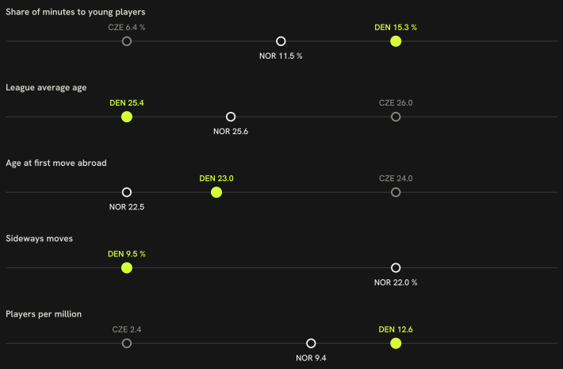
How to read it: one rung per stage of the argument, each on its own scale, so the dots show the distance between countries, not the size of the number. The filled acid dot is Denmark; the open dots are the two comparison countries. Under each rung is which direction means a more open pathway. Hover a dot for the exact value.
Share of league minutes that went to players aged 21 or under
DEN 15.3 %NOR 11.5 %CZE 6.4 %
Clubs that gave those young players more than a tenth of their own playing time
DEN 11 of 12 clubsNOR 12 of 16 clubsCZE 9 of 16 clubs
Under-21 nationals who were regular starters, per club in the league
DEN 2.50 per club (30 players)NOR 1.56 per club (25 players)CZE 1.06 per club (17 players)
The regular-starter line is drawn at ten starts; at five it is 3.2 per club, at fifteen 1.6 (ten: 2.5).
They are not being used as late substitutes: 14.6 % of the league’s starts went to them against 15.3 % of its minutes, and when one of them started he was on the pitch for 77 minutes against the league’s own 79. The difference between these countries is how many young players are picked at all, not how they are used once picked.
Players in Europe's strongest leagues, for every million people
DEN 12.58NOR 9.37CZE 2.39
Around the 2021/22 season, the model finds a possible shift in the count of Danish players in Europe's strongest leagues, with 23 percent probability that it is a genuine change rather than an ordinary season-to-season dip. Break & forecast.
If you take one thing from this: the single measured link that carries the most of the gap is different for each comparison — how strong the domestic league is for Norway, how much playing time young players get at home for Czechia. That is one decomposition over 8 countries — a description of the gap, not a weight to plan by.
What this does not show
Money: transfer fees, wages and academy budgets play no part in any number above.
How the academy and coaching set-up actually work day to day, which no public data source used here can see.
Agents, and how a move abroad actually gets arranged, which happens off any table this pipeline can read.
The direction of the arrow: a low share of playing time for young players at home could help cause a thin generation, or just as easily be a symptom of one — the five numbers above are associations measured the same way for every country.
How deep is the pool?
The next three questions count who is in the pool and where the count runs thin.
Is the Danish pool thin?
Denmark leads 9 countries at 12.58 per million; Croatia is next at 12.18.
DEN
Denmark
12.58
CRO
Croatia
12.18
NOR
Norway
9.37
SUI
Switzerland
6.03
AUT
Austria
4.80
SVK
Slovakia
3.14
CZE
Czechia
2.39
HUN
Hungary
1.57
POL
Poland
1.23
How we know
As an analytics question In numbers: distinct players with ≥ 450 minutes on 2025/26 rosters of the 9 strongest leagues, per million inhabitants, against 9 peers.
What we did We counted every player with the home nation's nationality who had real playing time in one of Europe's strongest leagues that season, then divided the count by the country's population.
Sources Distinct players with ≥ 450 minutes on 2025/26 rosters of the 9 strongest leagues ÷ population (Eurostat 2024); every country counted the same way.
A federation tracking this would watch the per-million rank move over seasons, not any one year's number.
Where exactly is it thin?
The largest cohort gap: Forwards aged 30+, 0 Danish players vs a peer median of 1.
Group
Cohort
DEN
Peer median
Forwards
30+
0
1
Defenders
30+
2
2
Defenders
U22
2
1
Forwards
26-29
2
1
Forwards
U22
1
0
How we know
As an analytics question In numbers: Danish player count against the peer-country median, by age cohort and position group, ≥ 450 minutes, 2025/26 season.
What we did We split players into position groups and age bands, counted how many the home nation had in each one, and compared that count with the middle value among the other countries.
Sources Age at season start; cohorts U22 / 23–25 / 26–29 / 30+; ≥ 450 minutes.
A federation tracking this would watch which cohort's gap narrows or widens season to season, not just today's snapshot.
Where does the path leak?
From here the questions follow a player through youth minutes at home, the move abroad, and how that move turns out.
Do young players get minutes at home?
Under-21s get 15.3 % of the home league’s minutes. In Denmark, the best of the peers, 15.3 %.
How sure is the link to the top? Across 8 countries, ten points more under-21 share go with +10.11 more top-9 players per million, but the interval (−1.69 to 23.26) includes zero; within countries, from one season to the next, the estimate is −0.16 (−2.53 to 2.17) — nothing. The share is a fact; its weight in the gap is not settled.
DEN
Denmark
15.3 %
HUN
Hungary
14.1 %
CRO
Croatia
14.0 %
NOR
Norway
11.5 %
AUT
Austria
9.3 %
POL
Poland
9.3 %
SUI
Switzerland
7.7 %
CZE
Czechia
6.4 %
SVK
Slovakia
—
Across countries
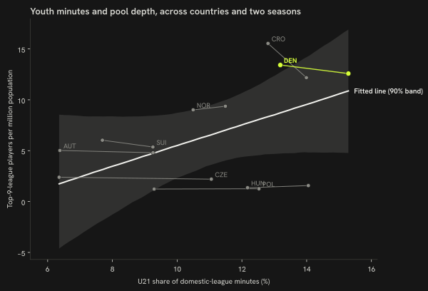
How we know
Across the 8 countries (country averages over both seasons), 10 points more U21 share go with +10.11 more top-9 players per million (−1.69–23.26).
As an analytics question In numbers: share of domestic-league minutes played by players aged ≤ 21 at season start, 2025/26, by country's top flight.
What we did We counted every minute played in the league and looked at how many of them went to players aged 21 or younger.
Sources Share of all league minutes played by players aged ≤ 21 at season start, 2025/26, per domestic top flight.
A federation tracking this would watch the U21 share season by season, not the export count.
105 of 218 play abroad; 54 % in the 9 strongest leagues, 10 % moved sideways (to a league no stronger than the Danish one).
57
top-9 median multiplier 0.788
54 %
39
peer country league median multiplier 0.374
37 %
7
stepping stone median multiplier 0.473
7 %
2
other median multiplier 0.434
2 %
How we know
As an analytics question In numbers: destination-league tier of every Danish-eligible player's 2025/26 row, split into top-9, sideways and other abroad moves.
What we did We looked at where every eligible player was actually playing that season and grouped each one by how strong that league is compared with the player's own home league.
Sources Destination league of every Danish-eligible player's 2025/26 row; sideways = destination multiplier ≤ Danish league multiplier (league strength: two estimates, § Methodology).
A federation tracking this would watch the sideways-move share over time, not the raw count of players abroad.
Does leaving later cost anything?
No. Players who reach the top-9 at 21 and at 24 produce the same league-adjusted G+A per 90 over their first two seasons (difference +0.001, an interval that includes zero, n = 115). Danish exports arrive at a median age of 22.
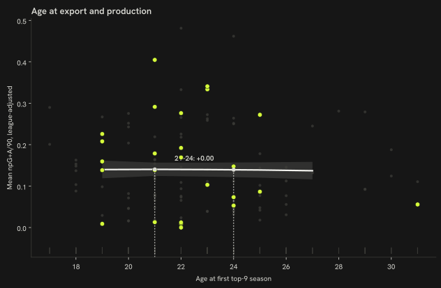
How to read it: the horizontal axis is a player’s age in his first top-9 season; the vertical axis is his league-adjusted goals plus assists per 90 over the first two seasons there. The line is the model’s expected value at each age, the band its 90 % interval; a flat line means arriving later costs nothing measurable. Acid dots are Danish exports — hover for the name.
How we know
At 21: 0.14 (0.12–0.16); at 24: 0.14 (0.12–0.16); the difference +0.001 (−0.011–0.012).
As an analytics question In numbers: mean league-adjusted goals + assists per 90 over the first two top-9 seasons, as a function of age at the first one, given origin-league strength and position, 115 peer-nationality exports.
What we did We looked at the age a player first arrived in one of the strongest leagues and checked whether players who arrived earlier ended up producing more, once we accounted for the strength of the league they came from.
Sources Age curve (quadratic) on league-adjusted production, given origin-league strength (§ Methodology), position and a country effect, 115 peer-nationality exports (Gelman et al., 2013; Hoffman and Gelman, 2014); better players tend to leave earlier, so the curve mixes selection with development and this report does not separate them.
A federation tracking this would watch how the age-at-export curve shifts across cohorts, not any single player's outcome.
How do they fare there?
Danish exports keep 46 % of their club's minutes (6th of 9).
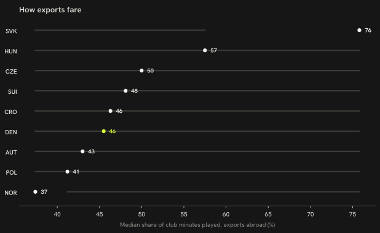
How to read it: one row per country, sorted; the dot is the median share of his club’s minutes that a country’s exported player keeps, the thin line the range across its exports. Danish exports are the acid row. Further right means exports who play, not sit.Country-by-country figures
SVK
Slovakia n = 17
76 %
HUN
Hungary n = 15
57 %
CZE
Czechia n = 26
50 %
SUI
Switzerland n = 54
48 %
CRO
Croatia n = 47
46 %
DEN
Denmark n = 75
46 %
AUT
Austria n = 44
43 %
POL
Poland n = 45
41 %
NOR
Norway n = 52
37 %
How we know
A Superliga season converts to 0.64 of a Premier League one by the transfer-graph model (0.58–0.70), against 0.37 by UEFA coefficient.
As an analytics question In numbers: median share of a club's 2025/26 minutes kept by players abroad, by country of origin.
What we did We worked out what share of each club's playing time the player actually got, and where that club stood in its own league's scoring table that season.
A federation tracking this would watch whether an export's minutes share holds after the first season, not just the median.
What reaches the national team?
The last stretch looks at what actually gets picked, and when the door to the biggest leagues opened and shut.
What is the national-team squad built from?
69 % of the UEFA Euro 2024 squad plays in the 9 strongest leagues; Switzerland 81 %.
Top-9 %
Stepping %
Domestic %
Other %
Joachim Andersen
Rasmus Højlund
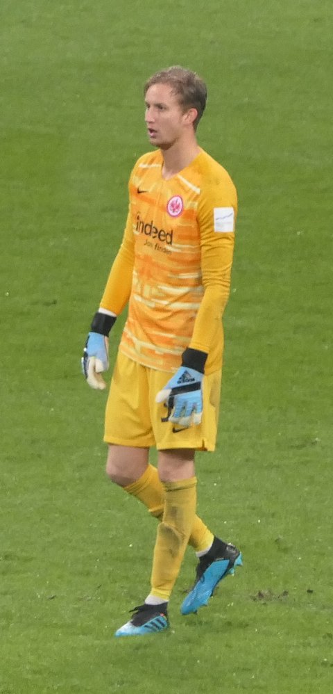
Frederik Rønnow
Christian Eriksen
Morten Hjulmand
Mathias Jensen
Mikkel Damsgaard
Mads Hermansen
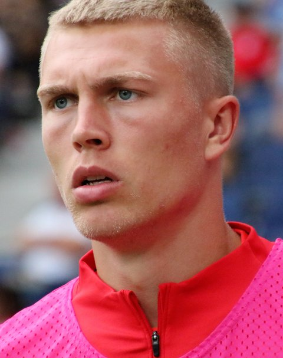
Rasmus Kristensen
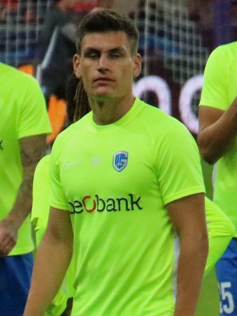
Joakim Mæhle
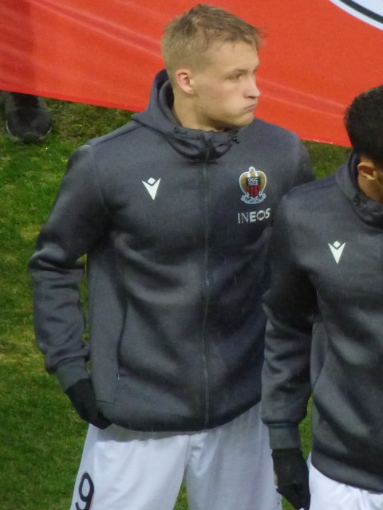
Kasper Dolberg
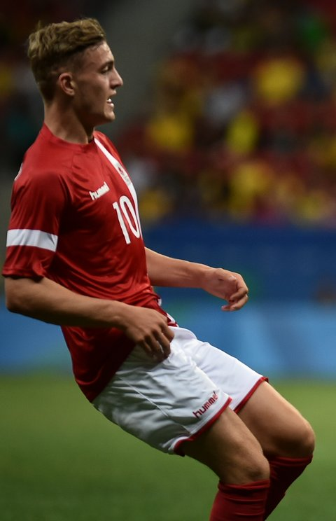
Jacob Bruun Larsen
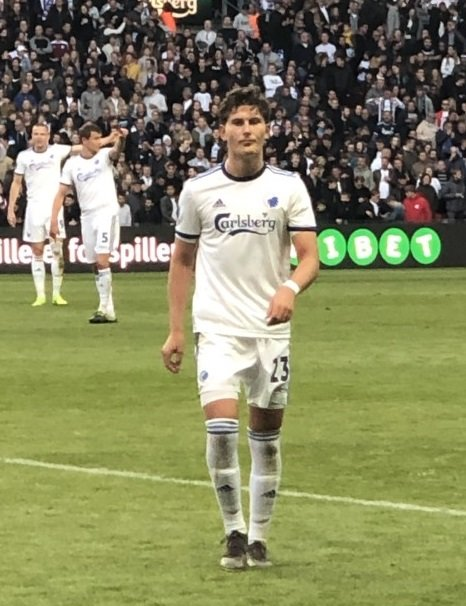
Jonas Wind
Alexander Bah
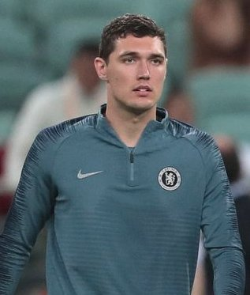
Andreas Christensen
ASAndreas Skov Olsen
Yussuf Poulsen
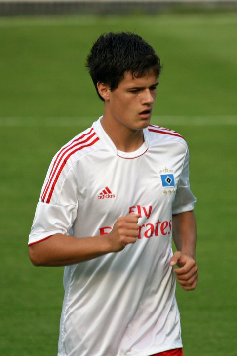
Christian Nørgaard
Thomas Delaney
Mathias Jørgensen
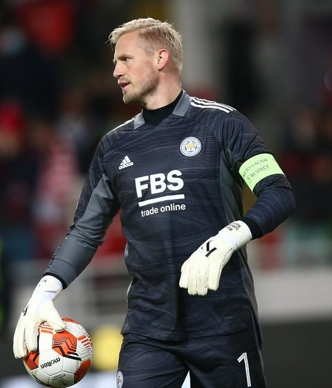
Kasper Schmeichel
Jannik Vestergaard
SKSimon Kjær
VKVictor Kristiansen
PHPierre-Emile Højbjerg
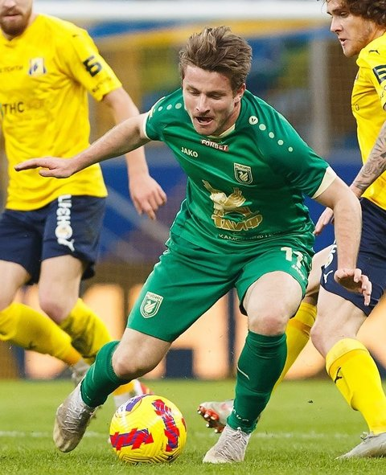
Anders Dreyer
How the peers are sourced
Top-9 %
Stepping %
Domestic %
Other %
DEN Denmark
Squad 26
69 %
SUI Switzerland
Squad 26
81 %
AUT Austria
Squad 26
69 %
CZE Czechia
Squad 26
42 %
How we know
As an analytics question In numbers: league tier of every UEFA Euro 2024 squad member's most-minutes 2025/26 row, matched by name and birth year, per country.
What we did We matched every named squad player to his club season and recorded which level of league he was actually playing in.
Sources Wikipedia squad lists matched to 2025/26 league rows; tier = league of the most-minutes row.
A federation tracking this would watch the tier mix of future squads over cycles, not one tournament's snapshot.
When did the train leave?
Danish players with ≥ 450 Big-5 minutes: 38 at the 2025/26 peak, 13 at the 1995/96 low, 38 in 2025/26. The break is dated to 2021/22.
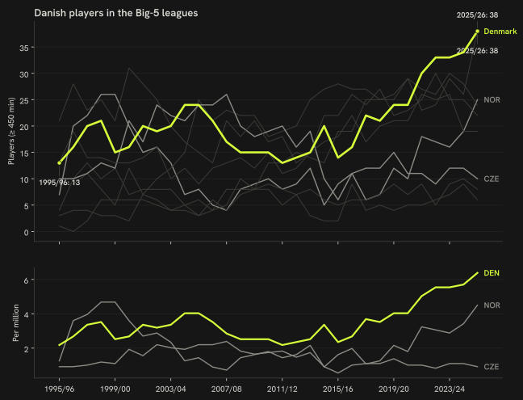
How to read it: each line is one country’s count of players with at least 450 minutes in the five biggest leagues, season by season since 1995/96. Danish players are the acid line; the dashed rules are the seasons the model dates the rise and the fall to, with their probabilities; the point past the last season is the forecast for next season with its 90 % interval. Toggle countries and switch to per million to compare fairly across sizes.
How we know
Break posterior 23 %; a level change of ×1.41 (0.88–1.97).
As an analytics question In numbers: Danish players with ≥ 450 minutes in the Big-5 leagues each season since 2020/21, with the rise and the fall each dated by a change-point model.
What we did We counted, season by season, how many home-nation players had real playing time in Europe's five biggest leagues, then looked for the two seasons where that count changed level for good — once up, once down — and stayed there.
Sources FBref Big-5 player tables 1995/96 → 2025/26; peers on the same rule; the names are the most-minutes Danish players of each peak season, goalkeepers included — a lineup of presence, not a quality ranking: 2025/26: Victor Nelsson, Morten Frendrup, Joachim Andersen; 2024/25: Morten Frendrup, Mikkel Damsgaard, Christian Nørgaard; 2022/23: Kasper Schmeichel, Pierre Højbjerg, Rasmus Nicolaisen. The break dates come from a Bayesian local-level model with two ordered change points, one for the rise and one for the fall (Adams and MacKay, 2007); detail in § Methodology.
A federation tracking this would watch whether the post-break level holds for another season, not treat one break as final.
How to read it: six measures, each rescaled so 0 is the worst of the three countries and 1 the best, one line per country. A line that stays high is a pathway that is open at every stage; where the acid line dips is where Denmark loses ground.The six numbers, unscaled
Metric
DEN
NOR
CZE
Players per million
12.58
9.37
2.39
U21 share of domestic minutes
15.3 %
11.5 %
6.4 %
Export age (recent)
22
22
22
Sideways moves
10 %
22 %
—
Exports' club-minutes share
46 %
37 %
50 %
National-team squad in the top-9 leagues
69 %
—
42 %
Big-5 players now
38
25
10
How we know
As an analytics question In numbers: Norway and Czechia against Denmark on the same six 9-strongest-league pathway definitions, same seasons.
What we did We compared the home nation with the two comparison countries on six numbers, each one defined and measured in exactly the same way for all three.
Sources Same definitions, same seasons; a comparison, not a causal claim. Each metric is rescaled 0-1 across the three countries for the chart above, direction chosen so 1.0 is always the more open pathway (more players per million, more U21 minutes, an earlier export age, fewer sideways moves, a bigger minutes share abroad, more of the squad in the top-9); the table below keeps the raw numbers.
A federation tracking this would watch which of the six numbers moves first, not the overall picture alone.
Do goalkeepers follow a different path?
4 Danish goalkeepers play ≥ 450 minutes in the top-9 leagues — rank 1 of 9 per million — and they get there later than outfield exports.
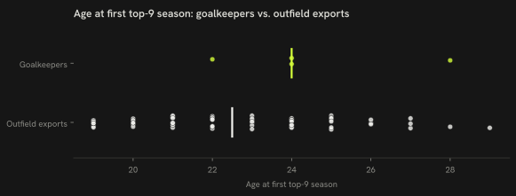
How to read it: one dot per player at the age of his first season in a top-9 league; goalkeepers in the upper strip, outfield exports in the lower, medians marked. Further left is an earlier first appearance.Club tier: Danish top-9 goalkeepers, 2025/26
Player
Club
League
Minutes
Club goals percentile
Andreas Jungdal
Westerlo
BEL-Pro League
3600
44 %
Frederik Rønnow
Union Berlin
GER-Bundesliga
2640
39 %
Jonathan Fischer
Metz
FRA-Ligue 1
2354
25 %
Mads Hermansen
West Ham
ENG-Premier League
1620
30 %
Goalkeeper production: Danish keepers, 2025/26
Player
Club
League
Minutes
GA/90
Saves/90
Save %
Clean-sheet share
GA/90, quality-adj.
Mads Hermansen
West Ham
ENG-Premier League
1620
1.56
2.94
65.9 %
39 %
1.49
Frederik Rønnow
Union Berlin
GER-Bundesliga
2640
1.84
2.56
64.3 %
17 %
2.25
Jonathan Fischer
Metz
FRA-Ligue 1
2354
2.14
3.52
65.0 %
18 %
2.90
Andreas Jungdal
Westerlo
BEL-Pro League
3600
1.43
2.77
68.8 %
35 %
2.50
Jesper Hansen
AGF
DEN-Superliga
2700
0.97
3.03
65.4 %
30 %
2.91
Valdemar Thorsen
FC Fredericia
DEN-Superliga
990
1.73
2.82
63.9 %
0 %
4.27
Jonas Lössl
Midtjylland
DEN-Superliga
450
1.80
2.00
63.8 %
20 %
4.17
Andreas Hansen
Nordsjælland
DEN-Superliga
2430
1.22
3.44
65.2 %
33 %
3.44
William Lykke
Nordsjælland
DEN-Superliga
450
2.60
1.40
63.4 %
0 %
4.89
Theo Sander
Odense
DEN-Superliga
600
2.25
1.65
63.4 %
0 %
4.73
Jannich Storch
Randers
DEN-Superliga
540
1.67
2.33
63.9 %
33 %
4.08
Nicolai Larsen
Silkeborg
DEN-Superliga
2788
2.10
4.58
64.9 %
10 %
5.21
Marcus Bundgaard
SønderjyskE
DEN-Superliga
2097
1.33
2.75
64.4 %
29 %
3.66
Nicolai Flø
SønderjyskE
DEN-Superliga
693
2.08
3.25
63.9 %
22 %
4.60
Lucas Lund Pedersen
Viborg
DEN-Superliga
2880
1.59
3.03
64.2 %
28 %
4.19
Peter Vindahl Jensen
Sparta Prague
CZE-First League
1908
1.08
2.03
67.3 %
36 %
2.59
Hans Christian Bernat
Karlsruher
GER-2. Bundesliga
2970
1.85
3.76
67.3 %
15 %
3.69
Oliver Christensen
Sturm Graz
AUT-Bundesliga
1316
1.23
2.67
66.2 %
33 %
4.72
Jonathan Fischer
Fredrikstad
NOR-Eliteserien
1530
1.18
3.06
66.7 %
29 %
3.37
Jakob Haugaard
Tromsø
NOR-Eliteserien
2700
1.20
2.07
65.9 %
33 %
3.34
Oscar Hedvall
Vålerenga
NOR-Eliteserien
1260
1.86
3.57
66.2 %
21 %
4.46
Peer median quality-adjusted GA/90:
DEN 3.69 · NOR 4.01 · SUI 4.95 · AUT 4.76 · CZE 2.86 · CRO 5.19 · POL 2.74 · HUN 5.29 · SVK 2.90
Goalkeepers per million, by country
DEN
Denmark
0.67
CRO
Croatia
0.52
SUI
Switzerland
0.45
SVK
Slovakia
0.37
CZE
Czechia
0.37
POL
Poland
0.19
NOR
Norway
0.18
AUT
Austria
0.11
HUN
Hungary
0.10
How we know
0.67 per million; first top-9 season at a median age of 24, against 22.5 for outfield exports.
As an analytics question In numbers: Danish goalkeepers with ≥ 450 minutes in the top-9 leagues, per million inhabitants, against outfield export age.
What we did We counted goalkeepers the same way we counted outfield players, then compared the age each group first reached one of the strongest leagues.
Sources 450-minute floor, 2025/26 rosters, same K = 900 shrinkage as the rest of the report; first season in a fetched top-9 table; players already there in 2020/21 are censored — 25 % of the goalkeepers, 19 % of the outfield exports; a comparison of two pathways inside one nation, not a causal claim.
A federation tracking this would watch whether the goalkeeper pathway keeps diverging from outfield export age, not one season's gap.
What is the gap made of?
Of the −3.21 players per million between Norway and Denmark, U21 minutes go with −3.15, league strength with +3.49, export age with 0.00.
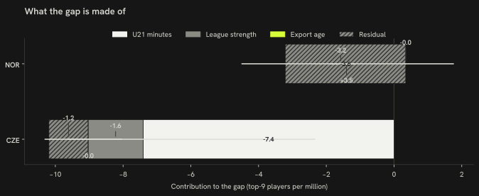
How to read it: the whole bar is the gap in players per million between the comparison country and Denmark. Each segment is how much of that gap goes with one measured channel — youth minutes, league strength, export age — under the decomposition; the hatched remainder is what the three channels do not carry. A segment can be negative when the channel works the other way.
How we know
−3.55 is not carried by the three channels.
As an analytics question In numbers: a linear split of the per-capita gap into U21 minutes, league strength and export age across 8 peer countries.
What we did We used the players who changed leagues to work out what a season in one league is worth in another, then split the gap between countries into the parts that line up with young players' minutes, league strength and the age players move abroad.
Sources Ridge-regression linear split, Blinder-Oaxaca-style (Oaxaca, 1973; Blinder, 1973), fit on the 8 peer countries with data on all three channels; bootstrap 90 % intervals, 1000 resamples; a decomposition of a correlation, not a causal accounting.
A federation tracking this would watch which channel's contribution grows, not treat the split as fixed.
Why these cards: one card per position group per rule, applied in this order — (a) highest goals + assists per 90, league-adjusted, (b) youngest national-team call-up, (c) most top-9 minutes among the UEFA Euro 2024 squad, (d) most domestic-league minutes among the UEFA Euro 2024 squad, (e) most top-9 minutes, (f) most domestic minutes under 23 without a top-9 season. A player already chosen by an earlier rule falls through to the next name, so a later row can show the second name by its measure. Rows group the six rules; the national-team core row holds two of them.
Style mapOlder forwards with moderate playing timeQuality mapHigh-card-rate forwards
Tactical read
Experienced forwards on managed minutes — median age 31, about 40 % of minutes, output at median. The impact or target forward used in rotation (Holten, Nartey, Dolberg).
Trajectory 2024/25 → 2025/26
↑improving+0.07G+A / 90 adj.1368 min → 932 min
Historical analogs at age 21
LázaroBRA
ESP-La Liga 2022/23 · 716 min · 0.45 ·
d = 0.44
Adam HložekCZE
GER-Bundesliga 2022/23 · 1286 min · 0.42 ·
d = 0.47
Valentin MihailaROU
ITA-Serie A 2020/21 · 698 min · 0.38 ·
d = 0.53
UEFA European Under-21 Championship 2025
Selected as: highest goals + assists per 90, league-adjusted among FW.
Veteran rotation midfielders — median age 30 on managed minutes (40 %), output at median, card rate above it. Experience kept in the squad rather than on the pitch every week (Jørgensen, Vallys, Eriksen).
Trajectory 2024/25 → 2025/26
↑improving+0.24G+A / 90 adj.2682 min → 1449 min
Historical analogs at age 22
Noni MaduekeENG
ENG-Premier League 2023/24 · 1053 min · 0.37 ·
d = 0.54
Kai HavertzGER
ENG-Premier League 2020/21 · 1520 min · 0.32 ·
d = 0.62
Crysencio SummervilleNED
ENG-Premier League 2022/23 · 1426 min · 0.31 ·
d = 0.67
Selected as: highest goals + assists per 90, league-adjusted among MF.
Style mapHigh-assist forwardsQuality mapHigh-volume scorers in top-five leagues
Tactical read
Creators from the front line — assist rate more than double the forward median on rotation minutes (38 %), scoring at median. Wide forwards and second strikers who feed the box rather than occupy it (Højlund, Jensen, Bech).
Trajectory 2024/25 → 2025/26
↑improving+0.14G+A / 90 adj.2004 min → 2750 min
Historical analogs at age 23
Khvicha KvaratskheliaGEO
ITA-Serie A 2023/24 · 2737 min · 0.44 ·
d = 0.20
Vinicius JúniorBRA
ESP-La Liga 2022/23 · 2823 min · 0.45 ·
d = 0.41
Joshua ZirkzeeNED
ITA-Serie A 2023/24 · 2759 min · 0.35 ·
d = 0.54
UEFA Euro 2024
Selected as: most top-9 minutes among UEFA Euro 2024 squad FW.
Veteran rotation midfielders — median age 30 on managed minutes (40 %), output at median, card rate above it. Experience kept in the squad rather than on the pitch every week (Jørgensen, Vallys, Eriksen).
Trajectory 2024/25 → 2025/26
→stable+0.04G+A / 90 adj.1061 min → 2410 min
Historical analogs at age 34
Pascal GroßGER
GER-Bundesliga 2024/25 · 2327 min · 0.25 ·
d = 0.12
Christopher TrimmelAUT
GER-Bundesliga 2020/21 · 2572 min · 0.25 ·
d = 0.22
Ivan RakitićCRO
ESP-La Liga 2021/22 · 2182 min · 0.25 ·
d = 0.32
UEFA Euro 2024
Selected as: most top-9 minutes among UEFA Euro 2024 squad MF.
Style mapHigh-assist defenders with high playing timeQuality mapYoung low-minute defenders
Tactical read
Attacking full-backs — assist rate seven times the DF median on starter minutes (65 %). The wide defender whose job ends in the final third (Nelsson, Rieper, Andersen).
Trajectory 2024/25 → 2025/26
→stable+0.02G+A / 90 adj.2583 min → 2875 min
Historical analogs at age 30
Joël VeltmanNED
ENG-Premier League 2021/22 · 2874 min · 0.06 ·
d = 0.21
Omar AlderetePAR
ENG-Premier League 2025/26 · 2798 min · 0.06 ·
d = 0.24
Nélson SemedoPOR
ENG-Premier League 2022/23 · 2632 min · 0.03 ·
d = 0.33
UEFA Euro 2024
Selected as: most top-9 minutes among UEFA Euro 2024 squad DF.
Starting playmakers — assist rate three times the midfield median on 62 % of minutes, scoring nearly double. The creative hub of the middle third (Grønning, Oggesen, Nielsen).
Trajectory 2024/25 → 2025/26
→stable−0.04G+A / 90 adj.1649 min → 1009 min
Historical analogs at age 35
Jan KopicCZE
CZE-First League 2024/25 · 1023 min · 0.14 ·
d = 0.45
Paweł OlkowskiPOL
POL-Ekstraklasa 2024/25 · 744 min · 0.09 ·
d = 0.48
Florent MolletFRA
SUI-Super League 2025/26 · 1183 min · 0.07 ·
d = 0.50
UEFA Euro 2024
Selected as: most domestic minutes among UEFA Euro 2024 squad MF.
Development defenders — median age 22, about a third of minutes, output at the floor. The tier the 23–25 cohort draws from (Dalsgaard, Nielsen, Sørensen).
Trajectory 2024/25 → 2025/26
→stable−0.02G+A / 90 adj.1417 min → 988 min
Historical analogs at age 36
Haitam AleesamiNOR
NOR-Eliteserien 2026/27 · 1041 min · 0.03 ·
d = 0.09
Kian HansenDEN
DEN-Superliga 2024/25 · 1122 min · 0.02 ·
d = 0.22
Brian HamalainenDEN
DEN-Superliga 2024/25 · 801 min · 0.02 ·
d = 0.27
UEFA Euro 2024
Selected as: most domestic minutes among UEFA Euro 2024 squad DF.
Youngest national-team call-up
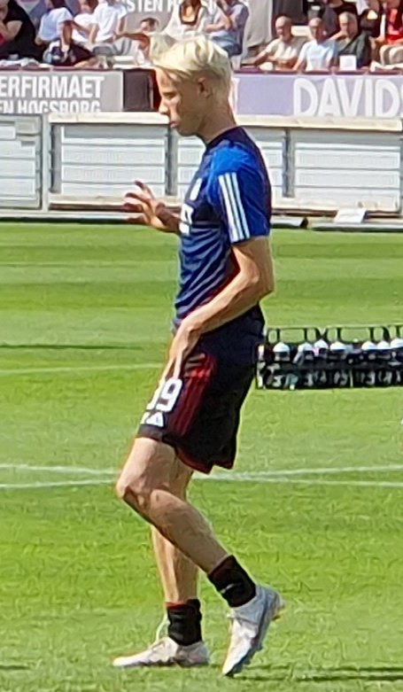
Oscar HøjlundFrankfurtMF0.15G+A / 90 adj.—Career →
Ball-winning, duel-heavy midfielders — the card rate (about 2.5 times the midfield median) is the defining feature, production at the floor of the group. The destroyer profile, often in a double pivot (Davidsen, Pedersen, Janssen).
Historical analogs at age 21
GaviESP
ESP-La Liga 2024/25 · 1085 min · 0.15 ·
d = 0.10
Yan CoutoBRA
ESP-La Liga 2022/23 · 1158 min · 0.17 ·
d = 0.19
Romano SchmidAUT
GER-Bundesliga 2020/21 · 1177 min · 0.17 ·
d = 0.22
UEFA European Under-21 Championship 2025
Selected as: youngest national-team call-up among MF.
Experienced defenders on managed minutes — median age 31, 44 % of minutes, output at the floor. Leadership and cover rather than a starting role (Høgsberg, Flö, Markmann).
Historical analogs at age 22
Alessandro BuongiornoITA
ITA-Serie A 2020/21 · 858 min · 0.01 ·
d = 0.04
Bosko SutaloCRO
ITA-Serie A 2021/22 · 920 min · 0.01 ·
d = 0.12
Adam ObertSVK
ITA-Serie A 2023/24 · 941 min · 0.01 ·
d = 0.15
UEFA European Under-21 Championship 2025
Selected as: youngest national-team call-up among DF.
Style mapHigh-assist forwardsQuality mapHigh-volume scorers in top-five leagues
Tactical read
Creators from the front line — assist rate more than double the forward median on rotation minutes (38 %), scoring at median. Wide forwards and second strikers who feed the box rather than occupy it (Højlund, Jensen, Bech).
Trajectory 2024/25 → 2025/26
↑improving+0.09G+A / 90 adj.1110 min → 2615 min
Historical analogs at age 24
Francis AmuzuBEL
BEL-Pro League 2022/23 · 2299 min · 0.22 ·
d = 0.43
Juan SantosBRA
TUR-Süper Lig 2025/26 · 2571 min · 0.25 ·
d = 0.46
Chukwubuikem IkwuemesiNGA
BEL-Pro League 2024/25 · 2329 min · 0.20 ·
d = 0.46
Style mapHigh-scoring attacking midfieldersQuality mapProductive midfielders in top-five leagues
Tactical read
Goal-scoring attacking midfielders — non-penalty goal rate three times the midfield median on starter minutes (56 %). The number 8/10 who arrives in the box (Frendrup, Froholdt, Jørgensen).
Trajectory 2024/25 → 2025/26
→stable−0.02G+A / 90 adj.3103 min → 3081 min
Historical analogs at age 25
Kaishū SanoJPN
GER-Bundesliga 2024/25 · 3043 min · 0.04 ·
d = 0.35
Maxime LopezFRA
ITA-Serie A 2021/22 · 2938 min · 0.09 ·
d = 0.41
Philipp TreuGER
GER-Bundesliga 2024/25 · 2881 min · 0.08 ·
d = 0.49
Selected as: most top-9 league minutes among MF.
Victor NelssonNordsjællandDF0.01G+A / 90 adj.—Career →
DFNordsjælland
Victor Nelsson
DF · 28 · Nordsjælland (2026/27)
2025/26 · Hellas Verona · ITA-Serie A
G+A / 90 adj.
0.01
Non-penalty goals / assists per 90
0.00 / 0.00
Minutes
3315 (97 %)
Style mapHigh-assist defenders with high playing timeQuality mapYoung low-minute defenders
Tactical read
Attacking full-backs — assist rate seven times the DF median on starter minutes (65 %). The wide defender whose job ends in the final third (Nelsson, Rieper, Andersen).
Historical analogs at age 28
Federico BaschirottoITA
ITA-Serie A 2023/24 · 3294 min · 0.02 ·
d = 0.17
Johan VásquezMEX
ITA-Serie A 2025/26 · 3215 min · 0.02 ·
d = 0.21
Sebastiano LupertoITA
ITA-Serie A 2023/24 · 3406 min · 0.04 ·
d = 0.34
Selected as: most top-9 league minutes among DF.
Most domestic minutes under 23, no top-9 season yet
Style mapHigh-assist forwardsQuality mapHigh-volume scorers in top-five leagues
Tactical read
Creators from the front line — assist rate more than double the forward median on rotation minutes (38 %), scoring at median. Wide forwards and second strikers who feed the box rather than occupy it (Højlund, Jensen, Bech).
Trajectory 2024/25 → 2025/26
→stable+0.01G+A / 90 adj.1582 min → 2330 min
Historical analogs at age 23
Daniel KarlsbakkNOR
NOR-Eliteserien 2025/26 · 2347 min · 0.17 ·
d = 0.11
Tobias BechDEN
DEN-Superliga 2024/25 · 2262 min · 0.15 ·
d = 0.12
Bohdan ViunnykUKR
POL-Ekstraklasa 2024/25 · 2329 min · 0.16 ·
d = 0.33
Selected as: most domestic-league minutes among under-23 FW without a top-9 season.
Style mapOlder rotation midfieldersQuality mapProductive midfielders in top-five leagues
Tactical read
Veteran rotation midfielders — median age 30 on managed minutes (40 %), output at median, card rate above it. Experience kept in the squad rather than on the pitch every week (Jørgensen, Vallys, Eriksen).
Trajectory 2024/25 → 2025/26
→stable+0.03G+A / 90 adj.1741 min → 2579 min
Historical analogs at age 21
Jens Hjertø-DahlNOR
NOR-Eliteserien 2025/26 · 2372 min · 0.11 ·
d = 0.33
Mateusz KowalczykPOL
POL-Ekstraklasa 2024/25 · 2465 min · 0.12 ·
d = 0.38
Tomasz PieńkoPOL
POL-Ekstraklasa 2024/25 · 2487 min · 0.10 ·
d = 0.41
UEFA European Under-21 Championship 2025
Selected as: most domestic-league minutes among under-23 MF without a top-9 season.
Westerlo (BEL-Pro League) · 44 % of the league's goals scored
UEFA European Under-21 Championship 2025
Selected as: most top-9 minutes among home goalkeepers.
* Each card renders the existing dataset; no computation beyond the join. Age on the name line is the 2026/27 season-start age (start year − birth year); the club is from the 2026/27 tables, or — labelled "latest known" — from FBref's country page where the player has no 2026/27 row. Age on the analog line follows the analog finder's convention (season start year + 1 − birth year).
The atlas: every player-season of 2025/26, one dot each
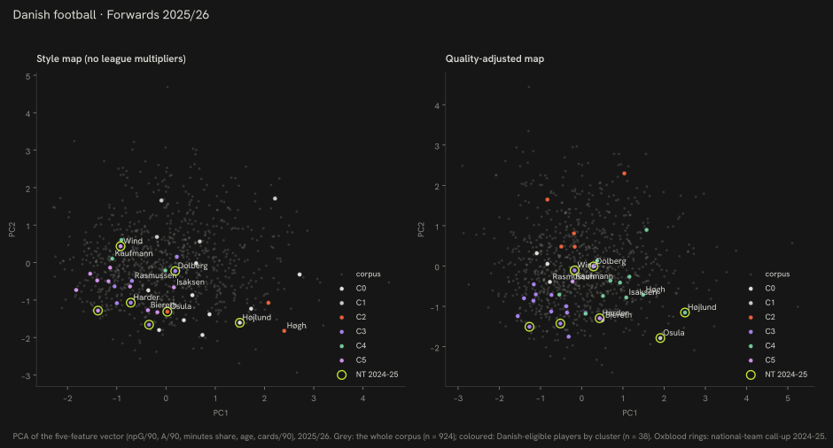
How to read it: every dot is the 2025/26 season of one of the forwards in the leagues this report covers. The two axes are the first two principal components of his five per-90 numbers (goals, assists, minutes share, age, cards) — dots that sit close together had similar seasons. The style projection uses the raw numbers, the quality projection the league-adjusted ones, so switching shows who moves when the strength of his league is counted. Colours are the clusters named below; acid dots are Danish-eligible players, a white ring marks a national-team call-up. Hover a dot for the player, click to pin, scroll to zoom, type a name to find him.
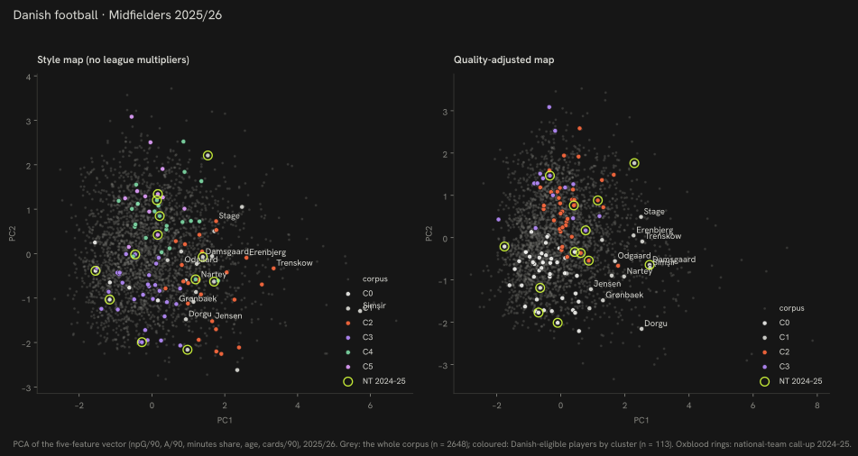
How to read it: every dot is the 2025/26 season of one of the midfielders in the leagues this report covers. The two axes are the first two principal components of his five per-90 numbers (goals, assists, minutes share, age, cards) — dots that sit close together had similar seasons. The style projection uses the raw numbers, the quality projection the league-adjusted ones, so switching shows who moves when the strength of his league is counted. Colours are the clusters named below; acid dots are Danish-eligible players, a white ring marks a national-team call-up. Hover a dot for the player, click to pin, scroll to zoom, type a name to find him.
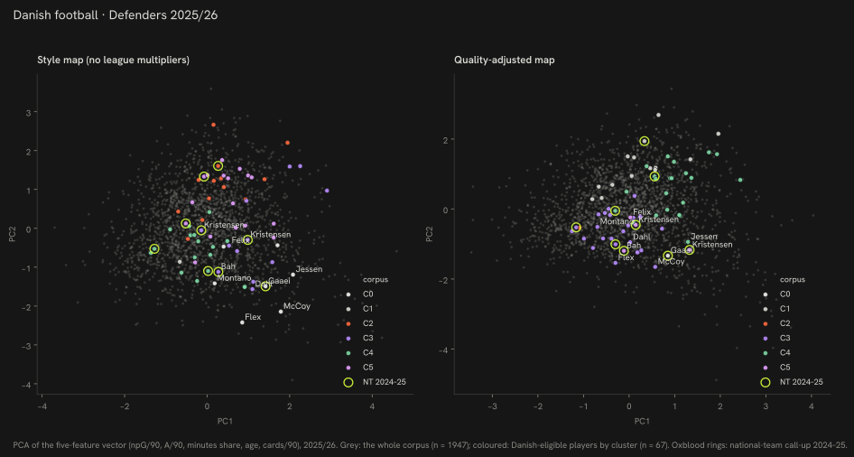
How to read it: every dot is the 2025/26 season of one of the defenders in the leagues this report covers. The two axes are the first two principal components of his five per-90 numbers (goals, assists, minutes share, age, cards) — dots that sit close together had similar seasons. The style projection uses the raw numbers, the quality projection the league-adjusted ones, so switching shows who moves when the strength of his league is counted. Colours are the clusters named below; acid dots are Danish-eligible players, a white ring marks a national-team call-up. Hover a dot for the player, click to pin, scroll to zoom, type a name to find him.
Every player in the 2025/26 pool — all 244, searchable
The cards above pick by rule. This is everyone with a 2025/26 season in the data: 38 forwards, 113 midfielders, 67 defenders and 26 goalkeepers. Open a name for what the report measures about him, in plain words. Rank is within his own position group on quality-adjusted production; the two arrows mark a mid-season move.
244 of 244
PlayerAgePosClubMinutesRank
Victor Nelsson26DFHellas Verona3 31567/67
playing time97
selection81
output3
crossing25
defending93
drawing fouls34
Percentiles among all defenders with at least 450 minutes in the covered leagues, 2025/26 — 100 is the top.
26, defender, Hellas Verona (ITA-Serie A, top-9 league).
Started 37 games and came on 1 times, finishing 35 of the starts; 89 minutes in a typical start and 97 % of his club’s available minutes.
0.00 non-penalty goals and 0.00 assists per 90; adjusted for the strength of his league that is 0.01, which ranks him 67 of 67 defenders in the pool.
Per 90 he attempts 0.1 crosses, wins 1.2 tackles, makes 2.0 interceptions and is fouled 0.5 times.
Percentiles among all midfielders with at least 450 minutes in the covered leagues, 2025/26 — 100 is the top.
24, midfielder, Genoa (ITA-Serie A, top-9 league).
Started 35 games and came on 1 times, finishing 26 of the starts; 87 minutes in a typical start and 90 % of his club’s available minutes.
0.03 non-penalty goals and 0.00 assists per 90; adjusted for the strength of his league that is 0.05, which ranks him 102 of 113 midfielders in the pool.
Per 90 he attempts 0.1 crosses, wins 2.1 tackles, makes 1.2 interceptions and is fouled 1.1 times.
Percentiles among all defenders with at least 450 minutes in the covered leagues, 2025/26 — 100 is the top.
30, defender, Silkeborg (Superliga).
Started 32 games and came on 0 times, finishing 32 of the starts; 90 minutes in a typical start and 100 % of his club’s available minutes.
0.12 non-penalty goals and 0.03 assists per 90; adjusted for the strength of his league that is 0.05, which ranks him 15 of 67 defenders in the pool.
Per 90 he attempts 1.5 crosses, wins 0.5 tackles, makes 0.4 interceptions and is fouled 0.5 times.
Percentiles among all defenders with at least 450 minutes in the covered leagues, 2025/26 — 100 is the top.
26, defender, FC Fredericia (Superliga).
Started 32 games and came on 0 times, finishing 32 of the starts; 90 minutes in a typical start and 100 % of his club’s available minutes.
0.00 non-penalty goals and 0.00 assists per 90; adjusted for the strength of his league that is 0.01, which ranks him 66 of 67 defenders in the pool.
Per 90 he attempts 0.0 crosses, wins 0.6 tackles, makes 0.9 interceptions and is fouled 0.2 times.
Percentiles among all defenders with at least 450 minutes in the covered leagues, 2025/26 — 100 is the top.
29, defender, Fulham (ENG-Premier League, top-9 league).
Started 33 games and came on 0 times, finishing 31 of the starts; 87 minutes in a typical start and 84 % of his club’s available minutes.
0.00 non-penalty goals and 0.03 assists per 90; adjusted for the strength of his league that is 0.04, which ranks him 29 of 67 defenders in the pool.
Per 90 he attempts 0.5 crosses, wins 0.8 tackles, makes 1.1 interceptions and is fouled 0.4 times.
Percentiles among all midfielders with at least 450 minutes in the covered leagues, 2025/26 — 100 is the top.
19, midfielder, Porto (POR-Primeira Liga, top-9 league).
Started 32 games and came on 2 times, finishing 27 of the starts; 88 minutes in a typical start and 94 % of his club’s available minutes.
0.19 non-penalty goals and 0.19 assists per 90; adjusted for the strength of his league that is 0.21, which ranks him 16 of 113 midfielders in the pool.
Per 90 he attempts 1.0 crosses, wins 0.8 tackles, makes 1.1 interceptions and is fouled 1.4 times.
Percentiles among all defenders with at least 450 minutes in the covered leagues, 2025/26 — 100 is the top.
29, defender, Magdeburg (GER-2. Bundesliga, stepping-stone league).
Started 32 games and came on 1 times, finishing 27 of the starts; 86 minutes in a typical start and 92 % of his club’s available minutes.
0.00 non-penalty goals and 0.03 assists per 90; adjusted for the strength of his league that is 0.02, which ranks him 49 of 67 defenders in the pool.
Per 90 he attempts 0.4 crosses, wins 1.1 tackles, makes 1.9 interceptions and is fouled 0.4 times.
Percentiles among all midfielders with at least 450 minutes in the covered leagues, 2025/26 — 100 is the top.
25, midfielder, LASK (AUT-Bundesliga, other covered league).
Started 31 games and came on 1 times, finishing 21 of the starts; 88 minutes in a typical start and 96 % of his club’s available minutes.
0.23 non-penalty goals and 0.07 assists per 90; adjusted for the strength of his league that is 0.07, which ranks him 85 of 113 midfielders in the pool.
Per 90 he attempts 3.4 crosses, wins 0.6 tackles, makes 0.6 interceptions and is fouled 0.7 times.
Percentiles among all forwards with at least 450 minutes in the covered leagues, 2025/26 — 100 is the top.
22, forward, Napoli (ITA-Serie A, top-9 league).
Started 32 games and came on 1 times, finishing 19 of the starts; 85 minutes in a typical start and 90 % of his club’s available minutes.
0.36 non-penalty goals and 0.16 assists per 90; adjusted for the strength of his league that is 0.41, which ranks him 3 of 38 forwards in the pool.
Per 90 he attempts 0.1 crosses, wins 0.0 tackles, makes 0.0 interceptions and is fouled 1.7 times.
Percentiles among all forwards with at least 450 minutes in the covered leagues, 2025/26 — 100 is the top.
19, forward, Grasshopper (SUI-Super League, other covered league).
Started 33 games and came on 0 times, finishing 21 of the starts; 83 minutes in a typical start and 82 % of his club’s available minutes.
0.26 non-penalty goals and 0.23 assists per 90; adjusted for the strength of his league that is 0.14, which ranks him 29 of 38 forwards in the pool.
Per 90 he attempts 5.1 crosses, wins 0.7 tackles, makes 0.2 interceptions and is fouled 1.2 times.
Percentiles among all midfielders with at least 450 minutes in the covered leagues, 2025/26 — 100 is the top.
29, midfielder, Marseille (FRA-Ligue 1, top-9 league).
Started 30 games and came on 2 times, finishing 25 of the starts; 89 minutes in a typical start and 94 % of his club’s available minutes.
0.13 non-penalty goals and 0.17 assists per 90; adjusted for the strength of his league that is 0.18, which ranks him 20 of 113 midfielders in the pool.
Per 90 he attempts 0.3 crosses, wins 0.8 tackles, makes 0.9 interceptions and is fouled 1.5 times.
Percentiles among all defenders with at least 450 minutes in the covered leagues, 2025/26 — 100 is the top.
30, defender, Rizespor (TUR-Süper Lig, top-9 league).
Started 32 games and came on 0 times, finishing 18 of the starts; 84 minutes in a typical start and 94 % of his club’s available minutes.
0.00 non-penalty goals and 0.03 assists per 90; adjusted for the strength of his league that is 0.02, which ranks him 54 of 67 defenders in the pool.
Per 90 he attempts 3.7 crosses, wins 1.0 tackles, makes 1.1 interceptions and is fouled 0.7 times.
Percentiles among all defenders with at least 450 minutes in the covered leagues, 2025/26 — 100 is the top.
26, defender, Zwolle (NED-Eredivisie, top-9 league).
Started 30 games and came on 2 times, finishing 27 of the starts; 87 minutes in a typical start and 88 % of his club’s available minutes.
0.00 non-penalty goals and 0.07 assists per 90; adjusted for the strength of his league that is 0.04, which ranks him 34 of 67 defenders in the pool.
Per 90 he attempts 0.0 crosses, wins 0.6 tackles, makes 1.0 interceptions and is fouled 0.6 times.
Percentiles among all midfielders with at least 450 minutes in the covered leagues, 2025/26 — 100 is the top.
25, midfielder, Zulte Waregem (BEL-Pro League, top-9 league).
Started 31 games and came on 3 times, finishing 18 of the starts; 85 minutes in a typical start and 83 % of his club’s available minutes.
0.44 non-penalty goals and 0.10 assists per 90; adjusted for the strength of his league that is 0.26, which ranks him 8 of 113 midfielders in the pool.
Per 90 he attempts 2.1 crosses, wins 0.4 tackles, makes 0.5 interceptions and is fouled 0.6 times.
Percentiles among all forwards with at least 450 minutes in the covered leagues, 2025/26 — 100 is the top.
23, forward, AGF (Superliga).
Started 32 games and came on 0 times, finishing 9 of the starts; 83 minutes in a typical start and 93 % of his club’s available minutes.
0.40 non-penalty goals and 0.13 assists per 90; adjusted for the strength of his league that is 0.19, which ranks him 16 of 38 forwards in the pool.
Per 90 he attempts 1.5 crosses, wins 0.7 tackles, makes 0.3 interceptions and is fouled 1.3 times.
Percentiles among all midfielders with at least 450 minutes in the covered leagues, 2025/26 — 100 is the top.
24, midfielder, Heerenveen (NED-Eredivisie, top-9 league).
Started 32 games and came on 1 times, finishing 13 of the starts; 82 minutes in a typical start and 87 % of his club’s available minutes.
0.41 non-penalty goals and 0.17 assists per 90; adjusted for the strength of his league that is 0.26, which ranks him 9 of 113 midfielders in the pool.
Per 90 he attempts 3.9 crosses, wins 0.6 tackles, makes 0.7 interceptions and is fouled 0.4 times.
Percentiles among all forwards with at least 450 minutes in the covered leagues, 2025/26 — 100 is the top.
23, forward, Zulte Waregem (BEL-Pro League, top-9 league).
Started 29 games and came on 3 times, finishing 25 of the starts; 88 minutes in a typical start and 81 % of his club’s available minutes.
0.14 non-penalty goals and 0.28 assists per 90; adjusted for the strength of his league that is 0.23, which ranks him 11 of 38 forwards in the pool.
Per 90 he attempts 0.0 crosses, wins 0.6 tackles, makes 0.2 interceptions and is fouled 2.9 times.
Percentiles among all defenders with at least 450 minutes in the covered leagues, 2025/26 — 100 is the top.
34, defender, Randers (Superliga).
Started 30 games and came on 0 times, finishing 28 of the starts; 87 minutes in a typical start and 91 % of his club’s available minutes.
0.14 non-penalty goals and 0.00 assists per 90; adjusted for the strength of his league that is 0.05, which ranks him 22 of 67 defenders in the pool.
Per 90 he attempts 0.1 crosses, wins 1.1 tackles, makes 1.4 interceptions and is fouled 0.7 times.
Percentiles among all forwards with at least 450 minutes in the covered leagues, 2025/26 — 100 is the top.
30, forward, Silkeborg (Superliga).
Started 30 games and came on 1 times, finishing 18 of the starts; 86 minutes in a typical start and 90 % of his club’s available minutes.
0.41 non-penalty goals and 0.24 assists per 90; adjusted for the strength of his league that is 0.22, which ranks him 12 of 38 forwards in the pool.
Per 90 he attempts 2.2 crosses, wins 0.2 tackles, makes 0.1 interceptions and is fouled 1.0 times.
Percentiles among all midfielders with at least 450 minutes in the covered leagues, 2025/26 — 100 is the top.
26, midfielder, Samsunspor (TUR-Süper Lig, top-9 league).
Started 29 games and came on 2 times, finishing 17 of the starts; 86 minutes in a typical start and 85 % of his club’s available minutes.
0.28 non-penalty goals and 0.10 assists per 90; adjusted for the strength of his league that is 0.16, which ranks him 27 of 113 midfielders in the pool.
Per 90 he attempts 1.0 crosses, wins 1.3 tackles, makes 0.7 interceptions and is fouled 1.1 times.
Percentiles among all defenders with at least 450 minutes in the covered leagues, 2025/26 — 100 is the top.
28, defender, SønderjyskE (Superliga).
Started 29 games and came on 0 times, finishing 28 of the starts; 89 minutes in a typical start and 93 % of his club’s available minutes.
0.03 non-penalty goals and 0.00 assists per 90; adjusted for the strength of his league that is 0.02, which ranks him 52 of 67 defenders in the pool.
Per 90 he attempts 0.2 crosses, wins 0.7 tackles, makes 1.0 interceptions and is fouled 0.2 times.
Percentiles among all midfielders with at least 450 minutes in the covered leagues, 2025/26 — 100 is the top.
19, midfielder, Viborg (Superliga).
Started 31 games and came on 0 times, finishing 15 of the starts; 83 minutes in a typical start and 90 % of his club’s available minutes.
0.14 non-penalty goals and 0.24 assists per 90; adjusted for the strength of his league that is 0.13, which ranks him 39 of 113 midfielders in the pool.
Per 90 he attempts 4.6 crosses, wins 2.0 tackles, makes 1.2 interceptions and is fouled 1.8 times.
Percentiles among all defenders with at least 450 minutes in the covered leagues, 2025/26 — 100 is the top.
28, defender, Toulouse (FRA-Ligue 1, top-9 league).
Started 30 games and came on 2 times, finishing 24 of the starts; 84 minutes in a typical start and 86 % of his club’s available minutes.
0.04 non-penalty goals and 0.00 assists per 90; adjusted for the strength of his league that is 0.02, which ranks him 42 of 67 defenders in the pool.
Per 90 he attempts 0.1 crosses, wins 0.6 tackles, makes 1.4 interceptions and is fouled 0.7 times.
Percentiles among all midfielders with at least 450 minutes in the covered leagues, 2025/26 — 100 is the top.
34, midfielder, Viborg (Superliga).
Started 30 games and came on 0 times, finishing 22 of the starts; 85 minutes in a typical start and 89 % of his club’s available minutes.
0.00 non-penalty goals and 0.04 assists per 90; adjusted for the strength of his league that is 0.03, which ranks him 111 of 113 midfielders in the pool.
Per 90 he attempts 0.2 crosses, wins 1.7 tackles, makes 2.1 interceptions and is fouled 2.0 times.
Percentiles among all defenders with at least 450 minutes in the covered leagues, 2025/26 — 100 is the top.
34, defender, Nordsjælland (Superliga).
Started 30 games and came on 0 times, finishing 23 of the starts; 85 minutes in a typical start and 92 % of his club’s available minutes.
0.11 non-penalty goals and 0.04 assists per 90; adjusted for the strength of his league that is 0.05, which ranks him 20 of 67 defenders in the pool.
Per 90 he attempts 2.9 crosses, wins 0.8 tackles, makes 1.3 interceptions and is fouled 1.3 times.
Percentiles among all defenders with at least 450 minutes in the covered leagues, 2025/26 — 100 is the top.
24, defender, Randers (Superliga).
Started 30 games and came on 1 times, finishing 18 of the starts; 85 minutes in a typical start and 89 % of his club’s available minutes.
0.07 non-penalty goals and 0.07 assists per 90; adjusted for the strength of his league that is 0.05, which ranks him 19 of 67 defenders in the pool.
Per 90 he attempts 3.3 crosses, wins 0.7 tackles, makes 0.8 interceptions and is fouled 0.1 times.
Percentiles among all midfielders with at least 450 minutes in the covered leagues, 2025/26 — 100 is the top.
33, midfielder, Odense (Superliga).
Started 29 games and came on 0 times, finishing 26 of the starts; 88 minutes in a typical start and 88 % of his club’s available minutes.
0.04 non-penalty goals and 0.14 assists per 90; adjusted for the strength of his league that is 0.07, which ranks him 84 of 113 midfielders in the pool.
Per 90 he attempts 0.3 crosses, wins 1.5 tackles, makes 1.7 interceptions and is fouled 0.9 times.
Percentiles among all defenders with at least 450 minutes in the covered leagues, 2025/26 — 100 is the top.
26, defender, Midtjylland (Superliga).
Started 28 games and came on 1 times, finishing 27 of the starts; 89 minutes in a typical start and 91 % of his club’s available minutes.
0.07 non-penalty goals and 0.07 assists per 90; adjusted for the strength of his league that is 0.05, which ranks him 18 of 67 defenders in the pool.
Per 90 he attempts 0.5 crosses, wins 1.1 tackles, makes 1.0 interceptions and is fouled 0.9 times.
Percentiles among all defenders with at least 450 minutes in the covered leagues, 2025/26 — 100 is the top.
22, defender, Anderlecht (BEL-Pro League, top-9 league).
Started 27 games and came on 5 times, finishing 27 of the starts; 90 minutes in a typical start and 74 % of his club’s available minutes.
0.00 non-penalty goals and 0.00 assists per 90; adjusted for the strength of his league that is 0.01, which ranks him 63 of 67 defenders in the pool.
Per 90 he attempts 0.1 crosses, wins 0.7 tackles, makes 1.0 interceptions and is fouled 0.7 times.
Percentiles among all defenders with at least 450 minutes in the covered leagues, 2025/26 — 100 is the top.
21, defender, FC Fredericia (Superliga).
Started 28 games and came on 4 times, finishing 17 of the starts; 85 minutes in a typical start and 87 % of his club’s available minutes.
0.04 non-penalty goals and 0.18 assists per 90; adjusted for the strength of his league that is 0.07, which ranks him 8 of 67 defenders in the pool.
Per 90 he attempts 4.9 crosses, wins 2.1 tackles, makes 1.6 interceptions and is fouled 0.7 times.
Percentiles among all midfielders with at least 450 minutes in the covered leagues, 2025/26 — 100 is the top.
27, midfielder, Vejle BK (Superliga).
Started 30 games and came on 1 times, finishing 21 of the starts; 83 minutes in a typical start and 87 % of his club’s available minutes.
0.00 non-penalty goals and 0.04 assists per 90; adjusted for the strength of his league that is 0.03, which ranks him 110 of 113 midfielders in the pool.
Per 90 he attempts 0.3 crosses, wins 1.9 tackles, makes 1.5 interceptions and is fouled 0.6 times.
Percentiles among all midfielders with at least 450 minutes in the covered leagues, 2025/26 — 100 is the top.
24, midfielder, Brann (NOR-Eliteserien, other covered league).
Started 29 games and came on 0 times, finishing 23 of the starts; 86 minutes in a typical start and 93 % of his club’s available minutes.
0.25 non-penalty goals and 0.11 assists per 90; adjusted for the strength of his league that is 0.12, which ranks him 42 of 113 midfielders in the pool.
Per 90 he attempts 1.2 crosses, wins 1.1 tackles, makes 0.9 interceptions and is fouled 2.8 times.
Percentiles among all midfielders with at least 450 minutes in the covered leagues, 2025/26 — 100 is the top.
28, midfielder, Brøndby (Superliga).
Started 27 games and came on 3 times, finishing 25 of the starts; 89 minutes in a typical start and 92 % of his club’s available minutes.
0.22 non-penalty goals and 0.25 assists per 90; adjusted for the strength of his league that is 0.15, which ranks him 31 of 113 midfielders in the pool.
Per 90 he attempts 0.8 crosses, wins 0.8 tackles, makes 0.6 interceptions and is fouled 0.7 times.
Percentiles among all midfielders with at least 450 minutes in the covered leagues, 2025/26 — 100 is the top.
30, midfielder, Randers (Superliga).
Started 29 games and came on 0 times, finishing 17 of the starts; 86 minutes in a typical start and 86 % of his club’s available minutes.
0.04 non-penalty goals and 0.15 assists per 90; adjusted for the strength of his league that is 0.07, which ranks him 82 of 113 midfielders in the pool.
Per 90 he attempts 4.9 crosses, wins 1.2 tackles, makes 0.5 interceptions and is fouled 1.1 times.
Percentiles among all defenders with at least 450 minutes in the covered leagues, 2025/26 — 100 is the top.
23, defender, Udinese (ITA-Serie A, top-9 league).
Started 28 games and came on 0 times, finishing 25 of the starts; 88 minutes in a typical start and 76 % of his club’s available minutes.
0.11 non-penalty goals and 0.00 assists per 90; adjusted for the strength of his league that is 0.08, which ranks him 5 of 67 defenders in the pool.
Per 90 he attempts 0.1 crosses, wins 0.5 tackles, makes 1.0 interceptions and is fouled 0.3 times.
Percentiles among all midfielders with at least 450 minutes in the covered leagues, 2025/26 — 100 is the top.
28, midfielder, Werder Bremen (GER-Bundesliga, top-9 league).
Started 29 games and came on 0 times, finishing 21 of the starts; 85 minutes in a typical start and 80 % of his club’s available minutes.
0.37 non-penalty goals and 0.07 assists per 90; adjusted for the strength of his league that is 0.30, which ranks him 5 of 113 midfielders in the pool.
Per 90 he attempts 0.5 crosses, wins 1.2 tackles, makes 0.7 interceptions and is fouled 1.1 times.
Percentiles among all defenders with at least 450 minutes in the covered leagues, 2025/26 — 100 is the top.
30, defender, Nordsjælland (Superliga).
Started 28 games and came on 1 times, finishing 26 of the starts; 87 minutes in a typical start and 87 % of his club’s available minutes.
0.04 non-penalty goals and 0.00 assists per 90; adjusted for the strength of his league that is 0.02, which ranks him 51 of 67 defenders in the pool.
Per 90 he attempts 0.0 crosses, wins 0.9 tackles, makes 0.9 interceptions and is fouled 0.3 times.
Percentiles among all defenders with at least 450 minutes in the covered leagues, 2025/26 — 100 is the top.
36, defender, AGF (Superliga).
Started 27 games and came on 5 times, finishing 20 of the starts; 86 minutes in a typical start and 84 % of his club’s available minutes.
0.07 non-penalty goals and 0.04 assists per 90; adjusted for the strength of his league that is 0.04, which ranks him 28 of 67 defenders in the pool.
Per 90 he attempts 0.4 crosses, wins 0.6 tackles, makes 1.1 interceptions and is fouled 1.1 times.
Percentiles among all defenders with at least 450 minutes in the covered leagues, 2025/26 — 100 is the top.
24, defender, Randers (Superliga).
Started 25 games and came on 6 times, finishing 21 of the starts; 87 minutes in a typical start and 51 % of his club’s available minutes.
0.07 non-penalty goals and 0.04 assists per 90; adjusted for the strength of his league that is 0.04, which ranks him 27 of 67 defenders in the pool.
Per 90 he attempts 1.5 crosses, wins 1.5 tackles, makes 1.7 interceptions and is fouled 1.1 times.
Two clubs this season: Randers → Bochum; the numbers above are the whole season.
Percentiles among all defenders with at least 450 minutes in the covered leagues, 2025/26 — 100 is the top.
23, defender, Vejle BK (Superliga).
Started 27 games and came on 2 times, finishing 24 of the starts; 88 minutes in a typical start and 84 % of his club’s available minutes.
0.00 non-penalty goals and 0.07 assists per 90; adjusted for the strength of his league that is 0.03, which ranks him 38 of 67 defenders in the pool.
Per 90 he attempts 1.2 crosses, wins 1.2 tackles, makes 0.6 interceptions and is fouled 0.9 times.
Percentiles among all midfielders with at least 450 minutes in the covered leagues, 2025/26 — 100 is the top.
23, midfielder, SønderjyskE (Superliga).
Started 27 games and came on 0 times, finishing 26 of the starts; 89 minutes in a typical start and 86 % of his club’s available minutes.
0.00 non-penalty goals and 0.15 assists per 90; adjusted for the strength of his league that is 0.07, which ranks him 87 of 113 midfielders in the pool.
Per 90 he attempts 2.3 crosses, wins 1.0 tackles, makes 1.1 interceptions and is fouled 1.8 times.
Percentiles among all midfielders with at least 450 minutes in the covered leagues, 2025/26 — 100 is the top.
33, midfielder, Wolfsburg (GER-Bundesliga, top-9 league).
Started 27 games and came on 4 times, finishing 10 of the starts; 85 minutes in a typical start and 79 % of his club’s available minutes.
0.00 non-penalty goals and 0.34 assists per 90; adjusted for the strength of his league that is 0.24, which ranks him 11 of 113 midfielders in the pool.
Per 90 he attempts 4.9 crosses, wins 0.7 tackles, makes 0.7 interceptions and is fouled 0.2 times.
Percentiles among all midfielders with at least 450 minutes in the covered leagues, 2025/26 — 100 is the top.
27, midfielder, Hellas Verona (ITA-Serie A, top-9 league).
Started 27 games and came on 4 times, finishing 17 of the starts; 83 minutes in a typical start and 70 % of his club’s available minutes.
0.07 non-penalty goals and 0.00 assists per 90; adjusted for the strength of his league that is 0.09, which ranks him 73 of 113 midfielders in the pool.
Per 90 he attempts 2.8 crosses, wins 2.0 tackles, makes 1.1 interceptions and is fouled 0.7 times.
Percentiles among all defenders with at least 450 minutes in the covered leagues, 2025/26 — 100 is the top.
37, defender, Vejle BK (Superliga).
Started 27 games and came on 0 times, finishing 24 of the starts; 89 minutes in a typical start and 83 % of his club’s available minutes.
0.00 non-penalty goals and 0.04 assists per 90; adjusted for the strength of his league that is 0.02, which ranks him 50 of 67 defenders in the pool.
Per 90 he attempts 0.1 crosses, wins 1.3 tackles, makes 1.6 interceptions and is fouled 0.5 times.
Percentiles among all midfielders with at least 450 minutes in the covered leagues, 2025/26 — 100 is the top.
25, midfielder, Bryne (NOR-Eliteserien, other covered league).
Started 28 games and came on 0 times, finishing 20 of the starts; 84 minutes in a typical start and 88 % of his club’s available minutes.
0.08 non-penalty goals and 0.04 assists per 90; adjusted for the strength of his league that is 0.06, which ranks him 97 of 113 midfielders in the pool.
Per 90 he attempts 1.5 crosses, wins 0.9 tackles, makes 0.9 interceptions and is fouled 1.0 times.
Percentiles among all forwards with at least 450 minutes in the covered leagues, 2025/26 — 100 is the top.
22, forward, Vejle BK (Superliga).
Started 29 games and came on 3 times, finishing 7 of the starts; 76 minutes in a typical start and 81 % of his club’s available minutes.
0.23 non-penalty goals and 0.19 assists per 90; adjusted for the strength of his league that is 0.16, which ranks him 22 of 38 forwards in the pool.
Per 90 he attempts 4.3 crosses, wins 0.4 tackles, makes 0.2 interceptions and is fouled 0.6 times.
Percentiles among all midfielders with at least 450 minutes in the covered leagues, 2025/26 — 100 is the top.
21, midfielder, Midtjylland (Superliga).
Started 27 games and came on 3 times, finishing 16 of the starts; 82 minutes in a typical start and 83 % of his club’s available minutes.
0.04 non-penalty goals and 0.08 assists per 90; adjusted for the strength of his league that is 0.06, which ranks him 98 of 113 midfielders in the pool.
Per 90 he attempts 1.7 crosses, wins 1.3 tackles, makes 1.0 interceptions and is fouled 0.3 times.
Percentiles among all defenders with at least 450 minutes in the covered leagues, 2025/26 — 100 is the top.
22, defender, Bryne (NOR-Eliteserien, other covered league).
Started 27 games and came on 0 times, finishing 24 of the starts; 86 minutes in a typical start and 86 % of his club’s available minutes.
0.04 non-penalty goals and 0.00 assists per 90; adjusted for the strength of his league that is 0.02, which ranks him 46 of 67 defenders in the pool.
Per 90 he attempts 0.2 crosses, wins 0.7 tackles, makes 1.4 interceptions and is fouled 0.5 times.
Percentiles among all midfielders with at least 450 minutes in the covered leagues, 2025/26 — 100 is the top.
26, midfielder, Sporting CP (POR-Primeira Liga, top-9 league).
Started 26 games and came on 1 times, finishing 24 of the starts; 88 minutes in a typical start and 76 % of his club’s available minutes.
0.12 non-penalty goals and 0.15 assists per 90; adjusted for the strength of his league that is 0.16, which ranks him 30 of 113 midfielders in the pool.
Per 90 he attempts 0.1 crosses, wins 1.5 tackles, makes 0.9 interceptions and is fouled 1.6 times.
Percentiles among all defenders with at least 450 minutes in the covered leagues, 2025/26 — 100 is the top.
30, defender, FC Fredericia (Superliga).
Started 28 games and came on 2 times, finishing 13 of the starts; 79 minutes in a typical start and 80 % of his club’s available minutes.
0.12 non-penalty goals and 0.00 assists per 90; adjusted for the strength of his league that is 0.04, which ranks him 25 of 67 defenders in the pool.
Per 90 he attempts 2.0 crosses, wins 0.7 tackles, makes 0.6 interceptions and is fouled 1.2 times.
Percentiles among all forwards with at least 450 minutes in the covered leagues, 2025/26 — 100 is the top.
36, forward, AGF (Superliga).
Started 27 games and came on 5 times, finishing 7 of the starts; 79 minutes in a typical start and 80 % of his club’s available minutes.
0.35 non-penalty goals and 0.00 assists per 90; adjusted for the strength of his league that is 0.14, which ranks him 30 of 38 forwards in the pool.
Per 90 he attempts 0.1 crosses, wins 0.2 tackles, makes 0.2 interceptions and is fouled 1.2 times.
Percentiles among all defenders with at least 450 minutes in the covered leagues, 2025/26 — 100 is the top.
25, defender, Zulte Waregem (BEL-Pro League, top-9 league).
Started 25 games and came on 4 times, finishing 22 of the starts; 87 minutes in a typical start and 71 % of his club’s available minutes.
0.00 non-penalty goals and 0.00 assists per 90; adjusted for the strength of his league that is 0.01, which ranks him 61 of 67 defenders in the pool.
Per 90 he attempts 0.0 crosses, wins 0.7 tackles, makes 1.3 interceptions and is fouled 0.7 times.
Percentiles among all forwards with at least 450 minutes in the covered leagues, 2025/26 — 100 is the top.
26, forward, Legia Warsaw (POL-Ekstraklasa, other covered league).
Started 24 games and came on 8 times, finishing 15 of the starts; 85 minutes in a typical start and 79 % of his club’s available minutes.
0.20 non-penalty goals and 0.00 assists per 90; adjusted for the strength of his league that is 0.10, which ranks him 35 of 38 forwards in the pool.
Per 90 he attempts 0.2 crosses, wins 0.2 tackles, makes 0.1 interceptions and is fouled 0.5 times.
Percentiles among all midfielders with at least 450 minutes in the covered leagues, 2025/26 — 100 is the top.
25, midfielder, SønderjyskE (Superliga).
Started 26 games and came on 7 times, finishing 7 of the starts; 78 minutes in a typical start and 52 % of his club’s available minutes.
0.16 non-penalty goals and 0.12 assists per 90; adjusted for the strength of his league that is 0.10, which ranks him 53 of 113 midfielders in the pool.
Per 90 he attempts 3.3 crosses, wins 0.4 tackles, makes 0.4 interceptions and is fouled 0.9 times.
Two clubs this season: SønderjyskE → Pogoń Szczecin; the numbers above are the whole season.
Percentiles among all midfielders with at least 450 minutes in the covered leagues, 2025/26 — 100 is the top.
25, midfielder, FC Fredericia (Superliga).
Started 26 games and came on 1 times, finishing 21 of the starts; 86 minutes in a typical start and 78 % of his club’s available minutes.
0.12 non-penalty goals and 0.08 assists per 90; adjusted for the strength of his league that is 0.08, which ranks him 80 of 113 midfielders in the pool.
Per 90 he attempts 0.5 crosses, wins 2.1 tackles, makes 1.5 interceptions and is fouled 1.1 times.
Percentiles among all midfielders with at least 450 minutes in the covered leagues, 2025/26 — 100 is the top.
26, midfielder, Vålerenga (NOR-Eliteserien, other covered league).
Started 27 games and came on 0 times, finishing 14 of the starts; 83 minutes in a typical start and 83 % of his club’s available minutes.
0.04 non-penalty goals and 0.08 assists per 90; adjusted for the strength of his league that is 0.06, which ranks him 96 of 113 midfielders in the pool.
Per 90 he attempts 1.5 crosses, wins 1.0 tackles, makes 1.1 interceptions and is fouled 1.3 times.
Percentiles among all midfielders with at least 450 minutes in the covered leagues, 2025/26 — 100 is the top.
29, midfielder, Brentford (ENG-Premier League, top-9 league).
Started 26 games and came on 10 times, finishing 13 of the starts; 81 minutes in a typical start and 66 % of his club’s available minutes.
0.12 non-penalty goals and 0.04 assists per 90; adjusted for the strength of his league that is 0.18, which ranks him 21 of 113 midfielders in the pool.
Per 90 he attempts 5.0 crosses, wins 0.9 tackles, makes 0.8 interceptions and is fouled 0.6 times.
Percentiles among all forwards with at least 450 minutes in the covered leagues, 2025/26 — 100 is the top.
20, forward, Viborg (Superliga).
Started 25 games and came on 6 times, finishing 11 of the starts; 83 minutes in a typical start and 78 % of his club’s available minutes.
0.12 non-penalty goals and 0.04 assists per 90; adjusted for the strength of his league that is 0.09, which ranks him 37 of 38 forwards in the pool.
Per 90 he attempts 1.4 crosses, wins 1.2 tackles, makes 0.9 interceptions and is fouled 2.7 times.
Percentiles among all defenders with at least 450 minutes in the covered leagues, 2025/26 — 100 is the top.
28, defender, RB Salzburg (AUT-Bundesliga, other covered league).
Started 25 games and came on 3 times, finishing 24 of the starts; 88 minutes in a typical start and 47 % of his club’s available minutes.
0.04 non-penalty goals and 0.04 assists per 90; adjusted for the strength of his league that is 0.02, which ranks him 41 of 67 defenders in the pool.
Per 90 he attempts 0.2 crosses, wins 1.0 tackles, makes 1.1 interceptions and is fouled 0.3 times.
Two clubs this season: RB Salzburg → Kaiserslautern; the numbers above are the whole season.
Percentiles among all midfielders with at least 450 minutes in the covered leagues, 2025/26 — 100 is the top.
24, midfielder, Istra 1961 (CRO-HNL, other covered league).
Started 28 games and came on 5 times, finishing 8 of the starts; 77 minutes in a typical start and 71 % of his club’s available minutes.
0.16 non-penalty goals and 0.24 assists per 90; adjusted for the strength of his league that is 0.09, which ranks him 71 of 113 midfielders in the pool.
Per 90 he attempts 4.4 crosses, wins 0.9 tackles, makes 0.6 interceptions and is fouled 1.2 times.
Percentiles among all midfielders with at least 450 minutes in the covered leagues, 2025/26 — 100 is the top.
23, midfielder, Silkeborg (Superliga).
Started 23 games and came on 9 times, finishing 11 of the starts; 80 minutes in a typical start and 74 % of his club’s available minutes.
0.00 non-penalty goals and 0.04 assists per 90; adjusted for the strength of his league that is 0.04, which ranks him 107 of 113 midfielders in the pool.
Per 90 he attempts 0.3 crosses, wins 1.3 tackles, makes 1.3 interceptions and is fouled 1.1 times.
Percentiles among all midfielders with at least 450 minutes in the covered leagues, 2025/26 — 100 is the top.
20, midfielder, Fredrikstad (NOR-Eliteserien, other covered league).
Started 25 games and came on 3 times, finishing 13 of the starts; 82 minutes in a typical start and 79 % of his club’s available minutes.
0.25 non-penalty goals and 0.13 assists per 90; adjusted for the strength of his league that is 0.13, which ranks him 40 of 113 midfielders in the pool.
Per 90 he attempts 3.3 crosses, wins 2.5 tackles, makes 1.0 interceptions and is fouled 2.4 times.
Percentiles among all defenders with at least 450 minutes in the covered leagues, 2025/26 — 100 is the top.
19, defender, Odense (Superliga).
Started 23 games and came on 7 times, finishing 15 of the starts; 83 minutes in a typical start and 73 % of his club’s available minutes.
0.04 non-penalty goals and 0.00 assists per 90; adjusted for the strength of his league that is 0.02, which ranks him 45 of 67 defenders in the pool.
Per 90 he attempts 0.1 crosses, wins 0.9 tackles, makes 1.6 interceptions and is fouled 0.9 times.
Percentiles among all forwards with at least 450 minutes in the covered leagues, 2025/26 — 100 is the top.
25, forward, Viking (NOR-Eliteserien, other covered league).
Started 25 games and came on 4 times, finishing 12 of the starts; 80 minutes in a typical start and 80 % of his club’s available minutes.
0.56 non-penalty goals and 0.09 assists per 90; adjusted for the strength of his league that is 0.22, which ranks him 13 of 38 forwards in the pool.
Per 90 he attempts 0.2 crosses, wins 0.7 tackles, makes 0.4 interceptions and is fouled 1.3 times.
Percentiles among all midfielders with at least 450 minutes in the covered leagues, 2025/26 — 100 is the top.
21, midfielder, Vejle BK (Superliga).
Started 23 games and came on 11 times, finishing 9 of the starts; 79 minutes in a typical start and 52 % of his club’s available minutes.
0.00 non-penalty goals and 0.04 assists per 90; adjusted for the strength of his league that is 0.05, which ranks him 103 of 113 midfielders in the pool.
Per 90 he attempts 2.0 crosses, wins 1.4 tackles, makes 1.0 interceptions and is fouled 1.2 times.
Two clubs this season: Vejle BK → Molde; the numbers above are the whole season.
Percentiles among all midfielders with at least 450 minutes in the covered leagues, 2025/26 — 100 is the top.
27, midfielder, FC Copenhagen (Superliga).
Started 22 games and came on 7 times, finishing 14 of the starts; 82 minutes in a typical start and 51 % of his club’s available minutes.
0.13 non-penalty goals and 0.13 assists per 90; adjusted for the strength of his league that is 0.10, which ranks him 60 of 113 midfielders in the pool.
Per 90 he attempts 0.4 crosses, wins 1.7 tackles, makes 0.9 interceptions and is fouled 1.0 times.
Two clubs this season: FC Copenhagen → AGF; the numbers above are the whole season.
Percentiles among all forwards with at least 450 minutes in the covered leagues, 2025/26 — 100 is the top.
24, forward, Bodø/Glimt (NOR-Eliteserien, other covered league).
Started 26 games and came on 2 times, finishing 6 of the starts; 77 minutes in a typical start and 76 % of his club’s available minutes.
0.61 non-penalty goals and 0.22 assists per 90; adjusted for the strength of his league that is 0.27, which ranks him 8 of 38 forwards in the pool.
Per 90 he attempts 0.0 crosses, wins 0.4 tackles, makes 0.1 interceptions and is fouled 0.7 times.
Percentiles among all midfielders with at least 450 minutes in the covered leagues, 2025/26 — 100 is the top.
25, midfielder, Brentford (ENG-Premier League, top-9 league).
Started 24 games and came on 9 times, finishing 9 of the starts; 78 minutes in a typical start and 60 % of his club’s available minutes.
0.18 non-penalty goals and 0.18 assists per 90; adjusted for the strength of his league that is 0.31, which ranks him 2 of 113 midfielders in the pool.
Per 90 he attempts 4.2 crosses, wins 1.5 tackles, makes 1.1 interceptions and is fouled 1.0 times.
Percentiles among all midfielders with at least 450 minutes in the covered leagues, 2025/26 — 100 is the top.
31, midfielder, SønderjyskE (Superliga).
Started 24 games and came on 4 times, finishing 14 of the starts; 81 minutes in a typical start and 73 % of his club’s available minutes.
0.00 non-penalty goals and 0.13 assists per 90; adjusted for the strength of his league that is 0.06, which ranks him 91 of 113 midfielders in the pool.
Per 90 he attempts 1.5 crosses, wins 1.2 tackles, makes 0.6 interceptions and is fouled 0.5 times.
Percentiles among all midfielders with at least 450 minutes in the covered leagues, 2025/26 — 100 is the top.
20, midfielder, Odense (Superliga).
Started 24 games and came on 2 times, finishing 12 of the starts; 83 minutes in a typical start and 71 % of his club’s available minutes.
0.04 non-penalty goals and 0.22 assists per 90; adjusted for the strength of his league that is 0.10, which ranks him 61 of 113 midfielders in the pool.
Per 90 he attempts 0.6 crosses, wins 1.3 tackles, makes 1.1 interceptions and is fouled 1.6 times.
Percentiles among all midfielders with at least 450 minutes in the covered leagues, 2025/26 — 100 is the top.
21, midfielder, AZ Alkmaar (NED-Eredivisie, top-9 league).
Started 23 games and came on 10 times, finishing 5 of the starts; 74 minutes in a typical start and 69 % of his club’s available minutes.
0.09 non-penalty goals and 0.18 assists per 90; adjusted for the strength of his league that is 0.14, which ranks him 37 of 113 midfielders in the pool.
Per 90 he attempts 3.4 crosses, wins 0.7 tackles, makes 0.4 interceptions and is fouled 1.2 times.
Percentiles among all midfielders with at least 450 minutes in the covered leagues, 2025/26 — 100 is the top.
21, midfielder, Go Ahead Eagles (NED-Eredivisie, top-9 league).
Started 24 games and came on 4 times, finishing 11 of the starts; 82 minutes in a typical start and 66 % of his club’s available minutes.
0.27 non-penalty goals and 0.22 assists per 90; adjusted for the strength of his league that is 0.22, which ranks him 13 of 113 midfielders in the pool.
Per 90 he attempts 4.0 crosses, wins 0.7 tackles, makes 0.4 interceptions and is fouled 1.1 times.
Percentiles among all midfielders with at least 450 minutes in the covered leagues, 2025/26 — 100 is the top.
24, midfielder, RB Salzburg (AUT-Bundesliga, other covered league).
Started 23 games and came on 2 times, finishing 19 of the starts; 86 minutes in a typical start and 73 % of his club’s available minutes.
0.00 non-penalty goals and 0.04 assists per 90; adjusted for the strength of his league that is 0.02, which ranks him 113 of 113 midfielders in the pool.
Per 90 he attempts 0.5 crosses, wins 1.7 tackles, makes 1.6 interceptions and is fouled 1.7 times.
Percentiles among all defenders with at least 450 minutes in the covered leagues, 2025/26 — 100 is the top.
32, defender, Vejle BK (Superliga).
Started 23 games and came on 2 times, finishing 18 of the starts; 86 minutes in a typical start and 70 % of his club’s available minutes.
0.00 non-penalty goals and 0.13 assists per 90; adjusted for the strength of his league that is 0.04, which ranks him 24 of 67 defenders in the pool.
Per 90 he attempts 5.0 crosses, wins 0.8 tackles, makes 0.8 interceptions and is fouled 0.6 times.
Percentiles among all midfielders with at least 450 minutes in the covered leagues, 2025/26 — 100 is the top.
23, midfielder, Midtjylland (Superliga).
Started 27 games and came on 4 times, finishing 5 of the starts; 70 minutes in a typical start and 72 % of his club’s available minutes.
0.40 non-penalty goals and 0.67 assists per 90; adjusted for the strength of his league that is 0.30, which ranks him 4 of 113 midfielders in the pool.
Per 90 he attempts 6.5 crosses, wins 0.2 tackles, makes 0.3 interceptions and is fouled 2.4 times.
Percentiles among all midfielders with at least 450 minutes in the covered leagues, 2025/26 — 100 is the top.
27, midfielder, FC Fredericia (Superliga).
Started 23 games and came on 6 times, finishing 9 of the starts; 80 minutes in a typical start and 69 % of his club’s available minutes.
0.14 non-penalty goals and 0.09 assists per 90; adjusted for the strength of his league that is 0.09, which ranks him 70 of 113 midfielders in the pool.
Per 90 he attempts 0.7 crosses, wins 0.4 tackles, makes 0.6 interceptions and is fouled 1.4 times.
Percentiles among all defenders with at least 450 minutes in the covered leagues, 2025/26 — 100 is the top.
20, defender, Haugesund (NOR-Eliteserien, other covered league).
Started 21 games and came on 3 times, finishing 18 of the starts; 88 minutes in a typical start and 76 % of his club’s available minutes.
0.00 non-penalty goals and 0.00 assists per 90; adjusted for the strength of his league that is 0.01, which ranks him 60 of 67 defenders in the pool.
Per 90 he attempts 0.2 crosses, wins 0.8 tackles, makes 1.6 interceptions and is fouled 0.6 times.
Percentiles among all midfielders with at least 450 minutes in the covered leagues, 2025/26 — 100 is the top.
32, midfielder, FC Copenhagen (Superliga).
Started 23 games and came on 4 times, finishing 17 of the starts; 82 minutes in a typical start and 41 % of his club’s available minutes.
0.09 non-penalty goals and 0.05 assists per 90; adjusted for the strength of his league that is 0.07, which ranks him 81 of 113 midfielders in the pool.
Per 90 he attempts 0.8 crosses, wins 1.7 tackles, makes 1.5 interceptions and is fouled 1.0 times.
Two clubs this season: FC Copenhagen → Widzew Łódź; the numbers above are the whole season.
Percentiles among all defenders with at least 450 minutes in the covered leagues, 2025/26 — 100 is the top.
22, defender, Vejle BK (Superliga).
Started 24 games and came on 6 times, finishing 13 of the starts; 77 minutes in a typical start and 50 % of his club’s available minutes.
0.00 non-penalty goals and 0.00 assists per 90; adjusted for the strength of his league that is 0.01, which ranks him 55 of 67 defenders in the pool.
Per 90 he attempts 0.5 crosses, wins 0.8 tackles, makes 0.9 interceptions and is fouled 0.5 times.
Two clubs this season: Vejle BK → Molde; the numbers above are the whole season.
Percentiles among all midfielders with at least 450 minutes in the covered leagues, 2025/26 — 100 is the top.
27, midfielder, Nordsjælland (Superliga).
Started 22 games and came on 0 times, finishing 18 of the starts; 89 minutes in a typical start and 70 % of his club’s available minutes.
0.09 non-penalty goals and 0.18 assists per 90; adjusted for the strength of his league that is 0.10, which ranks him 58 of 113 midfielders in the pool.
Per 90 he attempts 2.7 crosses, wins 1.5 tackles, makes 0.7 interceptions and is fouled 1.1 times.
Percentiles among all midfielders with at least 450 minutes in the covered leagues, 2025/26 — 100 is the top.
27, midfielder, Nordsjælland (Superliga).
Started 24 games and came on 5 times, finishing 2 of the starts; 77 minutes in a typical start and 69 % of his club’s available minutes.
0.00 non-penalty goals and 0.14 assists per 90; adjusted for the strength of his league that is 0.06, which ranks him 88 of 113 midfielders in the pool.
Per 90 he attempts 1.5 crosses, wins 0.9 tackles, makes 1.2 interceptions and is fouled 0.6 times.
Percentiles among all defenders with at least 450 minutes in the covered leagues, 2025/26 — 100 is the top.
25, defender, Silkeborg (Superliga).
Started 23 games and came on 1 times, finishing 15 of the starts; 82 minutes in a typical start and 66 % of his club’s available minutes.
0.05 non-penalty goals and 0.14 assists per 90; adjusted for the strength of his league that is 0.06, which ranks him 13 of 67 defenders in the pool.
Per 90 he attempts 2.6 crosses, wins 1.3 tackles, makes 1.3 interceptions and is fouled 1.1 times.
Percentiles among all midfielders with at least 450 minutes in the covered leagues, 2025/26 — 100 is the top.
31, midfielder, Standard Liège (BEL-Pro League, top-9 league).
Started 23 games and came on 3 times, finishing 10 of the starts; 78 minutes in a typical start and 55 % of his club’s available minutes.
0.19 non-penalty goals and 0.10 assists per 90; adjusted for the strength of his league that is 0.15, which ranks him 35 of 113 midfielders in the pool.
Per 90 he attempts 4.8 crosses, wins 1.3 tackles, makes 0.5 interceptions and is fouled 1.3 times.
Percentiles among all defenders with at least 450 minutes in the covered leagues, 2025/26 — 100 is the top.
29, defender, Sparta Prague (CZE-First League, other covered league).
Started 21 games and came on 1 times, finishing 18 of the starts; 87 minutes in a typical start and 62 % of his club’s available minutes.
0.00 non-penalty goals and 0.05 assists per 90; adjusted for the strength of his league that is 0.02, which ranks him 48 of 67 defenders in the pool.
Per 90 he attempts 0.3 crosses, wins 0.6 tackles, makes 0.8 interceptions and is fouled 0.7 times.
Percentiles among all midfielders with at least 450 minutes in the covered leagues, 2025/26 — 100 is the top.
23, midfielder, Parma (ITA-Serie A, top-9 league).
Started 19 games and came on 15 times, finishing 9 of the starts; 78 minutes in a typical start and 55 % of his club’s available minutes.
0.05 non-penalty goals and 0.05 assists per 90; adjusted for the strength of his league that is 0.10, which ranks him 55 of 113 midfielders in the pool.
Per 90 he attempts 0.7 crosses, wins 0.4 tackles, makes 0.8 interceptions and is fouled 1.0 times.
Percentiles among all defenders with at least 450 minutes in the covered leagues, 2025/26 — 100 is the top.
22, defender, Ajax (NED-Eredivisie, top-9 league).
Started 19 games and came on 7 times, finishing 13 of the starts; 85 minutes in a typical start and 62 % of his club’s available minutes.
0.05 non-penalty goals and 0.20 assists per 90; adjusted for the strength of his league that is 0.10, which ranks him 2 of 67 defenders in the pool.
Per 90 he attempts 4.5 crosses, wins 1.2 tackles, makes 1.1 interceptions and is fouled 0.3 times.
Percentiles among all defenders with at least 450 minutes in the covered leagues, 2025/26 — 100 is the top.
19, defender, Strasbourg (FRA-Ligue 1, top-9 league).
Started 21 games and came on 3 times, finishing 12 of the starts; 83 minutes in a typical start and 60 % of his club’s available minutes.
0.00 non-penalty goals and 0.00 assists per 90; adjusted for the strength of his league that is 0.01, which ranks him 65 of 67 defenders in the pool.
Per 90 he attempts 0.0 crosses, wins 0.5 tackles, makes 0.7 interceptions and is fouled 0.7 times.
Percentiles among all midfielders with at least 450 minutes in the covered leagues, 2025/26 — 100 is the top.
25, midfielder, WSG Tirol (AUT-Bundesliga, other covered league).
Started 23 games and came on 2 times, finishing 3 of the starts; 75 minutes in a typical start and 62 % of his club’s available minutes.
0.45 non-penalty goals and 0.15 assists per 90; adjusted for the strength of his league that is 0.12, which ranks him 43 of 113 midfielders in the pool.
Per 90 he attempts 4.3 crosses, wins 0.3 tackles, makes 0.2 interceptions and is fouled 1.3 times.
Andreas Pyndt Andersen24MFFC Fredericia1 75778/113
playing time66
selection52
output33
crossing84
defending53
drawing fouls2
Percentiles among all midfielders with at least 450 minutes in the covered leagues, 2025/26 — 100 is the top.
24, midfielder, FC Fredericia (Superliga).
Started 20 games and came on 7 times, finishing 9 of the starts; 77 minutes in a typical start and 61 % of his club’s available minutes.
0.00 non-penalty goals and 0.20 assists per 90; adjusted for the strength of his league that is 0.08, which ranks him 78 of 113 midfielders in the pool.
Per 90 he attempts 4.4 crosses, wins 0.8 tackles, makes 1.1 interceptions and is fouled 0.3 times.
Percentiles among all midfielders with at least 450 minutes in the covered leagues, 2025/26 — 100 is the top.
25, midfielder, Vålerenga (NOR-Eliteserien, other covered league).
Started 22 games and came on 6 times, finishing 7 of the starts; 75 minutes in a typical start and 65 % of his club’s available minutes.
0.56 non-penalty goals and 0.15 assists per 90; adjusted for the strength of his league that is 0.21, which ranks him 14 of 113 midfielders in the pool.
Per 90 he attempts 1.7 crosses, wins 0.6 tackles, makes 0.9 interceptions and is fouled 0.9 times.
Percentiles among all defenders with at least 450 minutes in the covered leagues, 2025/26 — 100 is the top.
19, defender, Vejle BK (Superliga).
Started 17 games and came on 11 times, finishing 14 of the starts; 84 minutes in a typical start and 60 % of his club’s available minutes.
0.05 non-penalty goals and 0.10 assists per 90; adjusted for the strength of his league that is 0.05, which ranks him 17 of 67 defenders in the pool.
Per 90 he attempts 3.0 crosses, wins 2.3 tackles, makes 0.7 interceptions and is fouled 0.9 times.
Percentiles among all midfielders with at least 450 minutes in the covered leagues, 2025/26 — 100 is the top.
21, midfielder, Standard Liège (BEL-Pro League, top-9 league).
Started 19 games and came on 1 times, finishing 18 of the starts; 90 minutes in a typical start and 51 % of his club’s available minutes.
0.00 non-penalty goals and 0.00 assists per 90; adjusted for the strength of his league that is 0.04, which ranks him 109 of 113 midfielders in the pool.
Per 90 he attempts 4.1 crosses, wins 0.7 tackles, makes 0.4 interceptions and is fouled 0.2 times.
Percentiles among all forwards with at least 450 minutes in the covered leagues, 2025/26 — 100 is the top.
17, forward, Brøndby (Superliga).
Started 21 games and came on 5 times, finishing 4 of the starts; 77 minutes in a typical start and 64 % of his club’s available minutes.
0.36 non-penalty goals and 0.00 assists per 90; adjusted for the strength of his league that is 0.15, which ranks him 28 of 38 forwards in the pool.
Per 90 he attempts 0.7 crosses, wins 0.5 tackles, makes 0.2 interceptions and is fouled 1.8 times.
Percentiles among all defenders with at least 450 minutes in the covered leagues, 2025/26 — 100 is the top.
18, defender, Nordsjælland (Superliga).
Started 19 games and came on 5 times, finishing 15 of the starts; 85 minutes in a typical start and 62 % of his club’s available minutes.
0.00 non-penalty goals and 0.00 assists per 90; adjusted for the strength of his league that is 0.01, which ranks him 62 of 67 defenders in the pool.
Per 90 he attempts 0.1 crosses, wins 1.8 tackles, makes 2.0 interceptions and is fouled 0.6 times.
Percentiles among all defenders with at least 450 minutes in the covered leagues, 2025/26 — 100 is the top.
20, defender, FC Fredericia (Superliga).
Started 20 games and came on 7 times, finishing 13 of the starts; 81 minutes in a typical start and 60 % of his club’s available minutes.
0.00 non-penalty goals and 0.05 assists per 90; adjusted for the strength of his league that is 0.02, which ranks him 43 of 67 defenders in the pool.
Per 90 he attempts 0.2 crosses, wins 1.1 tackles, makes 0.8 interceptions and is fouled 0.5 times.
Percentiles among all defenders with at least 450 minutes in the covered leagues, 2025/26 — 100 is the top.
19, defender, Odense (Superliga).
Started 15 games and came on 16 times, finishing 14 of the starts; 90 minutes in a typical start and 60 % of his club’s available minutes.
0.10 non-penalty goals and 0.16 assists per 90; adjusted for the strength of his league that is 0.07, which ranks him 6 of 67 defenders in the pool.
Per 90 he attempts 2.7 crosses, wins 1.9 tackles, makes 1.6 interceptions and is fouled 1.2 times.
Percentiles among all defenders with at least 450 minutes in the covered leagues, 2025/26 — 100 is the top.
19, defender, Viborg (Superliga).
Started 20 games and came on 7 times, finishing 8 of the starts; 79 minutes in a typical start and 60 % of his club’s available minutes.
0.05 non-penalty goals and 0.10 assists per 90; adjusted for the strength of his league that is 0.05, which ranks him 16 of 67 defenders in the pool.
Per 90 he attempts 2.5 crosses, wins 1.8 tackles, makes 1.1 interceptions and is fouled 0.4 times.
Percentiles among all midfielders with at least 450 minutes in the covered leagues, 2025/26 — 100 is the top.
20, midfielder, Holstein Kiel (GER-2. Bundesliga, stepping-stone league).
Started 20 games and came on 8 times, finishing 9 of the starts; 75 minutes in a typical start and 55 % of his club’s available minutes.
0.16 non-penalty goals and 0.05 assists per 90; adjusted for the strength of his league that is 0.10, which ranks him 59 of 113 midfielders in the pool.
Per 90 he attempts 0.3 crosses, wins 1.0 tackles, makes 1.3 interceptions and is fouled 1.9 times.
Percentiles among all midfielders with at least 450 minutes in the covered leagues, 2025/26 — 100 is the top.
20, midfielder, SønderjyskE (Superliga).
Started 20 games and came on 8 times, finishing 3 of the starts; 73 minutes in a typical start and 60 % of his club’s available minutes.
0.16 non-penalty goals and 0.05 assists per 90; adjusted for the strength of his league that is 0.08, which ranks him 75 of 113 midfielders in the pool.
Per 90 he attempts 2.2 crosses, wins 1.2 tackles, makes 0.2 interceptions and is fouled 0.9 times.
Percentiles among all midfielders with at least 450 minutes in the covered leagues, 2025/26 — 100 is the top.
19, midfielder, Randers (Superliga).
Started 21 games and came on 8 times, finishing 4 of the starts; 72 minutes in a typical start and 58 % of his club’s available minutes.
0.00 non-penalty goals and 0.05 assists per 90; adjusted for the strength of his league that is 0.05, which ranks him 106 of 113 midfielders in the pool.
Per 90 he attempts 0.3 crosses, wins 2.3 tackles, makes 1.1 interceptions and is fouled 0.5 times.
Percentiles among all midfielders with at least 450 minutes in the covered leagues, 2025/26 — 100 is the top.
18, midfielder, SønderjyskE (Superliga).
Started 17 games and came on 14 times, finishing 7 of the starts; 78 minutes in a typical start and 59 % of his club’s available minutes.
0.27 non-penalty goals and 0.22 assists per 90; adjusted for the strength of his league that is 0.15, which ranks him 33 of 113 midfielders in the pool.
Per 90 he attempts 3.8 crosses, wins 1.2 tackles, makes 0.6 interceptions and is fouled 2.3 times.
Percentiles among all defenders with at least 450 minutes in the covered leagues, 2025/26 — 100 is the top.
23, defender, Brøndby (Superliga).
Started 16 games and came on 13 times, finishing 12 of the starts; 85 minutes in a typical start and 61 % of his club’s available minutes.
0.00 non-penalty goals and 0.11 assists per 90; adjusted for the strength of his league that is 0.04, which ranks him 33 of 67 defenders in the pool.
Per 90 he attempts 2.8 crosses, wins 1.4 tackles, makes 1.5 interceptions and is fouled 1.4 times.
Percentiles among all midfielders with at least 450 minutes in the covered leagues, 2025/26 — 100 is the top.
19, midfielder, Nordsjælland (Superliga).
Started 17 games and came on 12 times, finishing 12 of the starts; 86 minutes in a typical start and 59 % of his club’s available minutes.
0.16 non-penalty goals and 0.16 assists per 90; adjusted for the strength of his league that is 0.11, which ranks him 49 of 113 midfielders in the pool.
Per 90 he attempts 1.7 crosses, wins 1.8 tackles, makes 1.5 interceptions and is fouled 0.9 times.
Percentiles among all defenders with at least 450 minutes in the covered leagues, 2025/26 — 100 is the top.
20, defender, Grazer AK (AUT-Bundesliga, other covered league).
Started 19 games and came on 4 times, finishing 11 of the starts; 82 minutes in a typical start and 60 % of his club’s available minutes.
0.00 non-penalty goals and 0.06 assists per 90; adjusted for the strength of his league that is 0.01, which ranks him 58 of 67 defenders in the pool.
Per 90 he attempts 0.4 crosses, wins 0.7 tackles, makes 0.9 interceptions and is fouled 0.2 times.
Percentiles among all forwards with at least 450 minutes in the covered leagues, 2025/26 — 100 is the top.
21, forward, Viborg (Superliga).
Started 21 games and came on 8 times, finishing 1 of the starts; 66 minutes in a typical start and 56 % of his club’s available minutes.
0.34 non-penalty goals and 0.17 assists per 90; adjusted for the strength of his league that is 0.18, which ranks him 18 of 38 forwards in the pool.
Per 90 he attempts 3.8 crosses, wins 0.7 tackles, makes 0.4 interceptions and is fouled 1.4 times.
Percentiles among all forwards with at least 450 minutes in the covered leagues, 2025/26 — 100 is the top.
24, forward, Lazio (ITA-Serie A, top-9 league).
Started 18 games and came on 12 times, finishing 0 of the starts; 71 minutes in a typical start and 54 % of his club’s available minutes.
0.28 non-penalty goals and 0.06 assists per 90; adjusted for the strength of his league that is 0.30, which ranks him 5 of 38 forwards in the pool.
Per 90 he attempts 1.8 crosses, wins 0.5 tackles, makes 0.4 interceptions and is fouled 3.2 times.
Percentiles among all midfielders with at least 450 minutes in the covered leagues, 2025/26 — 100 is the top.
30, midfielder, Vejle BK (Superliga).
Started 22 games and came on 2 times, finishing 4 of the starts; 70 minutes in a typical start and 54 % of his club’s available minutes.
0.11 non-penalty goals and 0.23 assists per 90; adjusted for the strength of his league that is 0.11, which ranks him 48 of 113 midfielders in the pool.
Per 90 he attempts 4.9 crosses, wins 1.8 tackles, makes 0.7 interceptions and is fouled 1.0 times.
Percentiles among all defenders with at least 450 minutes in the covered leagues, 2025/26 — 100 is the top.
21, defender, Go Ahead Eagles (NED-Eredivisie, top-9 league).
Started 16 games and came on 11 times, finishing 9 of the starts; 83 minutes in a typical start and 51 % of his club’s available minutes.
0.06 non-penalty goals and 0.06 assists per 90; adjusted for the strength of his league that is 0.05, which ranks him 14 of 67 defenders in the pool.
Per 90 he attempts 4.1 crosses, wins 1.2 tackles, makes 1.1 interceptions and is fouled 0.9 times.
Percentiles among all midfielders with at least 450 minutes in the covered leagues, 2025/26 — 100 is the top.
29, midfielder, Midtjylland (Superliga).
Started 18 games and came on 2 times, finishing 12 of the starts; 84 minutes in a typical start and 56 % of his club’s available minutes.
0.12 non-penalty goals and 0.12 assists per 90; adjusted for the strength of his league that is 0.09, which ranks him 68 of 113 midfielders in the pool.
Per 90 he attempts 0.3 crosses, wins 2.1 tackles, makes 1.9 interceptions and is fouled 1.0 times.
Percentiles among all forwards with at least 450 minutes in the covered leagues, 2025/26 — 100 is the top.
28, forward, Vejle BK (Superliga).
Started 18 games and came on 7 times, finishing 4 of the starts; 75 minutes in a typical start and 54 % of his club’s available minutes.
0.40 non-penalty goals and 0.06 assists per 90; adjusted for the strength of his league that is 0.17, which ranks him 21 of 38 forwards in the pool.
Per 90 he attempts 0.5 crosses, wins 1.2 tackles, makes 0.3 interceptions and is fouled 1.6 times.
Percentiles among all defenders with at least 450 minutes in the covered leagues, 2025/26 — 100 is the top.
28, defender, Frankfurt (GER-Bundesliga, top-9 league).
Started 19 games and came on 3 times, finishing 12 of the starts; 79 minutes in a typical start and 52 % of his club’s available minutes.
0.12 non-penalty goals and 0.00 assists per 90; adjusted for the strength of his league that is 0.08, which ranks him 3 of 67 defenders in the pool.
Per 90 he attempts 1.9 crosses, wins 1.9 tackles, makes 1.1 interceptions and is fouled 0.6 times.
Percentiles among all midfielders with at least 450 minutes in the covered leagues, 2025/26 — 100 is the top.
19, midfielder, Randers (Superliga).
Started 20 games and came on 9 times, finishing 1 of the starts; 68 minutes in a typical start and 53 % of his club’s available minutes.
0.00 non-penalty goals and 0.12 assists per 90; adjusted for the strength of his league that is 0.06, which ranks him 92 of 113 midfielders in the pool.
Per 90 he attempts 3.3 crosses, wins 0.9 tackles, makes 0.7 interceptions and is fouled 1.0 times.
Percentiles among all defenders with at least 450 minutes in the covered leagues, 2025/26 — 100 is the top.
22, defender, Lazio (ITA-Serie A, top-9 league).
Started 13 games and came on 13 times, finishing 12 of the starts; 89 minutes in a typical start and 52 % of his club’s available minutes.
0.00 non-penalty goals and 0.00 assists per 90; adjusted for the strength of his league that is 0.01, which ranks him 64 of 67 defenders in the pool.
Per 90 he attempts 0.1 crosses, wins 0.4 tackles, makes 0.9 interceptions and is fouled 0.5 times.
Percentiles among all forwards with at least 450 minutes in the covered leagues, 2025/26 — 100 is the top.
21, forward, Pisa (ITA-Serie A, top-9 league).
Started 15 games and came on 13 times, finishing 6 of the starts; 75 minutes in a typical start and 45 % of his club’s available minutes.
0.12 non-penalty goals and 0.00 assists per 90; adjusted for the strength of his league that is 0.18, which ranks him 19 of 38 forwards in the pool.
Per 90 he attempts 0.1 crosses, wins 0.2 tackles, makes 0.1 interceptions and is fouled 1.0 times.
Percentiles among all midfielders with at least 450 minutes in the covered leagues, 2025/26 — 100 is the top.
22, midfielder, Viborg (Superliga).
Started 19 games and came on 4 times, finishing 3 of the starts; 74 minutes in a typical start and 52 % of his club’s available minutes.
0.30 non-penalty goals and 0.06 assists per 90; adjusted for the strength of his league that is 0.12, which ranks him 46 of 113 midfielders in the pool.
Per 90 he attempts 0.9 crosses, wins 1.5 tackles, makes 0.8 interceptions and is fouled 2.0 times.
Percentiles among all midfielders with at least 450 minutes in the covered leagues, 2025/26 — 100 is the top.
24, midfielder, Odense (Superliga).
Started 19 games and came on 9 times, finishing 6 of the starts; 73 minutes in a typical start and 52 % of his club’s available minutes.
0.06 non-penalty goals and 0.18 assists per 90; adjusted for the strength of his league that is 0.09, which ranks him 66 of 113 midfielders in the pool.
Per 90 he attempts 3.8 crosses, wins 1.5 tackles, makes 1.6 interceptions and is fouled 0.4 times.
Percentiles among all midfielders with at least 450 minutes in the covered leagues, 2025/26 — 100 is the top.
29, midfielder, Cracovia (POL-Ekstraklasa, other covered league).
Started 18 games and came on 0 times, finishing 8 of the starts; 83 minutes in a typical start and 50 % of his club’s available minutes.
0.06 non-penalty goals and 0.12 assists per 90; adjusted for the strength of his league that is 0.09, which ranks him 69 of 113 midfielders in the pool.
Per 90 he attempts 4.0 crosses, wins 0.7 tackles, makes 0.8 interceptions and is fouled 1.3 times.
Percentiles among all midfielders with at least 450 minutes in the covered leagues, 2025/26 — 100 is the top.
27, midfielder, SønderjyskE (Superliga).
Started 16 games and came on 10 times, finishing 8 of the starts; 75 minutes in a typical start and 53 % of his club’s available minutes.
0.06 non-penalty goals and 0.00 assists per 90; adjusted for the strength of his league that is 0.05, which ranks him 104 of 113 midfielders in the pool.
Per 90 he attempts 0.1 crosses, wins 0.6 tackles, makes 1.5 interceptions and is fouled 0.9 times.
Percentiles among all midfielders with at least 450 minutes in the covered leagues, 2025/26 — 100 is the top.
27, midfielder, Kristiansund (NOR-Eliteserien, other covered league).
Started 19 games and came on 7 times, finishing 1 of the starts; 68 minutes in a typical start and 54 % of his club’s available minutes.
0.25 non-penalty goals and 0.06 assists per 90; adjusted for the strength of his league that is 0.11, which ranks him 51 of 113 midfielders in the pool.
Per 90 he attempts 1.6 crosses, wins 0.9 tackles, makes 0.7 interceptions and is fouled 0.7 times.
Percentiles among all midfielders with at least 450 minutes in the covered leagues, 2025/26 — 100 is the top.
20, midfielder, Manchester Utd (ENG-Premier League, top-9 league).
Started 15 games and came on 11 times, finishing 10 of the starts; 84 minutes in a typical start and 42 % of his club’s available minutes.
0.25 non-penalty goals and 0.25 assists per 90; adjusted for the strength of his league that is 0.39, which ranks him 1 of 113 midfielders in the pool.
Per 90 he attempts 3.5 crosses, wins 1.9 tackles, makes 1.0 interceptions and is fouled 2.9 times.
Percentiles among all defenders with at least 450 minutes in the covered leagues, 2025/26 — 100 is the top.
29, defender, SønderjyskE (Superliga).
Started 20 games and came on 7 times, finishing 1 of the starts; 64 minutes in a typical start and 52 % of his club’s available minutes.
0.00 non-penalty goals and 0.00 assists per 90; adjusted for the strength of his league that is 0.01, which ranks him 59 of 67 defenders in the pool.
Per 90 he attempts 1.2 crosses, wins 2.3 tackles, makes 0.5 interceptions and is fouled 1.2 times.
Percentiles among all defenders with at least 450 minutes in the covered leagues, 2025/26 — 100 is the top.
24, defender, Brann (NOR-Eliteserien, other covered league).
Started 16 games and came on 4 times, finishing 11 of the starts; 84 minutes in a typical start and 53 % of his club’s available minutes.
0.06 non-penalty goals and 0.00 assists per 90; adjusted for the strength of his league that is 0.03, which ranks him 39 of 67 defenders in the pool.
Per 90 he attempts 0.1 crosses, wins 0.4 tackles, makes 0.5 interceptions and is fouled 0.8 times.
Percentiles among all midfielders with at least 450 minutes in the covered leagues, 2025/26 — 100 is the top.
36, midfielder, Brøndby (Superliga).
Started 18 games and came on 7 times, finishing 2 of the starts; 71 minutes in a typical start and 53 % of his club’s available minutes.
0.00 non-penalty goals and 0.13 assists per 90; adjusted for the strength of his league that is 0.06, which ranks him 89 of 113 midfielders in the pool.
Per 90 he attempts 3.5 crosses, wins 1.1 tackles, makes 1.3 interceptions and is fouled 1.6 times.
Percentiles among all midfielders with at least 450 minutes in the covered leagues, 2025/26 — 100 is the top.
26, midfielder, Silkeborg (Superliga).
Started 19 games and came on 5 times, finishing 2 of the starts; 66 minutes in a typical start and 49 % of his club’s available minutes.
0.13 non-penalty goals and 0.19 assists per 90; adjusted for the strength of his league that is 0.11, which ranks him 50 of 113 midfielders in the pool.
Per 90 he attempts 0.8 crosses, wins 0.5 tackles, makes 0.6 interceptions and is fouled 2.2 times.
Percentiles among all defenders with at least 450 minutes in the covered leagues, 2025/26 — 100 is the top.
24, defender, Viking (NOR-Eliteserien, other covered league).
Started 16 games and came on 5 times, finishing 11 of the starts; 84 minutes in a typical start and 53 % of his club’s available minutes.
0.13 non-penalty goals and 0.06 assists per 90; adjusted for the strength of his league that is 0.06, which ranks him 12 of 67 defenders in the pool.
Per 90 he attempts 0.5 crosses, wins 0.6 tackles, makes 1.0 interceptions and is fouled 0.7 times.
Percentiles among all midfielders with at least 450 minutes in the covered leagues, 2025/26 — 100 is the top.
26, midfielder, Bologna (ITA-Serie A, top-9 league).
Started 16 games and came on 10 times, finishing 4 of the starts; 74 minutes in a typical start and 44 % of his club’s available minutes.
0.33 non-penalty goals and 0.07 assists per 90; adjusted for the strength of his league that is 0.26, which ranks him 7 of 113 midfielders in the pool.
Per 90 he attempts 1.0 crosses, wins 0.8 tackles, makes 0.3 interceptions and is fouled 1.8 times.
Percentiles among all midfielders with at least 450 minutes in the covered leagues, 2025/26 — 100 is the top.
19, midfielder, Wolfsburg (GER-Bundesliga, top-9 league).
Started 12 games and came on 15 times, finishing 5 of the starts; 83 minutes in a typical start and 45 % of his club’s available minutes.
0.13 non-penalty goals and 0.20 assists per 90; adjusted for the strength of his league that is 0.23, which ranks him 12 of 113 midfielders in the pool.
Per 90 he attempts 1.3 crosses, wins 1.3 tackles, makes 0.7 interceptions and is fouled 1.5 times.
Percentiles among all midfielders with at least 450 minutes in the covered leagues, 2025/26 — 100 is the top.
28, midfielder, FC Fredericia (Superliga).
Started 14 games and came on 8 times, finishing 10 of the starts; 82 minutes in a typical start and 47 % of his club’s available minutes.
0.40 non-penalty goals and 0.07 assists per 90; adjusted for the strength of his league that is 0.14, which ranks him 36 of 113 midfielders in the pool.
Per 90 he attempts 2.3 crosses, wins 0.9 tackles, makes 0.7 interceptions and is fouled 1.3 times.
Percentiles among all midfielders with at least 450 minutes in the covered leagues, 2025/26 — 100 is the top.
20, midfielder, Haugesund (NOR-Eliteserien, other covered league).
Started 15 games and came on 10 times, finishing 2 of the starts; 72 minutes in a typical start and 52 % of his club’s available minutes.
0.13 non-penalty goals and 0.00 assists per 90; adjusted for the strength of his league that is 0.07, which ranks him 86 of 113 midfielders in the pool.
Per 90 he attempts 0.7 crosses, wins 0.5 tackles, makes 0.7 interceptions and is fouled 1.9 times.
Percentiles among all midfielders with at least 450 minutes in the covered leagues, 2025/26 — 100 is the top.
24, midfielder, AGF (Superliga).
Started 15 games and came on 9 times, finishing 2 of the starts; 75 minutes in a typical start and 47 % of his club’s available minutes.
0.33 non-penalty goals and 0.07 assists per 90; adjusted for the strength of his league that is 0.13, which ranks him 41 of 113 midfielders in the pool.
Per 90 he attempts 3.5 crosses, wins 2.1 tackles, makes 1.3 interceptions and is fouled 0.9 times.
Percentiles among all midfielders with at least 450 minutes in the covered leagues, 2025/26 — 100 is the top.
22, midfielder, RB Salzburg (AUT-Bundesliga, other covered league).
Started 13 games and came on 7 times, finishing 7 of the starts; 82 minutes in a typical start and 48 % of his club’s available minutes.
0.13 non-penalty goals and 0.34 assists per 90; adjusted for the strength of his league that is 0.10, which ranks him 63 of 113 midfielders in the pool.
Per 90 he attempts 5.1 crosses, wins 1.1 tackles, makes 0.9 interceptions and is fouled 0.5 times.
Percentiles among all midfielders with at least 450 minutes in the covered leagues, 2025/26 — 100 is the top.
31, midfielder, AGF (Superliga).
Started 16 games and came on 4 times, finishing 5 of the starts; 77 minutes in a typical start and 46 % of his club’s available minutes.
0.07 non-penalty goals and 0.13 assists per 90; adjusted for the strength of his league that is 0.08, which ranks him 77 of 113 midfielders in the pool.
Per 90 he attempts 0.5 crosses, wins 1.3 tackles, makes 0.9 interceptions and is fouled 1.1 times.
Percentiles among all defenders with at least 450 minutes in the covered leagues, 2025/26 — 100 is the top.
22, defender, FC Fredericia (Superliga).
Started 13 games and came on 10 times, finishing 9 of the starts; 84 minutes in a typical start and 46 % of his club’s available minutes.
0.07 non-penalty goals and 0.00 assists per 90; adjusted for the strength of his league that is 0.03, which ranks him 40 of 67 defenders in the pool.
Per 90 he attempts 0.1 crosses, wins 0.7 tackles, makes 1.2 interceptions and is fouled 0.2 times.
Percentiles among all forwards with at least 450 minutes in the covered leagues, 2025/26 — 100 is the top.
23, forward, Nordsjælland (Superliga).
Started 16 games and came on 2 times, finishing 7 of the starts; 78 minutes in a typical start and 47 % of his club’s available minutes.
0.41 non-penalty goals and 0.21 assists per 90; adjusted for the strength of his league that is 0.21, which ranks him 15 of 38 forwards in the pool.
Per 90 he attempts 0.1 crosses, wins 0.4 tackles, makes 0.3 interceptions and is fouled 1.9 times.
Percentiles among all midfielders with at least 450 minutes in the covered leagues, 2025/26 — 100 is the top.
21, midfielder, Silkeborg (Superliga).
Started 14 games and came on 8 times, finishing 3 of the starts; 74 minutes in a typical start and 44 % of his club’s available minutes.
0.00 non-penalty goals and 0.00 assists per 90; adjusted for the strength of his league that is 0.04, which ranks him 108 of 113 midfielders in the pool.
Per 90 he attempts 1.9 crosses, wins 1.1 tackles, makes 1.8 interceptions and is fouled 1.8 times.
Percentiles among all midfielders with at least 450 minutes in the covered leagues, 2025/26 — 100 is the top.
22, midfielder, Silkeborg (Superliga).
Started 15 games and came on 6 times, finishing 5 of the starts; 74 minutes in a typical start and 44 % of his club’s available minutes.
0.00 non-penalty goals and 0.07 assists per 90; adjusted for the strength of his league that is 0.05, which ranks him 100 of 113 midfielders in the pool.
Per 90 he attempts 0.2 crosses, wins 1.3 tackles, makes 1.7 interceptions and is fouled 1.4 times.
Percentiles among all midfielders with at least 450 minutes in the covered leagues, 2025/26 — 100 is the top.
18, midfielder, FC Fredericia (Superliga).
Started 16 games and came on 6 times, finishing 2 of the starts; 69 minutes in a typical start and 44 % of his club’s available minutes.
0.43 non-penalty goals and 0.14 assists per 90; adjusted for the strength of his league that is 0.16, which ranks him 25 of 113 midfielders in the pool.
Per 90 he attempts 1.7 crosses, wins 0.9 tackles, makes 1.0 interceptions and is fouled 3.1 times.
Percentiles among all defenders with at least 450 minutes in the covered leagues, 2025/26 — 100 is the top.
20, defender, Viborg (Superliga).
Started 14 games and came on 1 times, finishing 14 of the starts; 90 minutes in a typical start and 44 % of his club’s available minutes.
0.14 non-penalty goals and 0.00 assists per 90; adjusted for the strength of his league that is 0.04, which ranks him 23 of 67 defenders in the pool.
Per 90 he attempts 0.3 crosses, wins 0.9 tackles, makes 0.8 interceptions and is fouled 0.4 times.
Percentiles among all midfielders with at least 450 minutes in the covered leagues, 2025/26 — 100 is the top.
25, midfielder, Stuttgart (GER-Bundesliga, top-9 league).
Started 14 games and came on 14 times, finishing 2 of the starts; 74 minutes in a typical start and 41 % of his club’s available minutes.
0.29 non-penalty goals and 0.21 assists per 90; adjusted for the strength of his league that is 0.30, which ranks him 3 of 113 midfielders in the pool.
Per 90 he attempts 1.0 crosses, wins 0.9 tackles, makes 0.7 interceptions and is fouled 1.6 times.
Percentiles among all defenders with at least 450 minutes in the covered leagues, 2025/26 — 100 is the top.
26, defender, Utrecht (NED-Eredivisie, top-9 league).
Started 15 games and came on 3 times, finishing 9 of the starts; 80 minutes in a typical start and 41 % of his club’s available minutes.
0.07 non-penalty goals and 0.07 assists per 90; adjusted for the strength of his league that is 0.06, which ranks him 11 of 67 defenders in the pool.
Per 90 he attempts 0.8 crosses, wins 1.1 tackles, makes 0.4 interceptions and is fouled 0.4 times.
Percentiles among all midfielders with at least 450 minutes in the covered leagues, 2025/26 — 100 is the top.
25, midfielder, FC Fredericia (Superliga).
Started 15 games and came on 5 times, finishing 3 of the starts; 71 minutes in a typical start and 43 % of his club’s available minutes.
0.07 non-penalty goals and 0.29 assists per 90; adjusted for the strength of his league that is 0.12, which ranks him 47 of 113 midfielders in the pool.
Per 90 he attempts 0.6 crosses, wins 1.4 tackles, makes 0.9 interceptions and is fouled 1.7 times.
Percentiles among all forwards with at least 450 minutes in the covered leagues, 2025/26 — 100 is the top.
25, forward, Widzew Łódź (POL-Ekstraklasa, other covered league).
Started 14 games and came on 1 times, finishing 11 of the starts; 86 minutes in a typical start and 43 % of his club’s available minutes.
0.14 non-penalty goals and 0.07 assists per 90; adjusted for the strength of his league that is 0.12, which ranks him 33 of 38 forwards in the pool.
Per 90 he attempts 1.4 crosses, wins 0.9 tackles, makes 0.5 interceptions and is fouled 1.7 times.
Percentiles among all defenders with at least 450 minutes in the covered leagues, 2025/26 — 100 is the top.
25, defender, Brøndby (Superliga).
Started 14 games and came on 1 times, finishing 12 of the starts; 88 minutes in a typical start and 46 % of his club’s available minutes.
0.00 non-penalty goals and 0.00 assists per 90; adjusted for the strength of his league that is 0.01, which ranks him 56 of 67 defenders in the pool.
Per 90 he attempts 0.1 crosses, wins 0.7 tackles, makes 1.9 interceptions and is fouled 0.4 times.
Percentiles among all midfielders with at least 450 minutes in the covered leagues, 2025/26 — 100 is the top.
28, midfielder, Wolfsburg (GER-Bundesliga, top-9 league).
Started 14 games and came on 2 times, finishing 11 of the starts; 87 minutes in a typical start and 40 % of his club’s available minutes.
0.07 non-penalty goals and 0.15 assists per 90; adjusted for the strength of his league that is 0.17, which ranks him 23 of 113 midfielders in the pool.
Per 90 he attempts 1.5 crosses, wins 1.6 tackles, makes 1.5 interceptions and is fouled 0.4 times.
Percentiles among all defenders with at least 450 minutes in the covered leagues, 2025/26 — 100 is the top.
19, defender, Randers (Superliga).
Started 13 games and came on 13 times, finishing 7 of the starts; 77 minutes in a typical start and 42 % of his club’s available minutes.
0.07 non-penalty goals and 0.00 assists per 90; adjusted for the strength of his league that is 0.03, which ranks him 37 of 67 defenders in the pool.
Per 90 he attempts 2.3 crosses, wins 2.3 tackles, makes 1.9 interceptions and is fouled 1.8 times.
Percentiles among all midfielders with at least 450 minutes in the covered leagues, 2025/26 — 100 is the top.
22, midfielder, Sturm Graz (AUT-Bundesliga, other covered league).
Started 14 games and came on 2 times, finishing 9 of the starts; 85 minutes in a typical start and 42 % of his club’s available minutes.
0.07 non-penalty goals and 0.00 assists per 90; adjusted for the strength of his league that is 0.03, which ranks him 112 of 113 midfielders in the pool.
Per 90 he attempts 1.1 crosses, wins 2.1 tackles, makes 1.0 interceptions and is fouled 1.5 times.
Percentiles among all forwards with at least 450 minutes in the covered leagues, 2025/26 — 100 is the top.
28, forward, Fredrikstad (NOR-Eliteserien, other covered league).
Started 15 games and came on 3 times, finishing 5 of the starts; 75 minutes in a typical start and 45 % of his club’s available minutes.
0.15 non-penalty goals and 0.22 assists per 90; adjusted for the strength of his league that is 0.16, which ranks him 25 of 38 forwards in the pool.
Per 90 he attempts 0.7 crosses, wins 0.5 tackles, makes 0.3 interceptions and is fouled 1.9 times.
Percentiles among all midfielders with at least 450 minutes in the covered leagues, 2025/26 — 100 is the top.
21, midfielder, FC Copenhagen (Superliga).
Started 12 games and came on 12 times, finishing 6 of the starts; 75 minutes in a typical start and 42 % of his club’s available minutes.
0.15 non-penalty goals and 0.15 assists per 90; adjusted for the strength of his league that is 0.10, which ranks him 56 of 113 midfielders in the pool.
Per 90 he attempts 0.7 crosses, wins 1.4 tackles, makes 2.9 interceptions and is fouled 1.3 times.
Percentiles among all midfielders with at least 450 minutes in the covered leagues, 2025/26 — 100 is the top.
22, midfielder, Viborg (Superliga).
Started 10 games and came on 20 times, finishing 2 of the starts; 75 minutes in a typical start and 40 % of his club’s available minutes.
0.16 non-penalty goals and 0.23 assists per 90; adjusted for the strength of his league that is 0.12, which ranks him 44 of 113 midfielders in the pool.
Per 90 he attempts 2.3 crosses, wins 1.2 tackles, makes 0.8 interceptions and is fouled 0.6 times.
Percentiles among all defenders with at least 450 minutes in the covered leagues, 2025/26 — 100 is the top.
32, defender, AGF (Superliga).
Started 13 games and came on 7 times, finishing 10 of the starts; 81 minutes in a typical start and 40 % of his club’s available minutes.
0.08 non-penalty goals and 0.08 assists per 90; adjusted for the strength of his league that is 0.05, which ranks him 21 of 67 defenders in the pool.
Per 90 he attempts 0.0 crosses, wins 0.7 tackles, makes 0.9 interceptions and is fouled 0.3 times.
Percentiles among all forwards with at least 450 minutes in the covered leagues, 2025/26 — 100 is the top.
19, forward, Brøndby (Superliga).
Started 12 games and came on 5 times, finishing 4 of the starts; 83 minutes in a typical start and 43 % of his club’s available minutes.
0.31 non-penalty goals and 0.23 assists per 90; adjusted for the strength of his league that is 0.19, which ranks him 17 of 38 forwards in the pool.
Per 90 he attempts 0.5 crosses, wins 1.0 tackles, makes 0.5 interceptions and is fouled 1.9 times.
Percentiles among all midfielders with at least 450 minutes in the covered leagues, 2025/26 — 100 is the top.
20, midfielder, Midtjylland (Superliga).
Started 10 games and came on 18 times, finishing 3 of the starts; 70 minutes in a typical start and 40 % of his club’s available minutes.
0.57 non-penalty goals and 0.24 assists per 90; adjusted for the strength of his league that is 0.21, which ranks him 17 of 113 midfielders in the pool.
Per 90 he attempts 3.6 crosses, wins 0.9 tackles, makes 0.8 interceptions and is fouled 1.4 times.
Percentiles among all forwards with at least 450 minutes in the covered leagues, 2025/26 — 100 is the top.
27, forward, Ajax (NED-Eredivisie, top-9 league).
Started 12 games and came on 10 times, finishing 2 of the starts; 74 minutes in a typical start and 38 % of his club’s available minutes.
0.25 non-penalty goals and 0.25 assists per 90; adjusted for the strength of his league that is 0.23, which ranks him 10 of 38 forwards in the pool.
Per 90 he attempts 0.1 crosses, wins 0.6 tackles, makes 0.2 interceptions and is fouled 2.3 times.
Percentiles among all midfielders with at least 450 minutes in the covered leagues, 2025/26 — 100 is the top.
20, midfielder, Frankfurt (GER-Bundesliga, top-9 league).
Started 12 games and came on 12 times, finishing 0 of the starts; 71 minutes in a typical start and 37 % of his club’s available minutes.
0.08 non-penalty goals and 0.08 assists per 90; adjusted for the strength of his league that is 0.15, which ranks him 32 of 113 midfielders in the pool.
Per 90 he attempts 0.2 crosses, wins 1.4 tackles, makes 0.6 interceptions and is fouled 0.4 times.
Percentiles among all forwards with at least 450 minutes in the covered leagues, 2025/26 — 100 is the top.
21, forward, Brøndby (Superliga).
Started 12 games and came on 7 times, finishing 2 of the starts; 77 minutes in a typical start and 40 % of his club’s available minutes.
0.33 non-penalty goals and 0.17 assists per 90; adjusted for the strength of his league that is 0.18, which ranks him 20 of 38 forwards in the pool.
Per 90 he attempts 0.9 crosses, wins 0.9 tackles, makes 0.4 interceptions and is fouled 1.3 times.
Percentiles among all forwards with at least 450 minutes in the covered leagues, 2025/26 — 100 is the top.
22, forward, Monaco (FRA-Ligue 1, top-9 league).
Started 12 games and came on 20 times, finishing 1 of the starts; 67 minutes in a typical start and 36 % of his club’s available minutes.
0.17 non-penalty goals and 0.17 assists per 90; adjusted for the strength of his league that is 0.27, which ranks him 7 of 38 forwards in the pool.
Per 90 he attempts 0.8 crosses, wins 0.6 tackles, makes 0.0 interceptions and is fouled 1.2 times.
Percentiles among all forwards with at least 450 minutes in the covered leagues, 2025/26 — 100 is the top.
20, forward, Preußen Münster (GER-2. Bundesliga, stepping-stone league).
Started 11 games and came on 9 times, finishing 0 of the starts; 72 minutes in a typical start and 37 % of his club’s available minutes.
0.08 non-penalty goals and 0.00 assists per 90; adjusted for the strength of his league that is 0.13, which ranks him 32 of 38 forwards in the pool.
Per 90 he attempts 1.7 crosses, wins 0.8 tackles, makes 0.3 interceptions and is fouled 1.3 times.
Percentiles among all midfielders with at least 450 minutes in the covered leagues, 2025/26 — 100 is the top.
25, midfielder, Haugesund (NOR-Eliteserien, other covered league).
Started 12 games and came on 1 times, finishing 10 of the starts; 86 minutes in a typical start and 41 % of his club’s available minutes.
0.08 non-penalty goals and 0.00 assists per 90; adjusted for the strength of his league that is 0.06, which ranks him 93 of 113 midfielders in the pool.
Per 90 he attempts 5.0 crosses, wins 1.0 tackles, makes 0.7 interceptions and is fouled 2.2 times.
Percentiles among all forwards with at least 450 minutes in the covered leagues, 2025/26 — 100 is the top.
22, forward, Düsseldorf (GER-2. Bundesliga, stepping-stone league).
Started 13 games and came on 10 times, finishing 1 of the starts; 62 minutes in a typical start and 37 % of his club’s available minutes.
0.17 non-penalty goals and 0.34 assists per 90; adjusted for the strength of his league that is 0.24, which ranks him 9 of 38 forwards in the pool.
Per 90 he attempts 4.2 crosses, wins 0.6 tackles, makes 0.7 interceptions and is fouled 1.3 times.
Percentiles among all midfielders with at least 450 minutes in the covered leagues, 2025/26 — 100 is the top.
31, midfielder, Zwolle (NED-Eredivisie, top-9 league).
Started 12 games and came on 1 times, finishing 7 of the starts; 85 minutes in a typical start and 34 % of his club’s available minutes.
0.17 non-penalty goals and 0.34 assists per 90; adjusted for the strength of his league that is 0.21, which ranks him 15 of 113 midfielders in the pool.
Per 90 he attempts 5.9 crosses, wins 0.9 tackles, makes 0.4 interceptions and is fouled 1.1 times.
Percentiles among all midfielders with at least 450 minutes in the covered leagues, 2025/26 — 100 is the top.
26, midfielder, Burnley (ENG-Premier League, top-9 league).
Started 10 games and came on 18 times, finishing 0 of the starts; 67 minutes in a typical start and 31 % of his club’s available minutes.
0.00 non-penalty goals and 0.09 assists per 90; adjusted for the strength of his league that is 0.15, which ranks him 34 of 113 midfielders in the pool.
Per 90 he attempts 3.7 crosses, wins 0.3 tackles, makes 0.5 interceptions and is fouled 0.0 times.
Percentiles among all defenders with at least 450 minutes in the covered leagues, 2025/26 — 100 is the top.
27, defender, Vålerenga (NOR-Eliteserien, other covered league).
Started 11 games and came on 8 times, finishing 10 of the starts; 84 minutes in a typical start and 38 % of his club’s available minutes.
0.00 non-penalty goals and 0.00 assists per 90; adjusted for the strength of his league that is 0.02, which ranks him 53 of 67 defenders in the pool.
Per 90 he attempts 0.2 crosses, wins 0.9 tackles, makes 0.7 interceptions and is fouled 1.4 times.
Percentiles among all defenders with at least 450 minutes in the covered leagues, 2025/26 — 100 is the top.
27, defender, Arminia (GER-2. Bundesliga, stepping-stone league).
Started 12 games and came on 5 times, finishing 7 of the starts; 78 minutes in a typical start and 33 % of his club’s available minutes.
0.18 non-penalty goals and 0.00 assists per 90; adjusted for the strength of his league that is 0.06, which ranks him 10 of 67 defenders in the pool.
Per 90 he attempts 0.3 crosses, wins 0.4 tackles, makes 1.6 interceptions and is fouled 0.4 times.
Percentiles among all midfielders with at least 450 minutes in the covered leagues, 2025/26 — 100 is the top.
33, midfielder, FC Copenhagen (Superliga).
Started 13 games and came on 8 times, finishing 2 of the starts; 62 minutes in a typical start and 35 % of his club’s available minutes.
0.09 non-penalty goals and 0.18 assists per 90; adjusted for the strength of his league that is 0.10, which ranks him 62 of 113 midfielders in the pool.
Per 90 he attempts 1.7 crosses, wins 2.1 tackles, makes 1.4 interceptions and is fouled 1.0 times.
Percentiles among all defenders with at least 450 minutes in the covered leagues, 2025/26 — 100 is the top.
33, defender, Preußen Münster (GER-2. Bundesliga, stepping-stone league).
Started 11 games and came on 8 times, finishing 5 of the starts; 75 minutes in a typical start and 35 % of his club’s available minutes.
0.00 non-penalty goals and 0.09 assists per 90; adjusted for the strength of his league that is 0.04, which ranks him 32 of 67 defenders in the pool.
Per 90 he attempts 3.0 crosses, wins 1.5 tackles, makes 0.9 interceptions and is fouled 1.5 times.
Percentiles among all defenders with at least 450 minutes in the covered leagues, 2025/26 — 100 is the top.
35, defender, FC Copenhagen (Superliga).
Started 11 games and came on 0 times, finishing 10 of the starts; 90 minutes in a typical start and 34 % of his club’s available minutes.
0.00 non-penalty goals and 0.09 assists per 90; adjusted for the strength of his league that is 0.03, which ranks him 35 of 67 defenders in the pool.
Per 90 he attempts 0.1 crosses, wins 0.8 tackles, makes 1.0 interceptions and is fouled 0.5 times.
Percentiles among all midfielders with at least 450 minutes in the covered leagues, 2025/26 — 100 is the top.
19, midfielder, FC Fredericia (Superliga).
Started 12 games and came on 5 times, finishing 1 of the starts; 71 minutes in a typical start and 34 % of his club’s available minutes.
0.46 non-penalty goals and 0.18 assists per 90; adjusted for the strength of his league that is 0.17, which ranks him 24 of 113 midfielders in the pool.
Per 90 he attempts 1.2 crosses, wins 0.3 tackles, makes 0.9 interceptions and is fouled 1.3 times.
Percentiles among all midfielders with at least 450 minutes in the covered leagues, 2025/26 — 100 is the top.
23, midfielder, FC Fredericia (Superliga).
Started 12 games and came on 8 times, finishing 3 of the starts; 67 minutes in a typical start and 33 % of his club’s available minutes.
0.09 non-penalty goals and 0.09 assists per 90; adjusted for the strength of his league that is 0.08, which ranks him 79 of 113 midfielders in the pool.
Per 90 he attempts 1.6 crosses, wins 0.5 tackles, makes 1.0 interceptions and is fouled 1.3 times.
Percentiles among all midfielders with at least 450 minutes in the covered leagues, 2025/26 — 100 is the top.
26, midfielder, Brann (NOR-Eliteserien, other covered league).
Started 11 games and came on 1 times, finishing 7 of the starts; 85 minutes in a typical start and 35 % of his club’s available minutes.
0.10 non-penalty goals and 0.10 assists per 90; adjusted for the strength of his league that is 0.08, which ranks him 76 of 113 midfielders in the pool.
Per 90 he attempts 0.3 crosses, wins 1.7 tackles, makes 2.1 interceptions and is fouled 1.1 times.
Percentiles among all forwards with at least 450 minutes in the covered leagues, 2025/26 — 100 is the top.
20, forward, RB Leipzig (GER-Bundesliga, top-9 league).
Started 8 games and came on 21 times, finishing 3 of the starts; 77 minutes in a typical start and 31 % of his club’s available minutes.
0.29 non-penalty goals and 0.29 assists per 90; adjusted for the strength of his league that is 0.42, which ranks him 2 of 38 forwards in the pool.
Per 90 he attempts 1.3 crosses, wins 0.6 tackles, makes 0.7 interceptions and is fouled 1.7 times.
Percentiles among all midfielders with at least 450 minutes in the covered leagues, 2025/26 — 100 is the top.
21, midfielder, Vejle BK (Superliga).
Started 11 games and came on 4 times, finishing 1 of the starts; 73 minutes in a typical start and 32 % of his club’s available minutes.
0.00 non-penalty goals and 0.10 assists per 90; adjusted for the strength of his league that is 0.06, which ranks him 90 of 113 midfielders in the pool.
Per 90 he attempts 0.7 crosses, wins 1.3 tackles, makes 0.6 interceptions and is fouled 1.1 times.
Percentiles among all forwards with at least 450 minutes in the covered leagues, 2025/26 — 100 is the top.
19, forward, Nordsjælland (Superliga).
Started 10 games and came on 11 times, finishing 0 of the starts; 65 minutes in a typical start and 31 % of his club’s available minutes.
0.00 non-penalty goals and 0.00 assists per 90; adjusted for the strength of his league that is 0.09, which ranks him 38 of 38 forwards in the pool.
Per 90 he attempts 0.4 crosses, wins 0.7 tackles, makes 0.7 interceptions and is fouled 1.7 times.
Percentiles among all midfielders with at least 450 minutes in the covered leagues, 2025/26 — 100 is the top.
32, midfielder, Randers (Superliga).
Started 8 games and came on 15 times, finishing 0 of the starts; 67 minutes in a typical start and 30 % of his club’s available minutes.
0.00 non-penalty goals and 0.00 assists per 90; adjusted for the strength of his league that is 0.05, which ranks him 105 of 113 midfielders in the pool.
Per 90 he attempts 1.0 crosses, wins 1.6 tackles, makes 1.6 interceptions and is fouled 1.3 times.
Percentiles among all midfielders with at least 450 minutes in the covered leagues, 2025/26 — 100 is the top.
19, midfielder, Silkeborg (Superliga).
Started 5 games and came on 19 times, finishing 3 of the starts; 76 minutes in a typical start and 30 % of his club’s available minutes.
0.21 non-penalty goals and 0.00 assists per 90; adjusted for the strength of his league that is 0.08, which ranks him 74 of 113 midfielders in the pool.
Per 90 he attempts 0.9 crosses, wins 1.8 tackles, makes 1.5 interceptions and is fouled 0.9 times.
Percentiles among all midfielders with at least 450 minutes in the covered leagues, 2025/26 — 100 is the top.
24, midfielder, Pisa (ITA-Serie A, top-9 league).
Started 9 games and came on 8 times, finishing 2 of the starts; 68 minutes in a typical start and 26 % of his club’s available minutes.
0.00 non-penalty goals and 0.00 assists per 90; adjusted for the strength of his league that is 0.07, which ranks him 83 of 113 midfielders in the pool.
Per 90 he attempts 0.4 crosses, wins 0.8 tackles, makes 1.0 interceptions and is fouled 0.5 times.
Percentiles among all forwards with at least 450 minutes in the covered leagues, 2025/26 — 100 is the top.
23, forward, Vålerenga (NOR-Eliteserien, other covered league).
Started 10 games and came on 7 times, finishing 1 of the starts; 72 minutes in a typical start and 31 % of his club’s available minutes.
0.11 non-penalty goals and 0.00 assists per 90; adjusted for the strength of his league that is 0.11, which ranks him 34 of 38 forwards in the pool.
Per 90 he attempts 0.2 crosses, wins 0.5 tackles, makes 0.1 interceptions and is fouled 1.2 times.
Percentiles among all defenders with at least 450 minutes in the covered leagues, 2025/26 — 100 is the top.
21, defender, Genoa (ITA-Serie A, top-9 league).
Started 9 games and came on 4 times, finishing 6 of the starts; 85 minutes in a typical start and 24 % of his club’s available minutes.
0.00 non-penalty goals and 0.00 assists per 90; adjusted for the strength of his league that is 0.01, which ranks him 57 of 67 defenders in the pool.
Per 90 he attempts 0.1 crosses, wins 1.1 tackles, makes 1.0 interceptions and is fouled 1.4 times.
Percentiles among all defenders with at least 450 minutes in the covered leagues, 2025/26 — 100 is the top.
27, defender, Baník Ostrava (CZE-First League, other covered league).
Started 9 games and came on 3 times, finishing 5 of the starts; 81 minutes in a typical start and 28 % of his club’s available minutes.
0.11 non-penalty goals and 0.00 assists per 90; adjusted for the strength of his league that is 0.03, which ranks him 36 of 67 defenders in the pool.
Per 90 he attempts 3.1 crosses, wins 0.8 tackles, makes 0.4 interceptions and is fouled 0.7 times.
Percentiles among all forwards with at least 450 minutes in the covered leagues, 2025/26 — 100 is the top.
21, forward, Newcastle (ENG-Premier League, top-9 league).
Started 8 games and came on 16 times, finishing 2 of the starts; 77 minutes in a typical start and 25 % of his club’s available minutes.
0.77 non-penalty goals and 0.00 assists per 90; adjusted for the strength of his league that is 0.56, which ranks him 1 of 38 forwards in the pool.
Per 90 he attempts 0.3 crosses, wins 0.5 tackles, makes 0.1 interceptions and is fouled 1.8 times.
Percentiles among all midfielders with at least 450 minutes in the covered leagues, 2025/26 — 100 is the top.
18, midfielder, Midtjylland (Superliga).
Started 8 games and came on 15 times, finishing 0 of the starts; 56 minutes in a typical start and 29 % of his club’s available minutes.
0.33 non-penalty goals and 0.00 assists per 90; adjusted for the strength of his league that is 0.11, which ranks him 52 of 113 midfielders in the pool.
Per 90 he attempts 5.3 crosses, wins 0.6 tackles, makes 0.1 interceptions and is fouled 3.3 times.
Percentiles among all forwards with at least 450 minutes in the covered leagues, 2025/26 — 100 is the top.
32, forward, FC Copenhagen (Superliga).
Started 7 games and came on 11 times, finishing 2 of the starts; 76 minutes in a typical start and 28 % of his club’s available minutes.
0.23 non-penalty goals and 0.11 assists per 90; adjusted for the strength of his league that is 0.15, which ranks him 27 of 38 forwards in the pool.
Per 90 he attempts 0.8 crosses, wins 0.2 tackles, makes 0.2 interceptions and is fouled 0.9 times.
Percentiles among all midfielders with at least 450 minutes in the covered leagues, 2025/26 — 100 is the top.
18, midfielder, Silkeborg (Superliga).
Started 10 games and came on 3 times, finishing 3 of the starts; 74 minutes in a typical start and 26 % of his club’s available minutes.
0.12 non-penalty goals and 0.12 assists per 90; adjusted for the strength of his league that is 0.09, which ranks him 67 of 113 midfielders in the pool.
Per 90 he attempts 1.4 crosses, wins 1.1 tackles, makes 1.1 interceptions and is fouled 0.7 times.
Percentiles among all midfielders with at least 450 minutes in the covered leagues, 2025/26 — 100 is the top.
18, midfielder, AGF (Superliga).
Started 6 games and came on 18 times, finishing 0 of the starts; 67 minutes in a typical start and 26 % of his club’s available minutes.
0.36 non-penalty goals and 0.48 assists per 90; adjusted for the strength of his league that is 0.19, which ranks him 19 of 113 midfielders in the pool.
Per 90 he attempts 4.4 crosses, wins 0.6 tackles, makes 0.6 interceptions and is fouled 2.5 times.
Percentiles among all defenders with at least 450 minutes in the covered leagues, 2025/26 — 100 is the top.
27, defender, Bryne (NOR-Eliteserien, other covered league).
Started 8 games and came on 1 times, finishing 8 of the starts; 90 minutes in a typical start and 28 % of his club’s available minutes.
0.00 non-penalty goals and 0.12 assists per 90; adjusted for the strength of his league that is 0.04, which ranks him 26 of 67 defenders in the pool.
Per 90 he attempts 0.4 crosses, wins 0.7 tackles, makes 1.1 interceptions and is fouled 0.7 times.
Percentiles among all forwards with at least 450 minutes in the covered leagues, 2025/26 — 100 is the top.
22, forward, FC Fredericia (Superliga).
Started 6 games and came on 17 times, finishing 1 of the starts; 74 minutes in a typical start and 26 % of his club’s available minutes.
0.12 non-penalty goals and 0.24 assists per 90; adjusted for the strength of his league that is 0.15, which ranks him 26 of 38 forwards in the pool.
Per 90 he attempts 0.2 crosses, wins 0.6 tackles, makes 0.4 interceptions and is fouled 0.6 times.
Percentiles among all midfielders with at least 450 minutes in the covered leagues, 2025/26 — 100 is the top.
24, midfielder, Marseille (FRA-Ligue 1, top-9 league).
Started 6 games and came on 9 times, finishing 2 of the starts; 81 minutes in a typical start and 26 % of his club’s available minutes.
0.12 non-penalty goals and 0.24 assists per 90; adjusted for the strength of his league that is 0.18, which ranks him 22 of 113 midfielders in the pool.
Per 90 he attempts 0.9 crosses, wins 1.0 tackles, makes 0.7 interceptions and is fouled 0.1 times.
Percentiles among all midfielders with at least 450 minutes in the covered leagues, 2025/26 — 100 is the top.
26, midfielder, Brøndby (Superliga).
Started 10 games and came on 3 times, finishing 2 of the starts; 72 minutes in a typical start and 27 % of his club’s available minutes.
0.00 non-penalty goals and 0.24 assists per 90; adjusted for the strength of his league that is 0.09, which ranks him 65 of 113 midfielders in the pool.
Per 90 he attempts 4.1 crosses, wins 1.1 tackles, makes 0.5 interceptions and is fouled 1.0 times.
Percentiles among all defenders with at least 450 minutes in the covered leagues, 2025/26 — 100 is the top.
20, defender, Kristiansund (NOR-Eliteserien, other covered league).
Started 6 games and came on 14 times, finishing 4 of the starts; 83 minutes in a typical start and 27 % of his club’s available minutes.
0.00 non-penalty goals and 0.37 assists per 90; adjusted for the strength of his league that is 0.08, which ranks him 4 of 67 defenders in the pool.
Per 90 he attempts 5.3 crosses, wins 0.7 tackles, makes 1.4 interceptions and is fouled 0.9 times.
Percentiles among all forwards with at least 450 minutes in the covered leagues, 2025/26 — 100 is the top.
22, forward, Brann (NOR-Eliteserien, other covered league).
Started 7 games and came on 17 times, finishing 0 of the starts; 59 minutes in a typical start and 27 % of his club’s available minutes.
0.00 non-penalty goals and 0.00 assists per 90; adjusted for the strength of his league that is 0.10, which ranks him 36 of 38 forwards in the pool.
Per 90 he attempts 3.6 crosses, wins 0.6 tackles, makes 0.1 interceptions and is fouled 0.6 times.
Percentiles among all defenders with at least 450 minutes in the covered leagues, 2025/26 — 100 is the top.
24, defender, Rosenborg (NOR-Eliteserien, other covered league).
Started 9 games and came on 4 times, finishing 2 of the starts; 70 minutes in a typical start and 27 % of his club’s available minutes.
0.00 non-penalty goals and 0.00 assists per 90; adjusted for the strength of his league that is 0.02, which ranks him 47 of 67 defenders in the pool.
Per 90 he attempts 1.7 crosses, wins 2.0 tackles, makes 1.0 interceptions and is fouled 2.1 times.
Percentiles among all defenders with at least 450 minutes in the covered leagues, 2025/26 — 100 is the top.
29, defender, Brøndby (Superliga).
Started 8 games and came on 1 times, finishing 8 of the starts; 90 minutes in a typical start and 27 % of his club’s available minutes.
0.00 non-penalty goals and 0.12 assists per 90; adjusted for the strength of his league that is 0.04, which ranks him 31 of 67 defenders in the pool.
Per 90 he attempts 0.0 crosses, wins 0.9 tackles, makes 0.7 interceptions and is fouled 0.6 times.
Percentiles among all forwards with at least 450 minutes in the covered leagues, 2025/26 — 100 is the top.
22, forward, Silkeborg (Superliga).
Started 7 games and came on 13 times, finishing 1 of the starts; 64 minutes in a typical start and 25 % of his club’s available minutes.
0.00 non-penalty goals and 0.25 assists per 90; adjusted for the strength of his league that is 0.14, which ranks him 31 of 38 forwards in the pool.
Per 90 he attempts 1.2 crosses, wins 0.6 tackles, makes 0.4 interceptions and is fouled 0.9 times.
Percentiles among all defenders with at least 450 minutes in the covered leagues, 2025/26 — 100 is the top.
34, defender, Odense (Superliga).
Started 9 games and came on 11 times, finishing 3 of the starts; 64 minutes in a typical start and 25 % of his club’s available minutes.
0.13 non-penalty goals and 0.00 assists per 90; adjusted for the strength of his league that is 0.04, which ranks him 30 of 67 defenders in the pool.
Per 90 he attempts 0.4 crosses, wins 0.9 tackles, makes 2.1 interceptions and is fouled 0.1 times.
Percentiles among all midfielders with at least 450 minutes in the covered leagues, 2025/26 — 100 is the top.
26, midfielder, FC Fredericia (Superliga).
Started 5 games and came on 11 times, finishing 2 of the starts; 83 minutes in a typical start and 24 % of his club’s available minutes.
0.52 non-penalty goals and 0.13 assists per 90; adjusted for the strength of his league that is 0.16, which ranks him 29 of 113 midfielders in the pool.
Per 90 he attempts 3.2 crosses, wins 0.8 tackles, makes 0.3 interceptions and is fouled 0.5 times.
Percentiles among all midfielders with at least 450 minutes in the covered leagues, 2025/26 — 100 is the top.
25, midfielder, Go Ahead Eagles (NED-Eredivisie, top-9 league).
Started 9 games and came on 4 times, finishing 1 of the starts; 65 minutes in a typical start and 22 % of his club’s available minutes.
0.52 non-penalty goals and 0.00 assists per 90; adjusted for the strength of his league that is 0.20, which ranks him 18 of 113 midfielders in the pool.
Per 90 he attempts 2.1 crosses, wins 0.4 tackles, makes 0.8 interceptions and is fouled 1.3 times.
Percentiles among all midfielders with at least 450 minutes in the covered leagues, 2025/26 — 100 is the top.
24, midfielder, SønderjyskE (Superliga).
Started 4 games and came on 17 times, finishing 0 of the starts; 59 minutes in a typical start and 24 % of his club’s available minutes.
0.00 non-penalty goals and 0.26 assists per 90; adjusted for the strength of his league that is 0.09, which ranks him 64 of 113 midfielders in the pool.
Per 90 he attempts 2.8 crosses, wins 1.3 tackles, makes 1.7 interceptions and is fouled 0.4 times.
Percentiles among all forwards with at least 450 minutes in the covered leagues, 2025/26 — 100 is the top.
28, forward, Hertha BSC (GER-2. Bundesliga, stepping-stone league).
Started 4 games and came on 16 times, finishing 0 of the starts; 73 minutes in a typical start and 22 % of his club’s available minutes.
0.41 non-penalty goals and 0.00 assists per 90; adjusted for the strength of his league that is 0.21, which ranks him 14 of 38 forwards in the pool.
Per 90 he attempts 0.1 crosses, wins 0.7 tackles, makes 0.0 interceptions and is fouled 1.2 times.
Percentiles among all midfielders with at least 450 minutes in the covered leagues, 2025/26 — 100 is the top.
20, midfielder, Brøndby (Superliga).
Started 8 games and came on 7 times, finishing 2 of the starts; 71 minutes in a typical start and 24 % of his club’s available minutes.
0.00 non-penalty goals and 0.00 assists per 90; adjusted for the strength of his league that is 0.05, which ranks him 101 of 113 midfielders in the pool.
Per 90 he attempts 4.4 crosses, wins 1.7 tackles, makes 2.2 interceptions and is fouled 1.1 times.
Percentiles among all midfielders with at least 450 minutes in the covered leagues, 2025/26 — 100 is the top.
25, midfielder, AGF (Superliga).
Started 4 games and came on 23 times, finishing 1 of the starts; 77 minutes in a typical start and 22 % of his club’s available minutes.
0.14 non-penalty goals and 0.28 assists per 90; adjusted for the strength of his league that is 0.12, which ranks him 45 of 113 midfielders in the pool.
Per 90 he attempts 1.3 crosses, wins 1.0 tackles, makes 0.7 interceptions and is fouled 1.3 times.
Percentiles among all midfielders with at least 450 minutes in the covered leagues, 2025/26 — 100 is the top.
28, midfielder, Randers (Superliga).
Started 4 games and came on 18 times, finishing 0 of the starts; 69 minutes in a typical start and 20 % of his club’s available minutes.
0.00 non-penalty goals and 0.00 assists per 90; adjusted for the strength of his league that is 0.06, which ranks him 99 of 113 midfielders in the pool.
Per 90 he attempts 0.9 crosses, wins 1.2 tackles, makes 1.7 interceptions and is fouled 1.2 times.
Percentiles among all midfielders with at least 450 minutes in the covered leagues, 2025/26 — 100 is the top.
19, midfielder, Sarpsborg 08 (NOR-Eliteserien, other covered league).
Started 7 games and came on 4 times, finishing 0 of the starts; 64 minutes in a typical start and 22 % of his club’s available minutes.
0.16 non-penalty goals and 0.16 assists per 90; adjusted for the strength of his league that is 0.10, which ranks him 54 of 113 midfielders in the pool.
Per 90 he attempts 2.9 crosses, wins 0.8 tackles, makes 0.6 interceptions and is fouled 1.7 times.
Percentiles among all defenders with at least 450 minutes in the covered leagues, 2025/26 — 100 is the top.
23, defender, FC Fredericia (Superliga).
Started 5 games and came on 13 times, finishing 1 of the starts; 65 minutes in a typical start and 20 % of his club’s available minutes.
0.16 non-penalty goals and 0.16 assists per 90; adjusted for the strength of his league that is 0.06, which ranks him 9 of 67 defenders in the pool.
Per 90 he attempts 3.0 crosses, wins 1.7 tackles, makes 0.5 interceptions and is fouled 0.8 times.
Percentiles among all midfielders with at least 450 minutes in the covered leagues, 2025/26 — 100 is the top.
19, midfielder, Lyon (FRA-Ligue 1, top-9 league).
Started 5 games and came on 6 times, finishing 4 of the starts; 81 minutes in a typical start and 19 % of his club’s available minutes.
0.33 non-penalty goals and 0.00 assists per 90; adjusted for the strength of his league that is 0.16, which ranks him 26 of 113 midfielders in the pool.
Per 90 he attempts 0.8 crosses, wins 1.0 tackles, makes 0.3 interceptions and is fouled 1.2 times.
Percentiles among all forwards with at least 450 minutes in the covered leagues, 2025/26 — 100 is the top.
24, forward, Heidenheim (GER-Bundesliga, top-9 league).
Started 6 games and came on 10 times, finishing 0 of the starts; 63 minutes in a typical start and 18 % of his club’s available minutes.
0.17 non-penalty goals and 0.17 assists per 90; adjusted for the strength of his league that is 0.33, which ranks him 4 of 38 forwards in the pool.
Per 90 he attempts 0.2 crosses, wins 0.3 tackles, makes 0.2 interceptions and is fouled 2.2 times.
Percentiles among all midfielders with at least 450 minutes in the covered leagues, 2025/26 — 100 is the top.
25, midfielder, Utrecht (NED-Eredivisie, top-9 league).
Started 7 games and came on 1 times, finishing 3 of the starts; 76 minutes in a typical start and 18 % of his club’s available minutes.
0.84 non-penalty goals and 0.00 assists per 90; adjusted for the strength of his league that is 0.25, which ranks him 10 of 113 midfielders in the pool.
Per 90 he attempts 0.2 crosses, wins 1.2 tackles, makes 0.7 interceptions and is fouled 1.7 times.
Percentiles among all midfielders with at least 450 minutes in the covered leagues, 2025/26 — 100 is the top.
21, midfielder, Sarpsborg 08 (NOR-Eliteserien, other covered league).
Started 7 games and came on 1 times, finishing 2 of the starts; 74 minutes in a typical start and 20 % of his club’s available minutes.
0.00 non-penalty goals and 0.00 assists per 90; adjusted for the strength of his league that is 0.06, which ranks him 94 of 113 midfielders in the pool.
Per 90 he attempts 1.0 crosses, wins 1.4 tackles, makes 0.7 interceptions and is fouled 0.5 times.
Percentiles among all midfielders with at least 450 minutes in the covered leagues, 2025/26 — 100 is the top.
22, midfielder, Sarpsborg 08 (NOR-Eliteserien, other covered league).
Started 7 games and came on 2 times, finishing 0 of the starts; 63 minutes in a typical start and 19 % of his club’s available minutes.
0.72 non-penalty goals and 0.00 assists per 90; adjusted for the strength of his league that is 0.16, which ranks him 28 of 113 midfielders in the pool.
Per 90 he attempts 2.7 crosses, wins 1.8 tackles, makes 0.5 interceptions and is fouled 0.9 times.
Percentiles among all midfielders with at least 450 minutes in the covered leagues, 2025/26 — 100 is the top.
20, midfielder, Viborg (Superliga).
Started 5 games and came on 10 times, finishing 0 of the starts; 61 minutes in a typical start and 17 % of his club’s available minutes.
0.36 non-penalty goals and 0.18 assists per 90; adjusted for the strength of his league that is 0.13, which ranks him 38 of 113 midfielders in the pool.
Per 90 he attempts 3.4 crosses, wins 0.2 tackles, makes 0.4 interceptions and is fouled 1.1 times.
Percentiles among all midfielders with at least 450 minutes in the covered leagues, 2025/26 — 100 is the top.
24, midfielder, Hamburger SV (GER-Bundesliga, top-9 league).
Started 6 games and came on 1 times, finishing 2 of the starts; 78 minutes in a typical start and 17 % of his club’s available minutes.
0.18 non-penalty goals and 0.37 assists per 90; adjusted for the strength of his league that is 0.27, which ranks him 6 of 113 midfielders in the pool.
Per 90 he attempts 1.1 crosses, wins 1.8 tackles, makes 2.0 interceptions and is fouled 1.1 times.
Percentiles among all midfielders with at least 450 minutes in the covered leagues, 2025/26 — 100 is the top.
19, midfielder, RB Salzburg (AUT-Bundesliga, other covered league).
Started 4 games and came on 11 times, finishing 0 of the starts; 60 minutes in a typical start and 18 % of his club’s available minutes.
0.18 non-penalty goals and 0.55 assists per 90; adjusted for the strength of his league that is 0.10, which ranks him 57 of 113 midfielders in the pool.
Per 90 he attempts 2.4 crosses, wins 1.1 tackles, makes 0.7 interceptions and is fouled 2.6 times.
Percentiles among all defenders with at least 450 minutes in the covered leagues, 2025/26 — 100 is the top.
25, defender, Silkeborg (Superliga).
Started 4 games and came on 10 times, finishing 1 of the starts; 75 minutes in a typical start and 17 % of his club’s available minutes.
0.00 non-penalty goals and 0.37 assists per 90; adjusted for the strength of his league that is 0.07, which ranks him 7 of 67 defenders in the pool.
Per 90 he attempts 3.2 crosses, wins 0.9 tackles, makes 1.3 interceptions and is fouled 0.7 times.
Percentiles among all forwards with at least 450 minutes in the covered leagues, 2025/26 — 100 is the top.
26, forward, Wolfsburg (GER-Bundesliga, top-9 league).
Started 5 games and came on 6 times, finishing 1 of the starts; 75 minutes in a typical start and 16 % of his club’s available minutes.
0.19 non-penalty goals and 0.00 assists per 90; adjusted for the strength of his league that is 0.30, which ranks him 6 of 38 forwards in the pool.
Per 90 he attempts 0.0 crosses, wins 0.0 tackles, makes 0.0 interceptions and is fouled 2.6 times.
Percentiles among all defenders with at least 450 minutes in the covered leagues, 2025/26 — 100 is the top.
20, defender, Bodø/Glimt (NOR-Eliteserien, other covered league).
Started 4 games and came on 7 times, finishing 2 of the starts; 76 minutes in a typical start and 18 % of his club’s available minutes.
0.00 non-penalty goals and 0.00 assists per 90; adjusted for the strength of his league that is 0.02, which ranks him 44 of 67 defenders in the pool.
Per 90 he attempts 1.3 crosses, wins 0.0 tackles, makes 0.9 interceptions and is fouled 0.6 times.
Percentiles among all forwards with at least 450 minutes in the covered leagues, 2025/26 — 100 is the top.
24, forward, FC Fredericia (Superliga).
Started 4 games and came on 11 times, finishing 0 of the starts; 62 minutes in a typical start and 17 % of his club’s available minutes.
0.19 non-penalty goals and 0.19 assists per 90; adjusted for the strength of his league that is 0.16, which ranks him 24 of 38 forwards in the pool.
Per 90 he attempts 0.4 crosses, wins 0.4 tackles, makes 0.6 interceptions and is fouled 1.7 times.
Percentiles among all forwards with at least 450 minutes in the covered leagues, 2025/26 — 100 is the top.
19, forward, Brøndby (Superliga).
Started 5 games and came on 2 times, finishing 1 of the starts; 80 minutes in a typical start and 18 % of his club’s available minutes.
0.19 non-penalty goals and 0.19 assists per 90; adjusted for the strength of his league that is 0.16, which ranks him 23 of 38 forwards in the pool.
Per 90 he attempts 4.5 crosses, wins 1.1 tackles, makes 0.4 interceptions and is fouled 1.7 times.
Percentiles among all midfielders with at least 450 minutes in the covered leagues, 2025/26 — 100 is the top.
23, midfielder, Silkeborg (Superliga).
Started 6 games and came on 0 times, finishing 4 of the starts; 79 minutes in a typical start and 17 % of his club’s available minutes.
0.00 non-penalty goals and 0.00 assists per 90; adjusted for the strength of his league that is 0.06, which ranks him 95 of 113 midfielders in the pool.
Per 90 he attempts 0.2 crosses, wins 1.3 tackles, makes 1.1 interceptions and is fouled 2.5 times.
Percentiles among all defenders with at least 450 minutes in the covered leagues, 2025/26 — 100 is the top.
27, defender, Benfica (POR-Primeira Liga, top-9 league).
Started 6 games and came on 3 times, finishing 1 of the starts; 73 minutes in a typical start and 16 % of his club’s available minutes.
0.38 non-penalty goals and 0.00 assists per 90; adjusted for the strength of his league that is 0.10, which ranks him 1 of 67 defenders in the pool.
Per 90 he attempts 1.5 crosses, wins 1.0 tackles, makes 1.3 interceptions and is fouled 1.7 times.
Percentiles among all midfielders with at least 450 minutes in the covered leagues, 2025/26 — 100 is the top.
26, midfielder, FC Copenhagen (Superliga).
Started 5 games and came on 1 times, finishing 4 of the starts; 88 minutes in a typical start and 16 % of his club’s available minutes.
0.00 non-penalty goals and 0.20 assists per 90; adjusted for the strength of his league that is 0.09, which ranks him 72 of 113 midfielders in the pool.
Per 90 he attempts 4.3 crosses, wins 1.2 tackles, makes 1.0 interceptions and is fouled 1.0 times.
No player matches. The pool is every Danish-eligible player with a season row in the leagues this report covers; a player in a league it does not cover is not here.
How we know
As an analytics question In numbers: 16 showcase cards chosen from the 2025/26 pool by six selection rules, one per position group per rule.
What we did We matched each player's season to his national-team call-ups and photo, then picked one player per position group under each of six rules.
Sources 2025/26 FBref, Wikipedia and Wikidata rows joined by name and birth year; six selection rules, applied in order — see below.
A federation tracking this would watch how the showcase set changes as a cohort ages, not any one card.
What changed since last season?
20 climbed a rung, 9 came down. The stepping-stone leagues hold 7 of the pool, from 4; the top nine hold 56, from 51.
How to read it: the left column is last season’s rung for every player in the pool, the right column this season’s; each ribbon is the players who went from one to the other, its width their number. Acid ribbons climb, orange come down, mint are new to the pool, grey are no longer in a covered league. Hover a ribbon for the names.
Superliga
106→112
161 617 → 176 350 minutes
stepping-stone league
4→7
7 411 → 9 305 minutes
top-9 league
51→56
80 929 → 98 763 minutes
other covered league
33→40
46 694 → 59 145 minutes
Players of the pool on each rung, 2024/25 → 2025/26, with the minutes they played there; 194 qualifying players last season, 215 this season.
Climbed a rung 20
Victor FroholdtDEN-Superliga → POR-Primeira Liga
Kasper JørgensenDEN-Superliga → AUT-Bundesliga
Anosike EmentaDEN-Superliga → BEL-Pro League
Lucas HeyDEN-Superliga → BEL-Pro League
Mileta RajovicDEN-Superliga → POL-Ekstraklasa
Isak JensenDEN-Superliga → NED-Eredivisie
and 14 more
Came down a rung 9
Lasse NielsenTUR-Süper Lig → DEN-Superliga
Svenn CroneNOR-Eliteserien → DEN-Superliga
Oliver Rose-VilladsenGER-2. Bundesliga → DEN-Superliga
Andrew HjulsagerBEL-Pro League → DEN-Superliga
Adam SørensenNOR-Eliteserien → DEN-Superliga
Mads EnggårdNOR-Eliteserien → DEN-Superliga
and 3 more
New to the pool 79
Victor NelssonITA-Serie A
Frederik RieperDEN-Superliga
Jonathan Asp JensenSUI-Super League
Jeppe ErenbjergBEL-Pro League
Jakob JessenDEN-Superliga
Mike VestergårdDEN-Superliga
and 73 more
No longer in a covered league 58
Mathias JørgensenDEN-Superliga
Christian NørgaardENG-Premier League
Victor Bernth KristiansenENG-Premier League
Filip JørgensenNOR-Eliteserien
Lundrim HetemiDEN-Superliga
Lauge SandgravDEN-Superliga
and 52 more
“No longer in a covered league” means exactly that: retired, injured for the season, or playing in a league this report does not fetch. The data cannot tell those apart and this page does not guess. “New to the pool” likewise mixes debutants with players returning from leagues outside the set.
How we know
As an analytics question In numbers: every Danish-eligible player with at least 450 minutes in 2024/25 or 2025/26, placed on the pathway’s tier ladder in each season, and the move between the two.
What we did We took each player’s main league last season and this season, sorted the leagues into the four rungs the report uses everywhere — home league, other covered league, stepping stone, top nine — and counted who climbed, who came down, who appeared and who is no longer in any league we can see.
Sources Season feature tables for both seasons; a player’s league is the one he played most minutes in; 450-minute floor in a season to count as present in it; rungs as defined in the pathways chapter.
A federation tracking this would watch the two moving columns each summer, and the stepping-stone count above all.
The whole argument on one screen: the five numbers behind why the pool of players runs thin, the single link that carries most of the gap, two checks on the models behind the numbers, and what none of this shows.
Show the one-page brief
Number
DEN
NOR
CZE
Share of league minutes that went to players aged 21 or under
15.3 %
11.5 %
6.4 %
Average age of a minute played in the league
25.4
25.6
26.0
Age the first time a player has real playing time in a foreign league, over the players abroad today
23
22.5
24
Share of moves abroad to a league no stronger than the player's own
10 %
22 %
—
Players in Europe's strongest leagues, for every million people
12.58
9.37
2.39
If you take one thing from this: the single measured link that carries the most of the gap is different for each comparison — how strong the domestic league is for Norway, how much playing time young players get at home for Czechia.
How strong is the home league
A season in the home league is worth about 0.64 of a season in the Premier League (0.58–0.70).
When the count of players in the strongest leagues turned
Around the 2021/22 season, with 23 percent probability that the shift is genuine rather than an ordinary season-to-season dip.
What this does not show
Money: transfer fees, wages and academy budgets play no part in any number above.
How the academy and coaching set-up actually work day to day, which no public data source used here can see.
Agents, and how a move abroad actually gets arranged, which happens off any table this pipeline can read.
The direction of the arrow: a low share of playing time for young players at home could help cause a thin generation, or just as easily be a symptom of one — the five numbers above are associations measured the same way for every country.
Explore the data
Benchmark vs peer countries
Structural benchmark vs peer countries
Football intuition recognises the Danish pool player by player. Its structural position among the peer countries needs an aggregation nobody holds in one place. Three numbers below that are usually not collected together.
Cohort gaps — forwards
Cohort
U22
23-25
26-29
30+
Denmark
1
7
2
—
Norway
1
1
4
1
Switzerland
—
1
3
—
Austria
1
2
—
1
Czechia
—
1
2
2
Cohort gaps — midfielders
Cohort
U22
23-25
26-29
30+
Denmark
6
6
13
6
Norway
2
9
11
4
Switzerland
4
6
10
3
Austria
2
6
4
7
Czechia
1
2
3
1
Cohort gaps — defenders
Cohort
U22
23-25
26-29
30+
Denmark
2
5
7
2
Norway
3
1
5
2
Switzerland
2
5
4
6
Austria
1
3
5
1
Czechia
—
1
3
3
* Count and median npG+A per 90 of players with the country's nationality in a top-9 league, 2025/26, at least 450 minutes; cohort by age at the season's calendar turn (start year + 1 − birth year). 5 of the 9 countries are shown; the heatmap above carries all of them. Largest Danish shortfalls against the peer median count: forwards 30+ (0 vs 1), defenders 30+ (2 vs 2), defenders U22 (2 vs 1).
The full picture, all nine peer countries at once, as a heatmap:
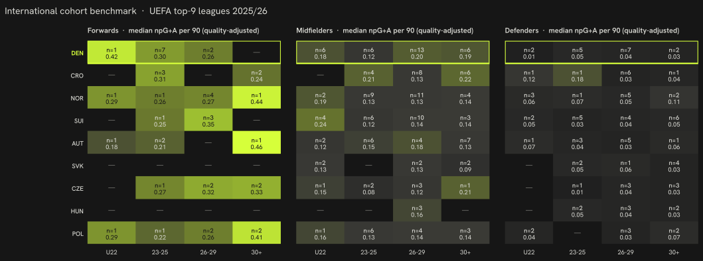
Median non-penalty goals + assists per 90 by country, position group and age cohort, 2025/26; the outlined row is Denmark.
Observations
Per capita: rank 1 of 9 · The largest cohort gap: forwards 30+ · Trajectories 2024/25 → 2025/26: mostly stable
Per capita: rank 1 of 9
75 Danish players on 2025/26 rosters of the nine strongest leagues give 12.58 per million inhabitants, rank 1 of 9. Denmark leads with 12.58, 1.0 times the Danish density. Below Denmark: Croatia, Norway, Switzerland, Austria, Slovakia, Czechia, Hungary, Poland.
The largest cohort gap: forwards 30+
Counting 2025/26 top-9 players by position group and age cohort and comparing the Danish count with the median of the other eight peers, the three largest shortfalls are forwards 30+ — 0 Danish against a peer median of 1; defenders 30+ — 2 Danish against a peer median of 2; defenders U22 — 2 Danish against a peer median of 1. The cohort tables above show the medians behind the counts.
Trajectories 2024/25 → 2025/26: mostly stable
79 Danish-eligible players had at least 900 minutes in both 2024/25 and 2025/26: forwards 13 (4 up, 5 stable, 4 down); midfielders 37 (8 up, 25 stable, 4 down); defenders 29 (1 up, 25 stable, 3 down). A move counts as up or down when league-adjusted goals + assists per 90 changed by more than 0.05; 55 of 79 stayed within that band. These are season-over-season deltas, not projections.
Cluster archetypes
Cluster archetypes (style projection)
Clusters are fitted on the whole corpus of 2025/26 player-seasons and read here through their Danish members, K chosen by silhouette score (Rousseeuw, 1987) with scikit-learn (Pedregosa et al., 2011). The label describes the cluster's median footprint; the count is Danish members of the corpus cluster; names are the Danish members with the most minutes.
Atlas of forwards 2025/26 in both projections: 38 Danish-eligible players in colour against a corpus of 924. Bright rings mark the national-team pool (call-up 2024–25, 7 players).Atlas of midfielders 2025/26 in both projections: 113 Danish-eligible players in colour against a corpus of 2648. Bright rings mark the national-team pool (call-up 2024–25, 13 players).Atlas of defenders 2025/26 in both projections: 67 Danish-eligible players in colour against a corpus of 1947. Bright rings mark the national-team pool (call-up 2024–25, 9 players).
Forwards
High-assist forwards
10 Danish of 156 · NT pool 1 · median born 2003
RHRasmus Højlund
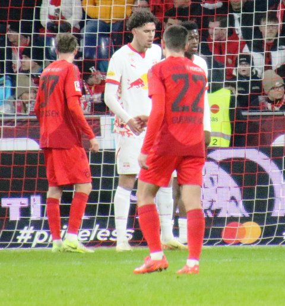
JAJonathan Asp JensenTBTobias BechAEAnosike Ementa
Corpus medians: 0.30 non-penalty goals and 0.14 assists per 90, 76 % of the club's minutes, age 24, 0.14 cards per 90.
Tactical readCreators from the front line — assist rate more than double the forward median on rotation minutes (38 %), scoring at median. Wide forwards and second strikers who feed the box rather than occupy it (Højlund, Jensen, Bech).
Duel-heavy rotation forwards
4 Danish of 141 · NT pool 0 · median born 1995
PMPatrick MortensenMDMikkel Duelund
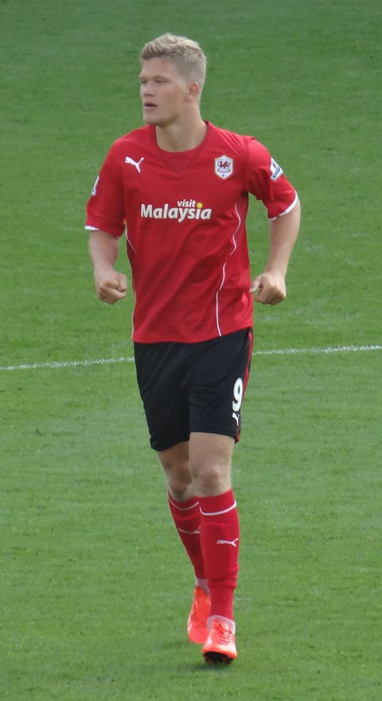
ACAndreas Cornelius
Corpus medians: 0.28 non-penalty goals and 0.08 assists per 90, 46 % of the club's minutes, age 32, 0.17 cards per 90.
Tactical readRotation forwards whose signature is physical engagement — card rate roughly three times the forward median, a third of minutes, output at median. Pressing and duel-heavy roles rather than finishing (Mortensen, Duelund, Cornelius).
High-minutes starting forwards
3 Danish of 122 · NT pool 1 · median born 2000
PCPeter ChristiansenKWKasper Waarst Høgh
Corpus medians: 0.50 non-penalty goals and 0.10 assists per 90, 50 % of the club's minutes, age 25, 0.16 cards per 90.
Tactical readEvery-week starters — three quarters of the season's minutes, assist rate about 1.5 times the forward median, scoring at median. Mostly a top-five-league footprint: the first-choice forward who links play as much as he finishes (Christiansen, Høgh, Osula).
Older forwards with moderate playing time
7 Danish of 109 · NT pool 3 · median born 2003
EHEmil HoltenNNNoah NarteyKDKasper DolbergCRChristian Rasmussen
Corpus medians: 0.30 non-penalty goals and 0.20 assists per 90, 32 % of the club's minutes, age 26, 0.15 cards per 90.
Tactical readExperienced forwards on managed minutes — median age 31, about 40 % of minutes, output at median. The impact or target forward used in rotation (Holten, Nartey, Dolberg).
Young low-minute forwards
3 Danish of 144 · NT pool 0 · median born 2001
ALAlexander Lind
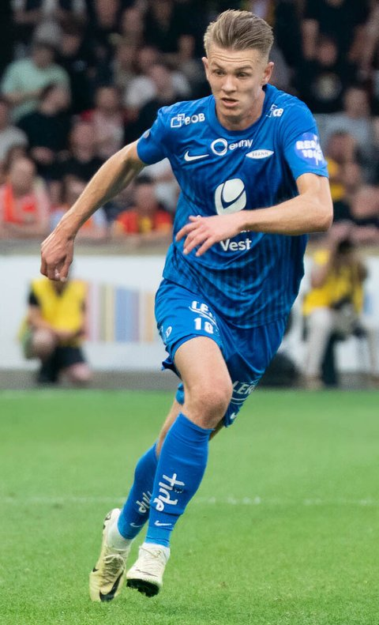
EKEmil Kornvig
Corpus medians: 0.30 non-penalty goals and 0.10 assists per 90, 33 % of the club's minutes, age 24, 0.29 cards per 90.
Tactical readThe development tier and the largest forward cluster — median age 23, under 30 % of minutes, output just below median. Where most of the home pool's young forwards sit (Lind, Kornvig, Kaufmann).
Primary scorers
11 Danish of 252 · NT pool 2 · median born 2003
GIGustav IsaksenHMHenrik MeisterFBFilip BundgaardMBMika Biereth
Corpus medians: 0.27 non-penalty goals and 0.08 assists per 90, 29 % of the club's minutes, age 23, 0.13 cards per 90.
Tactical readPrimary scorers — non-penalty goal rate nearly double the forward median on starter minutes (56 %). The finishing forward of a first-choice line (Isaksen, Meister, Bundgaard).
Midfielders
High-card-rate midfielders
7 Danish of 388 · NT pool 2 · median born 2005
KDKasper DavidsenLPLaurits PedersenJJJustin Janssen
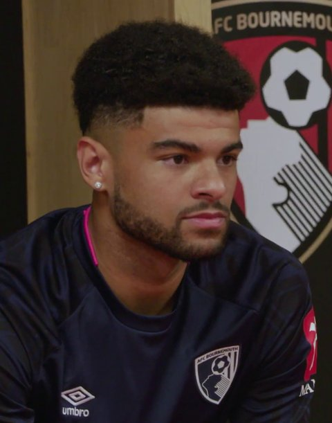
PBPhilip Billing
Corpus medians: 0.08 non-penalty goals and 0.07 assists per 90, 38 % of the club's minutes, age 24, 0.34 cards per 90.
Tactical readBall-winning, duel-heavy midfielders — the card rate (about 2.5 times the midfield median) is the defining feature, production at the floor of the group. The destroyer profile, often in a double pivot (Davidsen, Pedersen, Janssen).
Older rotation midfielders
16 Danish of 290 · NT pool 4 · median born 2001
TJThomas JørgensenNVNicolai VallysCEChristian EriksenEFEmil Frederiksen
Corpus medians: 0.14 non-penalty goals and 0.22 assists per 90, 59 % of the club's minutes, age 24, 0.17 cards per 90.
Tactical readVeteran rotation midfielders — median age 30 on managed minutes (40 %), output at median, card rate above it. Experience kept in the squad rather than on the pitch every week (Jørgensen, Vallys, Eriksen).
Young low-minute midfielders
24 Danish of 320 · NT pool 0 · median born 2000
JEJeppe ErenbjergJTJacob TrenskowCHCarlo HolseEKEmil Kornvig
Corpus medians: 0.25 non-penalty goals and 0.13 assists per 90, 54 % of the club's minutes, age 24, 0.17 cards per 90.
Tactical readDevelopment midfielders — the home pool's largest midfield group: median age 22, under a third of minutes, output at median. The pipeline's waiting room (Erenbjerg, Trenskow, Holse).
Everyday starting midfielders, low scoring output
30 Danish of 626 · NT pool 2 · median born 2004
GMGustav Mortensen
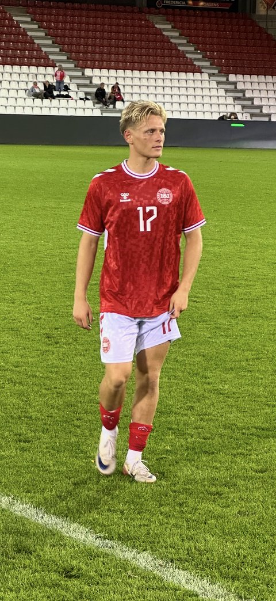
ALAlexander LyngMTMike ThemsenASAdam Sørensen
Corpus medians: 0.08 non-penalty goals and 0.09 assists per 90, 29 % of the club's minutes, age 22, 0.17 cards per 90.
Tactical readThe engine room — nearly 80 % of minutes with median output: holding and box-to-box midfielders whose value is continuity and structure, not numbers (Mortensen, Lyng, Themsen).
High-scoring attacking midfielders
24 Danish of 595 · NT pool 3 · median born 1999
MFMorten FrendrupVFVictor FroholdtKJKasper JørgensenPHPierre Højbjerg
Corpus medians: 0.08 non-penalty goals and 0.09 assists per 90, 79 % of the club's minutes, age 25, 0.18 cards per 90.
Tactical readGoal-scoring attacking midfielders — non-penalty goal rate three times the midfield median on starter minutes (56 %). The number 8/10 who arrives in the box (Frendrup, Froholdt, Jørgensen).
High-minutes creative midfielders
12 Danish of 427 · NT pool 2 · median born 1993
JGJeppe GrønningAOAndreas Oggesen
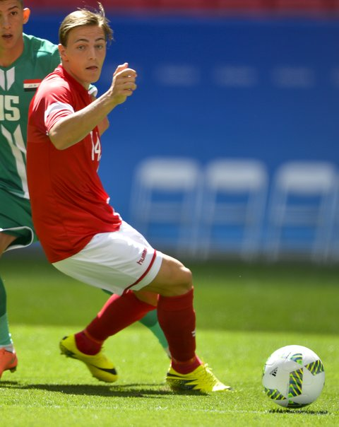
CNCasper NielsenAHAndrew Hjulsager
Corpus medians: 0.08 non-penalty goals and 0.10 assists per 90, 39 % of the club's minutes, age 30, 0.21 cards per 90.
Tactical readStarting playmakers — assist rate three times the midfield median on 62 % of minutes, scoring nearly double. The creative hub of the middle third (Grønning, Oggesen, Nielsen).
Defenders
Everyday starting defenders
7 Danish of 226 · NT pool 1 · median born 2002
JJJakob JessenAPAndreas PoulsenAGAnton GaaeiMMMarcus McCoy
Corpus medians: 0.04 non-penalty goals and 0.12 assists per 90, 64 % of the club's minutes, age 25, 0.20 cards per 90.
Tactical readThe defensive core — 85 % of minutes, output at the DF floor. Availability and continuity are the signal; production is not (Jessen, Poulsen, Gaaei).
High-card-rate defenders
1 Danish of 285 · NT pool 0 · median born 2003
Corpus medians: 0.02 non-penalty goals and 0.02 assists per 90, 47 % of the club's minutes, age 24, 0.36 cards per 90.
Tactical readDuel-heavy defenders — card rate 2.5 times the DF median with rotation minutes (46 %). The physical stopper profile (Kudsk).
Young low-minute defenders
13 Danish of 363 · NT pool 1 · median born 1993
HDHenrik DalsgaardLNLasse NielsenCSChristian Sørensen
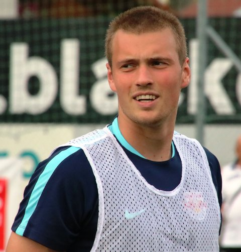
ASAsger Sørensen
Corpus medians: 0.02 non-penalty goals and 0.02 assists per 90, 44 % of the club's minutes, age 31, 0.20 cards per 90.
Tactical readDevelopment defenders — median age 22, about a third of minutes, output at the floor. The tier the 23–25 cohort draws from (Dalsgaard, Nielsen, Sørensen).
Goal-scoring defenders
12 Danish of 217 · NT pool 3 · median born 1997
JMJens Martin GammelbyDHDaniel HøeghPAPeter AnkersenTKThomas Kristensen
Corpus medians: 0.10 non-penalty goals and 0.04 assists per 90, 55 % of the club's minutes, age 25, 0.20 cards per 90.
Tactical readSet-piece threats — defenders scoring at five times the DF median on 60 % of minutes. Aerial presence in both boxes (Gammelby, Høegh, Ankersen).
Older defenders
17 Danish of 425 · NT pool 2 · median born 2004
LHLucas HøgsbergLFLasse FlöNMNoah MarkmannAAAdam Andersen
Corpus medians: 0.02 non-penalty goals and 0.02 assists per 90, 34 % of the club's minutes, age 22, 0.18 cards per 90.
Tactical readExperienced defenders on managed minutes — median age 31, 44 % of minutes, output at the floor. Leadership and cover rather than a starting role (Høgsberg, Flö, Markmann).
High-assist defenders with high playing time
17 Danish of 430 · NT pool 2 · median born 1999
VNVictor NelssonFRFrederik RieperJAJoachim AndersenMMMarcus Mathisen
Corpus medians: 0.03 non-penalty goals and 0.03 assists per 90, 84 % of the club's minutes, age 25, 0.18 cards per 90.
Tactical readAttacking full-backs — assist rate seven times the DF median on starter minutes (65 %). The wide defender whose job ends in the final third (Nelsson, Rieper, Andersen).
Trajectories
Trajectories 2024/25 → 2025/26 (Danish-eligible, ≥ 900 minutes in both seasons)
Season-over-season change in goals + assists per 90, league-adjusted. A move counts as up or down beyond ± 0.05; everything inside that band is stable and not listed.
Forwards — 13 players: 4 up, 5 stable, 4 down
Moving up · G+A / 90 adj.
Player
League
Min 2024/25 / 2025/26
Change
RHRasmus Højlund
ITA-Serie A
2004 / 2750
+0.144
AEAnosike Ementa
BEL-Pro League
1110 / 2615
+0.091
PCPeter Christiansen
NOR-Eliteserien
1592 / 2098
+0.070
CHConrad Harder
GER-Bundesliga
1368 / 932
+0.068
Moving down · G+A / 90 adj.
Player
League
Min 2024/25 / 2025/26
Change
MBMika Biereth
FRA-Ligue 1
2495 / 1074
−0.098
KDKasper Dolberg
NED-Eredivisie
2347 / 1095
−0.062
MRMileta Rajovic
POL-Ekstraklasa
1221 / 2282
−0.061
PMPatrick Mortensen
DEN-Superliga
2705 / 2292
−0.056
Midfielders — 37 players: 8 up, 25 stable, 4 down
Moving up · G+A / 90 adj.
Player
League
Min 2024/25 / 2025/26
Change
PDPatrick Dorgu
ENG-Premier League
2682 / 1449
+0.245
ASAral Şimşir
DEN-Superliga
1392 / 2022
+0.155
VFVictor Froholdt
POR-Primeira Liga
2022 / 2872
+0.127
VAValdemar Andreasen
DEN-Superliga
925 / 1107
+0.096
MHMorten Hjulmand
POR-Primeira Liga
2214 / 2323
+0.070
Moving down · G+A / 90 adj.
Player
League
Min 2024/25 / 2025/26
Change
JSJens Stage
GER-Bundesliga
2204 / 2460
−0.094
MGMathias Greve
DEN-Superliga
2013 / 2481
−0.065
MMMikkel Maigaard
POL-Ekstraklasa
2733 / 1494
−0.052
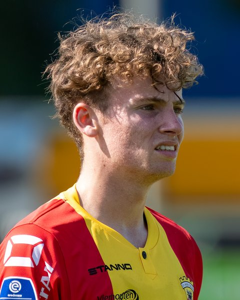
JBJakob Breum
NED-Eredivisie
2059 / 2033
−0.052
Defenders — 29 players: 1 up, 25 stable, 3 down
Moving up · G+A / 90 adj.
Player
League
Min 2024/25 / 2025/26
Change
ABAnders Bærtelsen
NOR-Eliteserien
2430 / 1391
+0.050
Moving down · G+A / 90 adj.
Player
League
Min 2024/25 / 2025/26
Change
CHCasper Højer Nielsen
TUR-Süper Lig
2024 / 2702
−0.098
RKRasmus Kristensen
GER-Bundesliga
2513 / 1538
−0.097
MMMarcus Mathisen
GER-2. Bundesliga
2469 / 2812
−0.067
Why does the train leave?
Why does the train leave?
Four exhibits comparing Denmark with 8 peer countries: youth exposure at home, export route, how exports fare, and who made it.
Exhibit A — youth exposure at home
Share of a domestic league's total minutes played by its own nationals aged 21 or under, 2025/26.
* Σ minutes of players with the league country's nationality and age ≤ 21 at the season's start ÷ Σ minutes of all players in the league, 2025/26. Under-23 shares: DEN 21.2 %, HUN 22.6 %, CRO 22.7 %, NOR 19.8 %, AUT 16.5 %, POL 14.4 %, SUI 16.6 %, CZE 13.5 %. A league without a bar is not covered by FBref.
Exhibit B — export route
For every peer-country player on a 2026/27 top-9 roster: the age at the first top-9 season (full roster, and recent entrants only) and, for recent entrants, the league of the season before it.
Danish exports: 65 players, median export age 22 (recent entrants 25, median 22), 60 % of the recent ones straight from the Superliga*.
Country
n
Recent
Export age (all)
Export age (recent)
Domestic
Stepping stone
Other top-9
Not covered
Censored
DEN Denmark
65
25
22
22
60 %
0 %
0 %
40 %
14 %
NOR Norway
37
17
21
22
53 %
0 %
0 %
47 %
19 %
SUI Switzerland
42
13
23
21
85 %
0 %
0 %
15 %
33 %
AUT Austria
37
13
23
22
54 %
8 %
0 %
38 %
35 %
CZE Czechia
15
7
23
22
0 %
0 %
0 %
100 %
20 %
CRO Croatia
39
10
23
24.5
60 %
10 %
0 %
30 %
31 %
POL Poland
30
13
23
24
38 %
23 %
0 %
38 %
20 %
HUN Hungary
18
11
22
22
91 %
0 %
0 %
9 %
11 %
SVK Slovakia
11
4
24
23
0 %
0 %
0 %
100 %
27 %
* Export age = age at the first season in any headline league, history back to 2020/21; a first appearance already in 2020/21 is censored. Recent entrants: first top-9 season 2025/26 or 2026/27, the only ones whose previous season lies inside the fetched window (2024/25 onwards for peer domestic leagues). Stepping-stone leagues: NED-Eredivisie, BEL-Pro League, POR-Primeira Liga, TUR-Süper Lig, GER-2. Bundesliga. Not covered: no earlier row in the data.
Exhibit C — how the exports fare
Peer-country players at a top-9 club in 2025/26: median share of the club's minutes, and the club's strength within its league.
HUN
Hungary n = 15
72 %
CZE
Czechia n = 26
67 %
SVK
Slovakia n = 17
60 %
AUT
Austria n = 44
59 %
DEN
Denmark n = 75
56 %
NOR
Norway n = 52
56 %
CRO
Croatia n = 47
55 %
POL
Poland n = 45
55 %
SUI
Switzerland n = 54
50 %
* Minutes share = player minutes ÷ (club matches × 90), 2025/26, one row per player-season. Club strength proxy: goals-scored percentile within league — clubs ranked by the goals their own roster scored that season (ClubElo was unreachable at run time). Both are medians over the country's exports; n per country in the bars.
Exhibit D — profile of those who made it
Goals + assists per 90, league-adjusted, in 2025/26 by the tier of the player's own league: domestic, stepping stone, top-9, or another covered league. Danish count and median against the median of the peer countries' values.
Profile table by tier and position group
Tier
Group
DEN n
DEN median
Peer median n
Peer median
domestic league
FW
17
0.16
17
0.12
domestic league
MF
61
0.09
59.5
0.06
domestic league
DF
35
0.04
47
0.02
stepping-stone league
FW
3
0.21
1.5
0.28
stepping-stone league
MF
1
0.10
2
0.08
stepping-stone league
DF
5
0.04
1.5
0.05
top-9 league
FW
10
0.30
5
0.28
top-9 league
MF
31
0.18
16
0.14
top-9 league
DF
16
0.03
8
0.04
other covered league
FW
8
0.13
6
0.16
other covered league
MF
23
0.08
6.5
0.08
other covered league
DF
14
0.02
5.5
0.02
* Tier = the league of the player's own 2025/26 season. Peer median n and peer median are medians across the peer countries present in that tier and group; a tier a country has no player in is absent, not zero.
Exhibit E — where Danish exports go
Of the 218 mapped Danish players, 105 play outside the Superliga.
top-9Victor Nelsson · Morten Frendrup · Joachim Andersen
peer country leagueKasper Jørgensen · Jonathan Asp Jensen · Emil Kornvig
stepping stoneMarcus Mathisen · Kasper Davidsen · Zidan Sertdemir
otherAsger Sørensen · Alexander Munksgaard
* Buckets by the league of the player's own 2025/26 season; a player is counted once per position group, like everywhere else on the page, so one with rows in two groups counts in each; the number in front of each bar is the player count, the median multiplier is the bucket's median league multiplier. Sideways: destination league multiplier <= the domestic league's multiplier.
F · The UEFA Euro 2024 squad by league tier
Where the 26 players named to the UEFA Euro 2024 squad played in 2025/26, next to Switzerland, Austria, Czechia. Tier = the league of the player's most-minutes 2025/26 row.
Minutes, multipliers and age cohorts by country
Country
Median minutes
Median multiplier
U22
23–25
26–29
30+
DEN Denmark
1158.5
0.788
0
2
11
13
SUI Switzerland
1942.5
0.798
0
3
9
14
AUT Austria
1719
0.788
0
7
9
10
CZE Czechia
1802.5
0.459
0
6
11
9
* 14 squad players have no 2025/26 row in the fetched leagues and are counted as unmatched.
Historical analogs
Historical analogs
For each showcase player the finder takes the nearest 5 player-seasons at the same age across the whole corpus of every fetched league — the 9 headline leagues back to 2020/21, the rest from 2024/25 — all nationalities. Distance is computed on three standardised features: npG+A/90 (quality-adjusted), minutes, league multiplier. For every analog the following seasons are shown as they happened. Description, not prediction: the reader sees the spread of paths; the method imposes none.
Target
Conrad Harder
FW · age 21 · GER-Bundesliga 2025/26 · 932 min · 0.42 npG+A/90 quality
Nearest 5 at the same age
5 nearest analogs and what followed
1LázaroBRA
ESP-La Liga 2022/23 · 716 min · 0.45 npG+A/90 · d = 0.44
No later season in the corpus.
2Adam HložekCZE
GER-Bundesliga 2022/23 · 1286 min · 0.42 npG+A/90 · d = 0.47
Followed by:
2023/24
GER-Bundesliga · 459 min · 0.38
2024/25
GER-Bundesliga · 1871 min · 0.43
3Valentin MihailaROU
ITA-Serie A 2020/21 · 698 min · 0.38 npG+A/90 · d = 0.53
Followed by:
2024/25
ITA-Serie A · 1288 min · 0.17
2025/26
TUR-Süper Lig · 1302 min · 0.19
4Giacomo RaspadoriITA
ITA-Serie A 2020/21 · 1232 min · 0.40 npG+A/90 · d = 0.55
Followed by:
2021/22
ITA-Serie A · 2740 min · 0.33
2022/23
ITA-Serie A · 911 min · 0.32
2023/24
ITA-Serie A · 1584 min · 0.36
2024/25
ITA-Serie A · 1103 min · 0.42
5Williot SwedbergSWE
ESP-La Liga 2024/25 · 1348 min · 0.42 npG+A/90 · d = 0.56
Followed by:
2025/26
ESP-La Liga · 1270 min · 0.48
Target
Rasmus Højlund
FW · age 23 · ITA-Serie A 2025/26 · 2750 min · 0.41 npG+A/90 quality
Nearest 5 at the same age
5 nearest analogs and what followed
1Khvicha KvaratskheliaGEO
ITA-Serie A 2023/24 · 2737 min · 0.44 npG+A/90 · d = 0.20
Followed by:
2024/25
ITA-Serie A · 2094 min · 0.40
2025/26
FRA-Ligue 1 · 1479 min · 0.40
2Vinicius JúniorBRA
ESP-La Liga 2022/23 · 2823 min · 0.45 npG+A/90 · d = 0.41
Followed by:
2023/24
ESP-La Liga · 1864 min · 0.61
2024/25
ESP-La Liga · 2253 min · 0.48
2025/26
ESP-La Liga · 2815 min · 0.42
3Joshua ZirkzeeNED
ITA-Serie A 2023/24 · 2759 min · 0.35 npG+A/90 · d = 0.54
Followed by:
2024/25
ENG-Premier League · 1402 min · 0.34
2025/26
ENG-Premier League · 626 min · 0.40
4RodrygoBRA
ESP-La Liga 2023/24 · 2380 min · 0.43 npG+A/90 · d = 0.56
Followed by:
2024/25
ESP-La Liga · 1928 min · 0.33
2025/26
ESP-La Liga · 684 min · 0.27
5Thierno BarryFRA
ESP-La Liga 2024/25 · 2323 min · 0.41 npG+A/90 · d = 0.62
Followed by:
2025/26
ENG-Premier League · 1914 min · 0.38
Target
Anosike Ementa
FW · age 24 · BEL-Pro League 2025/26 · 2615 min · 0.23 npG+A/90 quality
Nearest 5 at the same age
5 nearest analogs and what followed
1Francis AmuzuBEL
BEL-Pro League 2022/23 · 2299 min · 0.22 npG+A/90 · d = 0.43
Followed by:
2023/24
BEL-Pro League · 950 min · 0.22
2024/25
BEL-Pro League · 715 min · 0.27
2Juan SantosBRA
TUR-Süper Lig 2025/26 · 2571 min · 0.25 npG+A/90 · d = 0.46
No later season in the corpus.
3Chukwubuikem IkwuemesiNGA
BEL-Pro League 2024/25 · 2329 min · 0.20 npG+A/90 · d = 0.46
Followed by:
2025/26
BEL-Pro League · 1815 min · 0.15
4Youssef MazizFRA
BEL-Pro League 2021/22 · 2803 min · 0.28 npG+A/90 · d = 0.50
Followed by:
2023/24
BEL-Pro League · 2269 min · 0.26
2024/25
BEL-Pro League · 1881 min · 0.13
2025/26
BEL-Pro League · 2092 min · 0.15
5Armand LaurienteFRA
FRA-Ligue 1 2021/22 · 2477 min · 0.20 npG+A/90 · d = 0.55
Followed by:
2022/23
ITA-Serie A · 2175 min · 0.39
2023/24
ITA-Serie A · 2908 min · 0.22
2025/26
ITA-Serie A · 2592 min · 0.43
Target
Christian Gammelgaard
FW · age 23 · DEN-Superliga 2025/26 · 2330 min · 0.16 npG+A/90 quality
Nearest 5 at the same age
5 nearest analogs and what followed
1Daniel KarlsbakkNOR
NOR-Eliteserien 2025/26 · 2347 min · 0.17 npG+A/90 · d = 0.11
Followed by:
2026/27
NOR-Eliteserien · 1755 min · 0.10
2Tobias BechDEN
DEN-Superliga 2024/25 · 2262 min · 0.15 npG+A/90 · d = 0.12
Followed by:
2025/26
DEN-Superliga · 2668 min · 0.19
2026/27
DEN-Superliga · 467 min · 0.05
3Bohdan ViunnykUKR
POL-Ekstraklasa 2024/25 · 2329 min · 0.16 npG+A/90 · d = 0.33
Followed by:
2025/26
POL-Ekstraklasa · 966 min · 0.11
4Kristian ArnstadNOR
DEN-Superliga 2025/26 · 2611 min · 0.13 npG+A/90 · d = 0.46
Followed by:
2026/27
DEN-Superliga · 657 min · 0.04
5Andrin HunzikerSUI
SUI-Super League 2025/26 · 2536 min · 0.15 npG+A/90 · d = 0.49
No later season in the corpus.
Target
Patrick Dorgu
MF · age 22 · ENG-Premier League 2025/26 · 1449 min · 0.39 npG+A/90 quality
Nearest 5 at the same age
5 nearest analogs and what followed
1Noni MaduekeENG
ENG-Premier League 2023/24 · 1053 min · 0.37 npG+A/90 · d = 0.54
Followed by:
2024/25
ENG-Premier League · 2033 min · 0.38
2025/26
ENG-Premier League · 1211 min · 0.33
2Kai HavertzGER
ENG-Premier League 2020/21 · 1520 min · 0.32 npG+A/90 · d = 0.62
Followed by:
2021/22
ENG-Premier League · 1809 min · 0.50
2022/23
ENG-Premier League · 2569 min · 0.30
2023/24
ENG-Premier League · 2634 min · 0.54
2024/25
ENG-Premier League · 1875 min · 0.54
3Crysencio SummervilleNED
ENG-Premier League 2022/23 · 1426 min · 0.31 npG+A/90 · d = 0.67
Followed by:
2024/25
ENG-Premier League · 786 min · 0.23
2025/26
ENG-Premier League · 2470 min · 0.25
4Jeremy DokuBEL
ENG-Premier League 2023/24 · 1595 min · 0.47 npG+A/90 · d = 0.72
Followed by:
2024/25
ENG-Premier League · 1516 min · 0.42
2025/26
ENG-Premier League · 1784 min · 0.41
5Emile Smith RoweENG
ENG-Premier League 2021/22 · 1921 min · 0.44 npG+A/90 · d = 0.75
Followed by:
2024/25
ENG-Premier League · 2043 min · 0.34
2025/26
ENG-Premier League · 1923 min · 0.17
Target
Oscar Højlund
MF · age 21 · GER-Bundesliga 2025/26 · 1089 min · 0.15 npG+A/90 quality
Nearest 5 at the same age
5 nearest analogs and what followed
1GaviESP
ESP-La Liga 2024/25 · 1085 min · 0.15 npG+A/90 · d = 0.10
Followed by:
2025/26
ESP-La Liga · 573 min · 0.14
2Yan CoutoBRA
ESP-La Liga 2022/23 · 1158 min · 0.17 npG+A/90 · d = 0.19
Followed by:
2023/24
ESP-La Liga · 2245 min · 0.25
2024/25
GER-Bundesliga · 895 min · 0.03
2025/26
GER-Bundesliga · 997 min · 0.23
3Romano SchmidAUT
GER-Bundesliga 2020/21 · 1177 min · 0.17 npG+A/90 · d = 0.22
Followed by:
2022/23
GER-Bundesliga · 1520 min · 0.19
2023/24
GER-Bundesliga · 2601 min · 0.25
2024/25
GER-Bundesliga · 2834 min · 0.19
2025/26
GER-Bundesliga · 2982 min · 0.20
4Arsen ZakharyanRUS
ESP-La Liga 2023/24 · 1228 min · 0.16 npG+A/90 · d = 0.22
Followed by:
2025/26
ESP-La Liga · 458 min · 0.10
5Nico RibaudoESP
ESP-La Liga 2021/22 · 1116 min · 0.12 npG+A/90 · d = 0.25
Followed by:
2022/23
ESP-La Liga · 1248 min · 0.16
Target
Christian Eriksen
MF · age 34 · GER-Bundesliga 2025/26 · 2410 min · 0.24 npG+A/90 quality
Nearest 5 at the same age
5 nearest analogs and what followed
1Pascal GroßGER
GER-Bundesliga 2024/25 · 2327 min · 0.25 npG+A/90 · d = 0.12
Followed by:
2025/26
ENG-Premier League · 2249 min · 0.20
2Christopher TrimmelAUT
GER-Bundesliga 2020/21 · 2572 min · 0.25 npG+A/90 · d = 0.22
Followed by:
2021/22
GER-Bundesliga · 1990 min · 0.10
2022/23
GER-Bundesliga · 1811 min · 0.22
2023/24
GER-Bundesliga · 1646 min · 0.12
2024/25
GER-Bundesliga · 1740 min · 0.14
3Ivan RakitićCRO
ESP-La Liga 2021/22 · 2182 min · 0.25 npG+A/90 · d = 0.32
Followed by:
2022/23
ESP-La Liga · 1788 min · 0.13
2023/24
ESP-La Liga · 1425 min · 0.15
2024/25
CRO-HNL · 3055 min · 0.05
4Toni KroosGER
ESP-La Liga 2023/24 · 2124 min · 0.26 npG+A/90 · d = 0.41
No later season in the corpus.
5Álvaro GarcíaESP
ESP-La Liga 2025/26 · 2101 min · 0.26 npG+A/90 · d = 0.46
No later season in the corpus.
Target
Thomas Delaney
MF · age 35 · DEN-Superliga 2025/26 · 1009 min · 0.10 npG+A/90 quality
Nearest 5 at the same age
5 nearest analogs and what followed
1Jan KopicCZE
CZE-First League 2024/25 · 1023 min · 0.14 npG+A/90 · d = 0.45
No later season in the corpus.
2Paweł OlkowskiPOL
POL-Ekstraklasa 2024/25 · 744 min · 0.09 npG+A/90 · d = 0.48
Followed by:
2025/26
POL-Ekstraklasa · 1491 min · 0.03
3Florent MolletFRA
SUI-Super League 2025/26 · 1183 min · 0.07 npG+A/90 · d = 0.50
Followed by:
2026/27
SUI-Super League · 511 min · 0.11
4Jan NavrátilCZE
CZE-First League 2024/25 · 1278 min · 0.07 npG+A/90 · d = 0.54
Followed by:
2025/26
CZE-First League · 619 min · 0.07
5Patrik HrošovskýSVK
CZE-First League 2026/27 · 686 min · 0.11 npG+A/90 · d = 0.55
No later season in the corpus.
Target
Morten Frendrup
MF · age 25 · ITA-Serie A 2025/26 · 3081 min · 0.05 npG+A/90 quality
Nearest 5 at the same age
5 nearest analogs and what followed
1Kaishū SanoJPN
GER-Bundesliga 2024/25 · 3043 min · 0.04 npG+A/90 · d = 0.35
Followed by:
2025/26
GER-Bundesliga · 3059 min · 0.09
2Maxime LopezFRA
ITA-Serie A 2021/22 · 2938 min · 0.09 npG+A/90 · d = 0.41
Followed by:
2022/23
ITA-Serie A · 2296 min · 0.04
2023/24
ITA-Serie A · 800 min · 0.08
2025/26
FRA-Ligue 1 · 1960 min · 0.10
3Philipp TreuGER
GER-Bundesliga 2024/25 · 2881 min · 0.08 npG+A/90 · d = 0.49
Followed by:
2025/26
GER-Bundesliga · 2186 min · 0.09
4Antonio BlancoESP
ESP-La Liga 2024/25 · 2727 min · 0.06 npG+A/90 · d = 0.53
Followed by:
2025/26
ESP-La Liga · 3110 min · 0.12
5Domagoj BradarićCRO
ITA-Serie A 2023/24 · 2749 min · 0.10 npG+A/90 · d = 0.60
Followed by:
2024/25
ITA-Serie A · 1933 min · 0.07
2025/26
ITA-Serie A · 1966 min · 0.07
Target
Thomas Jørgensen
MF · age 21 · DEN-Superliga 2025/26 · 2579 min · 0.13 npG+A/90 quality
Nearest 5 at the same age
5 nearest analogs and what followed
1Jens Hjertø-DahlNOR
NOR-Eliteserien 2025/26 · 2372 min · 0.11 npG+A/90 · d = 0.33
Followed by:
2026/27
NOR-Eliteserien · 1197 min · 0.18
2Mateusz KowalczykPOL
POL-Ekstraklasa 2024/25 · 2465 min · 0.12 npG+A/90 · d = 0.38
Followed by:
2025/26
POL-Ekstraklasa · 2188 min · 0.07
3Tomasz PieńkoPOL
POL-Ekstraklasa 2024/25 · 2487 min · 0.10 npG+A/90 · d = 0.41
Followed by:
2025/26
POL-Ekstraklasa · 1384 min · 0.11
4Antoni KozubalPOL
POL-Ekstraklasa 2024/25 · 2721 min · 0.09 npG+A/90 · d = 0.53
Followed by:
2025/26
POL-Ekstraklasa · 2532 min · 0.05
5Lauren UlrichGER
GER-2. Bundesliga 2025/26 · 2671 min · 0.09 npG+A/90 · d = 0.59
No later season in the corpus.
Target
Anton Gaaei
DF · age 24 · NED-Eredivisie 2025/26 · 1793 min · 0.10 npG+A/90 quality
Nearest 5 at the same age
5 nearest analogs and what followed
1Jasper DahlhausNED
NED-Eredivisie 2024/25 · 1761 min · 0.08 npG+A/90 · d = 0.14
Followed by:
2025/26
NED-Eredivisie · 2115 min · 0.03
2Loide AugustoANG
TUR-Süper Lig 2023/24 · 1788 min · 0.09 npG+A/90 · d = 0.15
Followed by:
2024/25
TUR-Süper Lig · 1481 min · 0.15
2025/26
TUR-Süper Lig · 1160 min · 0.14
3Calvin BasseyNGA
NED-Eredivisie 2022/23 · 1807 min · 0.08 npG+A/90 · d = 0.15
Followed by:
2023/24
ENG-Premier League · 2303 min · 0.05
2024/25
ENG-Premier League · 3074 min · 0.04
2025/26
ENG-Premier League · 2534 min · 0.04
4Ryan FlamingoNED
NED-Eredivisie 2025/26 · 1676 min · 0.09 npG+A/90 · d = 0.19
No later season in the corpus.
5Lisandro MartínezARG
NED-Eredivisie 2021/22 · 1906 min · 0.08 npG+A/90 · d = 0.23
Followed by:
2022/23
ENG-Premier League · 2114 min · 0.03
2023/24
ENG-Premier League · 646 min · 0.11
2024/25
ENG-Premier League · 1751 min · 0.12
2025/26
ENG-Premier League · 1233 min · 0.03
Target
Sebastian Otoa
DF · age 22 · ITA-Serie A 2025/26 · 829 min · 0.01 npG+A/90 quality
Nearest 5 at the same age
5 nearest analogs and what followed
1Alessandro BuongiornoITA
ITA-Serie A 2020/21 · 858 min · 0.01 npG+A/90 · d = 0.04
Followed by:
2021/22
ITA-Serie A · 1181 min · 0.05
2022/23
ITA-Serie A · 2721 min · 0.07
2023/24
ITA-Serie A · 2527 min · 0.08
2024/25
ITA-Serie A · 1924 min · 0.03
2Bosko SutaloCRO
ITA-Serie A 2021/22 · 920 min · 0.01 npG+A/90 · d = 0.12
Followed by:
2024/25
BEL-Pro League · 1932 min · 0.02
2025/26
POL-Ekstraklasa · 2193 min · 0.01
3Adam ObertSVK
ITA-Serie A 2023/24 · 941 min · 0.01 npG+A/90 · d = 0.15
Followed by:
2024/25
ITA-Serie A · 1077 min · 0.08
2025/26
ITA-Serie A · 2771 min · 0.07
4Caleb OkoliITA
ITA-Serie A 2022/23 · 960 min · 0.01 npG+A/90 · d = 0.17
Followed by:
2023/24
ITA-Serie A · 2914 min · 0.03
2024/25
ENG-Premier League · 1125 min · 0.07
5Marash KumbullaALB
ITA-Serie A 2021/22 · 1025 min · 0.01 npG+A/90 · d = 0.26
Followed by:
2024/25
ESP-La Liga · 2972 min · 0.06
Target
Joachim Andersen
DF · age 30 · ENG-Premier League 2025/26 · 2875 min · 0.04 npG+A/90 quality
Nearest 5 at the same age
5 nearest analogs and what followed
1Joël VeltmanNED
ENG-Premier League 2021/22 · 2874 min · 0.06 npG+A/90 · d = 0.21
Followed by:
2022/23
ENG-Premier League · 2188 min · 0.06
2023/24
ENG-Premier League · 1588 min · 0.11
2024/25
ENG-Premier League · 1697 min · 0.02
2025/26
ENG-Premier League · 1058 min · 0.07
2Omar AlderetePAR
ENG-Premier League 2025/26 · 2798 min · 0.06 npG+A/90 · d = 0.24
No later season in the corpus.
3Nélson SemedoPOR
ENG-Premier League 2022/23 · 2632 min · 0.03 npG+A/90 · d = 0.33
Followed by:
2023/24
ENG-Premier League · 3084 min · 0.07
2024/25
ENG-Premier League · 2886 min · 0.15
2025/26
TUR-Süper Lig · 1933 min · 0.07
4Ethan PinnockJAM
ENG-Premier League 2022/23 · 2700 min · 0.08 npG+A/90 · d = 0.41
Followed by:
2023/24
ENG-Premier League · 2521 min · 0.08
2024/25
ENG-Premier League · 1913 min · 0.08
5Tyrone MingsENG
ENG-Premier League 2022/23 · 3150 min · 0.07 npG+A/90 · d = 0.45
Followed by:
2024/25
ENG-Premier League · 1120 min · 0.03
2025/26
ENG-Premier League · 1324 min · 0.02
Target
Mathias Jørgensen
DF · age 36 · DEN-Superliga 2025/26 · 988 min · 0.03 npG+A/90 quality
Nearest 5 at the same age
5 nearest analogs and what followed
1Haitam AleesamiNOR
NOR-Eliteserien 2026/27 · 1041 min · 0.03 npG+A/90 · d = 0.09
No later season in the corpus.
2Kian HansenDEN
DEN-Superliga 2024/25 · 1122 min · 0.02 npG+A/90 · d = 0.22
No later season in the corpus.
3Brian HamalainenDEN
DEN-Superliga 2024/25 · 801 min · 0.02 npG+A/90 · d = 0.27
No later season in the corpus.
4Petr ReinberkCZE
CZE-First League 2024/25 · 1006 min · 0.04 npG+A/90 · d = 0.31
Followed by:
2025/26
CZE-First League · 1102 min · 0.05
5Amin NouriNOR
NOR-Eliteserien 2025/26 · 1092 min · 0.07 npG+A/90 · d = 0.32
No later season in the corpus.
Target
Victor Nelsson
DF · age 28 · ITA-Serie A 2025/26 · 3315 min · 0.01 npG+A/90 quality
Nearest 5 at the same age
5 nearest analogs and what followed
1Federico BaschirottoITA
ITA-Serie A 2023/24 · 3294 min · 0.02 npG+A/90 · d = 0.17
Followed by:
2024/25
ITA-Serie A · 3420 min · 0.04
2025/26
ITA-Serie A · 2540 min · 0.05
2Johan VásquezMEX
ITA-Serie A 2025/26 · 3215 min · 0.02 npG+A/90 · d = 0.21
No later season in the corpus.
3Sebastiano LupertoITA
ITA-Serie A 2023/24 · 3406 min · 0.04 npG+A/90 · d = 0.34
Followed by:
2024/25
ITA-Serie A · 3240 min · 0.07
2025/26
ITA-Serie A · 3013 min · 0.04
4Carlos NevaESP
ESP-La Liga 2023/24 · 3146 min · 0.05 npG+A/90 · d = 0.50
No later season in the corpus.
5Javi GalánESP
ESP-La Liga 2021/22 · 3298 min · 0.06 npG+A/90 · d = 0.52
Followed by:
2022/23
ESP-La Liga · 3160 min · 0.06
2023/24
ESP-La Liga · 1075 min · 0.06
2024/25
ESP-La Liga · 1784 min · 0.09
2025/26
ESP-La Liga · 1672 min · 0.05
Target
Jakob Jessen
DF · age 22 · DEN-Superliga 2025/26 · 2507 min · 0.07 npG+A/90 quality
Nearest 5 at the same age
5 nearest analogs and what followed
1Igor DrapinskiPOL
POL-Ekstraklasa 2025/26 · 2421 min · 0.07 npG+A/90 · d = 0.35
No later season in the corpus.
2Fredrik SjøvoldNOR
NOR-Eliteserien 2024/25 · 2268 min · 0.05 npG+A/90 · d = 0.35
Followed by:
2025/26
NOR-Eliteserien · 2594 min · 0.10
2026/27
NOR-Eliteserien · 1646 min · 0.07
3Jaouen HadjamALG
SUI-Super League 2024/25 · 2503 min · 0.04 npG+A/90 · d = 0.43
Followed by:
2025/26
SUI-Super League · 1235 min · 0.09
4Karel SpáčilCZE
CZE-First League 2024/25 · 2745 min · 0.06 npG+A/90 · d = 0.44
Followed by:
2025/26
CZE-First League · 1349 min · 0.04
5Lucas HeyDEN
DEN-Superliga 2024/25 · 2875 min · 0.04 npG+A/90 · d = 0.53
Followed by:
2025/26
BEL-Pro League · 2516 min · 0.01
* Corpus: player-seasons with at least 450 minutes in any fetched league — headline leagues 2020/21 → 2026/27, the other leagues 2024/25 → 2026/27; the target's own seasons are excluded. A path that ends early means the player left the covered leagues, not that the career ended.
Player index
Player index
Every Danish-eligible player with a complete 2025/26 season in a covered league — 218 players — with the numbers behind the atlases. Names with a card link to it.
* 2025/26 season, at least 450 minutes; the club is the one with the most minutes that season. NT = national-team call-up 2024–25.
How it is built, validated and where it stops
Data sources
FBref (via soccerdata): player season tables (standard, playing time) for the 9 headline leagues, the Superliga, the peer domestic leagues and the German second tier; the country page "Players from Denmark" for pool discovery; the nationality column for peer counts
Wikipedia: national-team squad tables (UEFA Euro 2024, UEFA European Under-21 Championship 2025) for the call-up flag
Wikidata / Wikimedia Commons: player portraits (P18) matched on name, citizenship and date of birth; credits in the footer
UEFA association coefficients (via Wikipedia) as the league-strength source, ClubElo being unreachable at run time
Eurostat: population estimates, 2024
From raw tables to a feature vector
One 2025/26 player-season, traced from its raw FBref row to the five-number vector the rest of this chapter builds on: Victor Nelsson, the Danish player with the most 2025/26 minutes among those who cleared the inclusion floor.
Victor Nelsson: raw row and feature row
Raw FBref row, 2025/26
Column
Value
league
ITA-Serie A
season
2025-2026
team
Hellas Verona
player
Victor Nelsson
nation
DEN
pos
DF
born
1998
age
26
mp
38
min
3315
gls
0
ast
0
pk
0
crdy
4
crdr
0
Feature row after the pipeline
Feature
Raw
Shrunk
Quality-adjusted
Z-score
npg_p90
0.000
0.006
0.005
−0.71
ast_p90
0.000
0.000
0.000
−0.80
min_share
0.969
0.969
0.969
1.61
age
26.000
26.000
26.000
0.03
cards_p90
0.109
0.127
0.127
−0.98
Six wrangling checks turn the raw rows above into the pool used everywhere else in this report, recomputed on every run:
Women's entries filtered: 0 entries.
Namesakes in the pool: 18 players.
Pool players without season tables: 517 players.
Split-season rows collapsed: 441 rows.
Unmatched call-up names: 68 names.
Missing birth years: 0 rows.
Unjoined goalkeeper rows: 12 rows.
Superliga rows without a nationality: 14 rows.
The full log, with the recorded pipeline incidents, is in the data-quality log below.
Every position group shares the same five-number vector (spec §5): a raw column becomes a per-90 rate, shrunk toward its league-season median (Efron and Morris, 1975), then multiplied by the league quality projection.
npg_p90 — non-penalty goals per 90 minutes: penalties are shot quality, not open-play production, and inflate a taker's raw goal count for reasons that have nothing to do with how the player creates chances
ast_p90 — assists per 90 minutes: the direct creative complement to non-penalty goals, on the same basic table for every league in the corpus
min_share — minutes played ÷ (club matches × 90): the coach's own read of the player, sturdier than counting appearances (see below)
age — age at the season's start (start year − birth year): median production still shifts by age band in this corpus (see below), so it stays as its own axis rather than being folded into anything else
cards_p90 — yellow + 2 × red cards per 90 minutes: a discipline signal folded into one rate because red cards alone are too sparse a signal on their own (see below)
Five candidates considered for the 2025/26 vector and what the data said about each, corpus-wide (every fetched nationality, the same population the rest of this chapter describes):
Candidate
Statistic
Value
Decision
gls_p90
Correlation with npg_p90
0.973
Replaced by npg_p90
mp
Correlation with minutes played
0.844
Replaced by minutes share
crdr_p90
Share of player-seasons with zero red cards
0.854
Folded into cards
age
Spread of median goals + assists per 90 across age bands (max − min band)
0.028
Kept
born
Share of player-seasons missing a birth year
0.003
Kept — required for the player key
Despite the high correlation, goals and non-penalty goals diverge for the players who take penalties: Iuri Medeiros (HUN-NB I, 100 %); Yanis Zouaoui (FRA-Ligue 1, 100 %); Domagoj Antolić (CRO-HNL, 100 %). Appearances (mp) correlate strongly with minutes but not perfectly — a substitute cameo counts the same as 90 minutes started, which is why minutes share, not appearances, measures playing time here. Median goals + assists per 90 by age band runs from 0.147 (30+) – 0.175 (23-25).
The picture behind league adjustment: the same raw rate reads very differently depending on the league it was earned in.
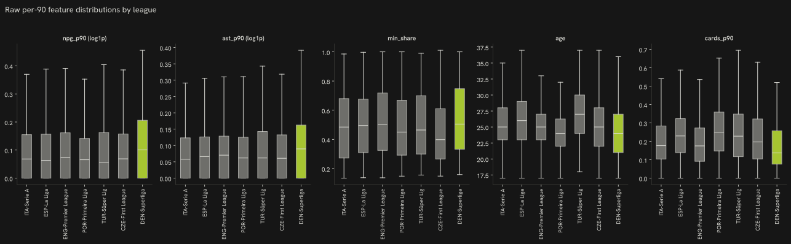
What shrinkage does to a low-minute player: at the inclusion floor the league median still carries most of the weight; Victor Jensen's rate moves the most of any Danish-eligible player this season.
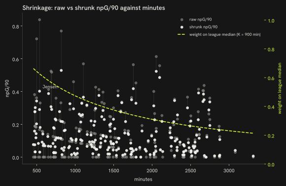
League multipliers (quality projection)
npG/90_quality = npG/90_shrunk × m_league
League
Multiplier
ENG-Premier League
1.000
ITA-Serie A
0.856
ESP-La Liga
0.807
GER-Bundesliga
0.788
FRA-Ligue 1
0.666
POR-Primeira Liga
0.630
BEL-Pro League
0.573
NED-Eredivisie
0.510
TUR-Süper Lig
0.484
GER-2. Bundesliga
0.473
POL-Ekstraklasa
0.438
CZE-First League
0.434
NOR-Eliteserien
0.374
DEN-Superliga
0.371
SUI-Super League
0.293
AUT-Bundesliga
0.268
HUN-NB I
0.265
CRO-HNL
0.249
SVK-Super Liga
0.217
Method: uefa_coefficient. ClubElo unavailable at run time (HTTP error); fell back to Wikipedia's UEFA men's association coefficient, current 5-year ranking (2022–23–2026–27 seasons). tier-1 multiplier = coef[country] / max(coef); tier-2 multiplier = 0.6 * tier-1 multiplier of the same country (stated assumption, not derived from data). Strongest tier-1 country = 1.00. The sensitivity analysis below shows the ranking's robustness to ±20 % on any one multiplier.
League strength: two estimates
A season in one league is not automatically worth the same as a season in another: goals and assists come easier in some competitions than others. This section works out an exchange rate between leagues by watching the same players before and after they change league, the way a manager judges a new signing by how his output changes at the new club.
Full method, figures and diagnostics
How much is a Superliga season worth in Premier League terms? The UEFA multiplier above answers that from countries' continental results; this model answers the same question from the players who actually changed leagues.
Movers — 2125 players observed in at least two leagues across 8108 qualifying player-seasons — anchor the model, since only a player's own before/after change of league separates their level from the league's scoring environment. A hierarchical Poisson model of non-penalty goals plus assists per 90 (Gelman et al., 2013) fits a league effect and a player effect together, sampled with NUTS (Hoffman and Gelman, 2014) in PyMC (Abril-Pla et al., 2023) and diagnosed with ArviZ (Kumar et al., 2019). Partial pooling keeps the league effects regularised while leaving player effects close to unpooled, the same within-subject logic behind plus-minus and RAPM ratings elsewhere in team sports (Kharrat, McHale and Peña, 2020; Hvattum, 2019).
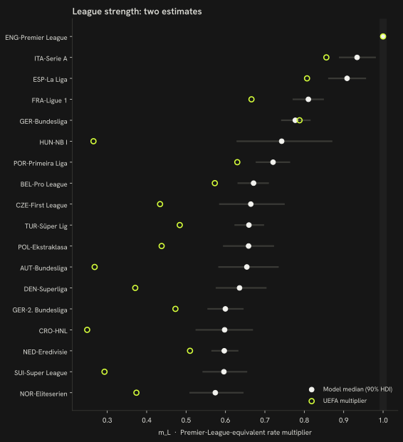
In these terms, a Superliga season converts to 0.64 of a Premier League one (90 % HDI 0.58–0.70).
League
m_L (median)
90 % HDI
Transitions
UEFA
ENG-Premier League
1.000
1.000–1.000
589
1.000
ITA-Serie A
0.934
0.890–0.980
569
0.856
ESP-La Liga
0.909
0.863–0.955
435
0.807
FRA-Ligue 1
0.810
0.772–0.848
672
0.666
GER-Bundesliga
0.777
0.743–0.814
588
0.788
HUN-NB I
0.743
0.630–0.869
35
0.265
POR-Primeira Liga
0.721
0.679–0.762
352
0.630
BEL-Pro League
0.671
0.633–0.708
474
0.573
CZE-First League
0.664
0.586–0.748
65
0.434
TUR-Süper Lig
0.659
0.625–0.696
472
0.484
POL-Ekstraklasa
0.659
0.596–0.721
135
0.438
AUT-Bundesliga
0.654
0.584–0.733
80
0.268
DEN-Superliga
0.636
0.577–0.702
117
0.371
GER-2. Bundesliga
0.600
0.556–0.644
229
0.473
CRO-HNL
0.598
0.526–0.668
64
0.249
NED-Eredivisie
0.597
0.566–0.631
386
0.510
SUI-Super League
0.596
0.544–0.653
128
0.293
NOR-Eliteserien
0.574
0.510–0.644
66
0.374
Refit on seasons before 2025/26, the model predicts each mover's first 2025/26 row after a league change — 865 such moves — against two baselines: the same rate as before, and that rate scaled by the ratio of UEFA multipliers. This is the same population CIES Football Observatory's expatriate-player reports track (Poli, Ravenel and Besson, 2024).
Method
Log predictive density
MAE (rate)
Same rate as before
−2.625
0.137
Rate × UEFA ratio
−2.728
0.151
Model
−2.173
0.128
Against 18 leagues in common, the model's medians and the UEFA multipliers correlate at Spearman's rho = 0.72.
HUN-NB I: model rank 6 vs UEFA rank 17 (m_L 0.74 vs multiplier 0.27).
NED-Eredivisie: model rank 16 vs UEFA rank 8 (m_L 0.60 vs multiplier 0.51).
NOR-Eliteserien: model rank 18 vs UEFA rank 13 (m_L 0.57 vs multiplier 0.37).
R-hat ≤ 1.005, minimum bulk ESS 1220, 0 divergent transitions across 8108 player-seasons from 2125 movers; fit in 223 s.
Posterior predictive check
Observed vs. replicated non-penalty goals plus assists per player-season (Vehtari, Gelman and Gabry, 2017): 15 % vs 14 % share of zeros, mean 4.45 vs 4.45, 90th percentile 11.00 vs 10.86.
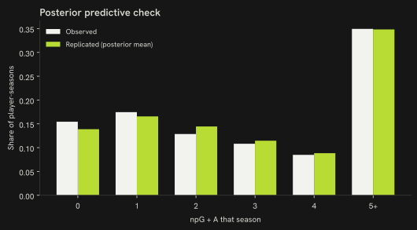
What the movers do not show: they are not a random sample — players tend to move up when they are good and down when they are older — so the within-player contrast describes the league difference for the kind of player who moves, and the age term absorbs only the part of that selection that is age. The interval is the model's uncertainty, not the selection's.
The report's rankings keep the UEFA-coefficient multiplier throughout; the model above is shown alongside it as a check on that multiplier's own assumption — that continental results track player-level strength — not as a replacement for it.
Three models, one task, five seasons
Here we ask a simple question of five different methods: given a player's numbers this season, how well can each one guess his numbers next season. Each method is tested only on seasons it has not already seen, the way a scout's judgement only really counts for what he predicts before a season starts, not after it has finished.
Full method, figures and diagnostics
What does a player's season tell us about the next one, given where he plays, how old he is and — for exports — at what age he moved? In model terms: predict a player's league-adjusted production next season (non-penalty goals plus assists per 90, quality-adjusted) from this season's numbers, for every player-season pair with at least 450 minutes in both seasons, every nationality in the corpus.
Evaluated by rolling-origin cross-validation (Hyndman and Athanasopoulos, 2021): for each of 5 target seasons in turn, every model trains only on pairs whose target season came earlier and is tested on that season's pairs — the same discipline a forecaster uses when the future is genuinely unknown at fit time, and what makes the per-season table below a real "performance over time" read rather than one blended number. Two baselines — persistence (next season = this season) and shrinkage to the league mean — sit alongside three fitted models sharing the same eight features: a hierarchical Bayesian regression (target ~ Normal(μ, σ), partial pooling on league and player, NUTS, 2 chains × 400 draws per origin (Gelman et al., 2013)), a gradient-boosted regressor and a small multilayer perceptron (scikit-learn (Pedregosa et al., 2011), hidden layers 64/32 — a small MLP, not an embedding model: PyTorch is not part of this pipeline). The Bayesian model's training rows are subsampled to at most 2500 per origin to keep five origins' worth of fits inside the runtime budget; the other four models train on the full split. The target is adjusted with the multiplier of the league the player is in next season; the features only know this season's league, so a move is a change the models cannot see coming — a limitation shared by all five.
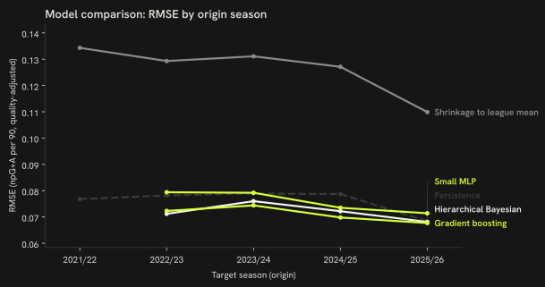
Model
2021/22
2022/23
2023/24
2024/25
2025/26
Pooled
Persistence
0.0768 (0.054)
0.0782 (0.056)
0.0789 (0.056)
0.0787 (0.057)
0.0684 (0.048)
0.0751 (0.053)
Shrinkage to league mean
0.1343 (0.104)
0.1293 (0.100)
0.1311 (0.098)
0.1271 (0.098)
0.1099 (0.089)
0.1225 (0.095)
Hierarchical Bayesian
—
0.0712 (0.052)
0.0760 (0.054)
0.0722 (0.053)
0.0681 (0.052)
0.0714 (0.053)
Gradient boosting
—
0.0723 (0.051)
0.0744 (0.051)
0.0698 (0.051)
0.0677 (0.051)
0.0706 (0.051)
Small MLP
—
0.0794 (0.059)
0.0792 (0.057)
0.0735 (0.054)
0.0714 (0.054)
0.0753 (0.056)
Each cell: RMSE (MAE), in league-adjusted npG+A per 90. The first origin's training set is empty by construction — the corpus's earliest feature season leaves no earlier target season to train on — so only the two baselines are reported there.
The Bayesian model's 90 % predictive interval covered the observed value 92 % of the time, pooled across the 4 origins it was fit for (2022/23: 91 %, 2023/24: 90 %, 2024/25: 91 %, 2025/26: 93 %).
By pooled RMSE, Gradient boosting wins (0.071 vs 0.075 for persistence, 6 % lower).
The clearest season-to-season move in the winner's own RMSE is between 2023/24 and 2024/25 (0.005) — the kind of drift this rolling-origin table exists to surface.
Dating the break and one forecast
This section finds the two seasons when the count of home-nation players in Europe's five biggest leagues changed level for good — the rise and the fall — and puts a probability on each being the true turning point rather than an ordinary dip. It also makes one forecast for next season, as a demonstration of the method, not a prediction about any player.
Full method, figures and diagnostics
The series is modelled as a local level in state space (Durbin and Koopman, 2012): the log of the season count follows a Gaussian random walk (σ ~ HalfNormal(0.2)), plus two ordered step changes δ₁, δ₂ in the level at unknown seasons τ₁ < τ₂ — on the series back to 1990/91 one step is misspecified, since the count rises through the 1990s and falls after the 2000s plateau, and a single step lands on whichever change buys more likelihood. NUTS only samples continuous parameters, so the τ pair is not sampled directly — every ordered pair of candidate seasons at least 3 seasons from either end and from each other is marginalised out of the model with a single log-sum-exp potential, and each break's own posterior is recovered afterwards from the continuous draws, the standard move for a marginalised discrete parameter (Gelman et al., 2013); the changepoint idea itself is due to (Adams and MacKay, 2007), applied here to a batch, two-break setting. The report's "break" is the step that lowers the level; the other is the rise. A rolling-origin backtest (Hyndman and Athanasopoulos, 2021) refits the same local level without the step at each of 15 origins, forecasting one season ahead and scoring against the naive "same as last season" baseline — the honest forecaster's read, since no real origin knows in advance which side of a break it sits on. The one forecast below, from the same change-point-free model fitted on the full series, is a demonstration of the method on a count of players, not a statement about any player.
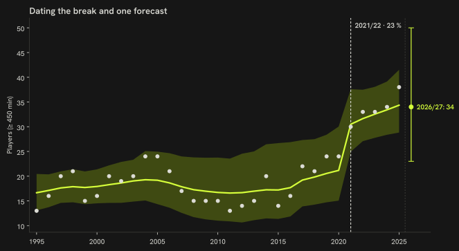
How to read it: the acid line is the observed count, the pale band the model’s fitted level; the dashed rules are the most probable rise and fall seasons with their posterior probabilities; past the divider on the right, the one-season forecast with its 90 % interval.
For Denmark, the model dates the break to 2021/22 (23 % posterior probability), a ×1.41 (0.88–1.97, 90 % HDI) change in the level; the random walk's own innovation scale is σ = 0.081.
2021/22: 23 %
2020/21: 12 %
2022/23: 11 %
The same model, fit separately for the two contrast countries:
One-step-ahead rolling-origin backtest of the plain local level (no change point) against the naive "same as last season", 15 origins from 2010/11 to 2024/25:
Origin
Forecast season
Actual
Model median (90 % interval)
Naive
2010/11
2011/12
13
17 (9–26)
15
2011/12
2012/13
14
16 (8–25)
13
2012/13
2013/14
15
16 (9–24)
14
2013/14
2014/15
20
15 (9–24)
15
2014/15
2015/16
14
17 (10–25)
20
2015/16
2016/17
16
16 (9–24)
14
2016/17
2017/18
22
16 (9–25)
16
2017/18
2018/19
21
17 (11–26)
22
2018/19
2019/20
24
18 (11–27)
21
2019/20
2020/21
24
19 (12–29)
24
2020/21
2021/22
30
21 (13–31)
24
2021/22
2022/23
33
24 (14–37)
30
2022/23
2023/24
33
28 (18–42)
33
2023/24
2024/25
34
30 (19–45)
33
2024/25
2025/26
38
32 (21–46)
34
Pooled across 15 origins: MAE 4.60 for the model against 2.73 for the naive baseline, 100 % of the 90 % intervals covered the observed value.
The one forecast, for next season (2026/27), from the same change-point-free model fitted on the full series:
Country
Season
Median
90 % interval
Denmark
2026/27
34
23–50
Norway
2026/27
22
11–37
Czechia
2026/27
11
5–19
A demonstration of the method on a count of players, not a statement about any player.
This section asks whether the pattern from the funnel above — countries that give young players more minutes at home tend to have a deeper pool in the strongest leagues — holds up across every country in the comparison set, not only the two shown earlier. Two seasons and a handful of countries is a small sample, so the range around the estimate is wide.
Full method, figures and diagnostics
For each of the 8 peer countries, the 2024/25 → 2025/26 average U21 share of domestic-league minutes (x) against the 2024/25 → 2025/26 average top-9 players per million (y) — one row per country. A Bayesian simple regression, y ~ Normal(α + β·x, σ), weakly informative priors (4 chains × 1000 draws (Abril-Pla et al., 2023)), answers the between-country question slide 3 asks: does a country with a higher average U21 share also have a deeper pool, on average (Gelman et al., 2013). Cross-checked against a plain pooled least-squares slope on the full two-season panel (numpy polyfit, ignoring country structure entirely, 1000 percentile-bootstrap resamples — statsmodels is not a dependency here), which should agree in sign. Two seasons per country (previous and metrics; the current season is partial and left out); a peer whose top flight FBref does not track is absent from the panel, which is why n can be below the peer count.
β = +10.11 per 10 percentage points of U21 share (90 % HDI −1.69–23.26), R² = 0.27; OLS on the same 8 country means lands close by, at +10.65 (−3.85–20.33), and the pooled-panel OLS slope agrees in sign at +7.76 (1.12–13.99). n = 8; the interval is wide because the panel is small.
A separate check: the same regression, but with a country random intercept fit on the full two-season panel instead of country means. Within-country changes across the two seasons carry no signal — β_within = −0.16 per 10 percentage points (90 % HDI −2.53–2.17), n = 16 country-seasons (R-hat ≤ 1.004, minimum bulk ESS 851, 0 divergent transitions; posterior-median country-intercept scale σ_country = 5.19). With only two seasons per country the intercept absorbs almost all of the between-country pattern the fit above isolates, leaving this estimate driven by season-to-season noise alone; reported here as a robustness check, not a second headline.
Descriptive only: a country's average U21 share and its average per-capita count are shown together because they are the numbers on hand, not because one is claimed to produce the other.
Panel rows (n = 16)
Country
Season
U21 share
Per million
CRO
2024/25
12.8 %
15.54
DEN
2024/25
13.2 %
13.42
NOR
2024/25
10.5 %
9.01
SUI
2024/25
9.2 %
5.36
AUT
2024/25
6.4 %
5.02
CZE
2024/25
11.1 %
2.20
HUN
2024/25
12.2 %
1.36
POL
2024/25
12.5 %
1.26
DEN
2025/26
15.3 %
12.58
CRO
2025/26
14.0 %
12.18
NOR
2025/26
11.5 %
9.37
SUI
2025/26
7.7 %
6.03
AUT
2025/26
9.2 %
4.80
CZE
2025/26
6.3 %
2.39
HUN
2025/26
14.1 %
1.57
POL
2025/26
9.3 %
1.23
What the gap is made of
The gap between the home nation and a comparison country, in players per million, can be split into pieces that line up with three things this report already measures: how much young players play at home, how strong the domestic league is, and how old players are when they move abroad. This does not say which of the three causes the gap, only how much of it moves together with each one — the way a manager might note that a poor season lines up with an injury crisis without claiming the injuries alone explain it.
Full method, figures and diagnostics
Ridge regression (α = 1.00, standardised channels, converted back to original units) of top-9 players per million on three channels — U21 share of domestic minutes, domestic league strength (M2's m_L where the country's top flight is in that model's fitted set, else the UEFA-coefficient multiplier (every country in this run used the model estimate)) and median export age (recent entrants, or the all-time median for a country with none recently) — over the 8 peer countries with data on all three channels, metrics season. For one contrast country at a time, the fitted model's own prediction splits the gap exactly into one term per channel — the linear-model form of the Blinder-Oaxaca wage decomposition (Oaxaca, 1973; Blinder, 1973), applied here to a per-capita player count. Three linear channels means this split is Shapley-equivalent: the Shapley value of an additive term in a linear model equals its own coefficient's contribution, so no permutation machinery is implemented. The residual is whatever the three channels do not carry.
How to read it: the whole bar is the gap in players per million between the comparison country and Denmark. Each segment is how much of that gap goes with one measured channel — youth minutes, league strength, export age — under the decomposition; the hatched remainder is what the three channels do not carry. A segment can be negative when the channel works the other way.
Contrast
Channel
Contribution
Share of gap
90 % interval
Norway Gap (players per million): −3.21
U21 minutes
−3.15
98 %
−4.49 – −1.15
League strength
+3.49
−109 %
+1.27 – +4.91
Export age
0.00
0 %
0.00 – 0.00
Residual
−3.55
—
—
Czechia Gap (players per million): −10.19
U21 minutes
−7.41
73 %
−10.31 – −2.34
League strength
−1.63
16 %
−2.21 – −0.64
Export age
0.00
0 %
0.00 – 0.00
Residual
−1.16
—
—
Bootstrap 90 % intervals on each channel's contribution, 1000 resamples of the panel's rows (the model refit on each resample; the home/contrast countries' own values held fixed); the residual itself is not bootstrapped — it is the two countries' own observed counts minus the fitted gap.
A decomposition of a correlation this panel happens to show, not a causal accounting; with n = 8 and three correlated national-level channels, the shares are indicative, not precise. A channel's share of the gap is only shown when the gap itself is at least 3 players per million — below that, a small denominator can send a share past 100 % in either direction; the contribution itself, in players per million, is always reported.
Age at export
Players who move abroad younger tend to end up producing more once they are there, but that is not necessarily because moving young helps a career: clubs are also more willing to take a chance on a player they already rate highly at a younger age. This section fits a curve to that pattern while trying to hold the strength of the player's original league fixed, but it cannot fully tell the two explanations apart.
Full method, figures and diagnostics
For every peer-nationality player (home nation included) whose first top-9-league season lies inside the fetched window and isn't censored (the same censoring rule as "Where do Danish players go when they leave?", reused here) — 115 players, ages 17–31 — age at that season is modelled against league-adjusted production over the player's first one or two top-9 seasons. f(age) is a natural cubic spline with knots at 19, 21, 23 and 25 (a plain quadratic below n = 150; the quadratic branch was used here), alongside origin-league strength (the transfer-graph model, § League strength), position and a partially pooled country effect (Gelman et al., 2013), sampled with NUTS (Hoffman and Gelman, 2014), 4 chains × 1000 draws; every design column and the outcome were standardised before fitting, the youth-minutes panel's own lesson about raw-scale priors on differently-scaled covariates.
How to read it: the horizontal axis is a player’s age in his first top-9 season; the vertical axis is his league-adjusted goals plus assists per 90 over the first two seasons there. The line is the model’s expected value at each age, the band its 90 % interval; a flat line means arriving later costs nothing measurable. Acid dots are Danish exports — hover for the name.
Age
Expected G+A/90 (median)
90 % HDI
19
0.14
0.12 – 0.16
21
0.14
0.12 – 0.16
23
0.14
0.12 – 0.16
25
0.14
0.12 – 0.16
27
0.14
0.12 – 0.16
β, per one-unit increase in origin-league strength (m_L): −0.03 (−0.12–0.05).
Danish exports' own country effect: +0.01 (−0.01–0.03); Danish exports arrive at a median age of 22.
The same model, fit again without origin-league strength: the country-effect scale (σ_n) is 0.138 with the league term in the model and 0.139 without it — what moves between the two is what the league term is absorbing.
Leave-one-nation-out: excluding Denmark's own 25 exports (n = 90 remaining) and refitting, the 21-vs-24 difference is 0.00 (−0.01–0.01), against 0.00 in the full fit.
Posterior predictive check
Observed vs. replicated y (mean league-adjusted G+A/90 over the first two top-9 seasons): mean 0.14 vs 0.14, sd 0.10 vs 0.10, 10th percentile 0.02 vs 0.01, 90th percentile 0.27 vs 0.28.
R-hat ≤ 1.003, minimum bulk ESS 1128, 0 divergent transitions across 115 players; fit in 7.1 s.
What this model does not separate: the corpus is not a random sample of players who could have left later. Players who leave earlier tend to be the ones judged ready earliest — a selection effect the age curve mixes with any genuine development effect of arriving young, and this report does not try to tell the two apart.
Bayesian shrinkage
Per-90 rates of players with few minutes are shrunk towards the median of their league and season (players with at least 900 minutes) using the empirical Bayes formula (Efron and Morris, 1975), with K = 10 phantom matches expressed as 900 minutes:
shrunk_rate = (events + K × league_median) / (minutes / 90 + K), K = 10
At 450 minutes (the inclusion floor) the league median carries 67 % of the weight; at 900 minutes the player's own rate and the median weigh the same. Minutes share and age are not shrunk.
Goalkeepers are counted the same way as outfield players throughout this report, with one difference: because a goalkeeper's save numbers swing around a lot from game to game, the model needs a bigger sample of shots faced before it trusts a keeper's own numbers over the league average.
Goalkeeper rates (chapter II's counter-example) use the same formula. GA/90 and saves/90 are shrunk toward their league-season median with the same K = 900 minutes, and GA/90 is then quality-adjusted by the league multiplier — a goal conceded in a stronger league counts less. Save percentage is shrunk the same way but against shots on target faced, not minutes: a single season's shot count sits far below K = 900, so save_pct_shrunk compresses hard toward the league median for almost every goalkeeper — a large gap in the raw, unshrunk save percentage is the more informative read there.
PCA loadings
One five-feature vector per position group (npg_p90, ast_p90, min_share, age, cards_p90), standardised, reduced to two components per projection. Style uses the shrunk rates; quality multiplies the rates by the league multiplier first.
Loadings table
Group
Projection
PC
% variance
npG/90
A/90
min share
age
cards/90
FW
style
PC1
25.2 %
0.533
0.215
0.651
0.430
−0.246
FW
style
PC2
23.6 %
−0.206
−0.271
−0.120
0.823
0.439
FW
quality
PC1
28.9 %
0.636
0.380
0.482
0.217
−0.415
FW
quality
PC2
24.9 %
−0.108
−0.114
0.133
0.910
0.361
MF
style
PC1
29.5 %
0.597
0.601
0.383
0.073
−0.361
MF
style
PC2
23.2 %
−0.245
−0.117
0.484
0.828
0.082
MF
quality
PC1
30.0 %
0.590
0.608
0.382
0.133
−0.344
MF
quality
PC2
24.2 %
−0.244
−0.199
0.490
0.809
0.087
DF
style
PC1
25.0 %
0.546
0.429
0.505
0.183
−0.480
DF
style
PC2
21.1 %
−0.343
−0.378
0.278
0.804
−0.128
DF
quality
PC1
25.8 %
0.432
0.356
0.578
0.327
−0.496
DF
quality
PC2
21.7 %
−0.462
−0.375
0.104
0.797
−0.023
Sensitivity analysis (±20 % multipliers)
For each scenario the quality-adjusted ranking of Danish-eligible players within each position group was recomputed and compared with the baseline; "top-10" is the union of the 3 groups' own top tens (30 players at baseline). Of the 41 scenarios, 27 change nobody in that set; the largest churn is 3 (DEN-Superliga multiplier +20%, mean rank shift 1.98 in the top twenty)*.
Scenario table
Scenario
Description
Top-10 overlap
Top-10 churn
Mean Δ rank (top 20)
baseline
current multipliers from config/league_quality.yaml
30 / 30
0
0.00
ENG-Premier League_minus20
ENG-Premier League multiplier -20%
30 / 30
0
0.27
ENG-Premier League_plus20
ENG-Premier League multiplier +20%
30 / 30
0
0.12
ITA-Serie A_minus20
ITA-Serie A multiplier -20%
29 / 30
1
0.78
ITA-Serie A_plus20
ITA-Serie A multiplier +20%
30 / 30
0
0.43
ESP-La Liga_minus20
ESP-La Liga multiplier -20%
30 / 30
0
0.00
ESP-La Liga_plus20
ESP-La Liga multiplier +20%
30 / 30
0
0.00
GER-Bundesliga_minus20
GER-Bundesliga multiplier -20%
29 / 30
1
1.27
GER-Bundesliga_plus20
GER-Bundesliga multiplier +20%
28 / 30
2
0.62
FRA-Ligue 1_minus20
FRA-Ligue 1 multiplier -20%
29 / 30
1
0.42
FRA-Ligue 1_plus20
FRA-Ligue 1 multiplier +20%
30 / 30
0
0.37
NED-Eredivisie_minus20
NED-Eredivisie multiplier -20%
27 / 30
3
1.65
NED-Eredivisie_plus20
NED-Eredivisie multiplier +20%
28 / 30
2
1.07
POR-Primeira Liga_minus20
POR-Primeira Liga multiplier -20%
30 / 30
0
0.30
POR-Primeira Liga_plus20
POR-Primeira Liga multiplier +20%
30 / 30
0
0.18
BEL-Pro League_minus20
BEL-Pro League multiplier -20%
29 / 30
1
0.50
BEL-Pro League_plus20
BEL-Pro League multiplier +20%
29 / 30
1
0.30
TUR-Süper Lig_minus20
TUR-Süper Lig multiplier -20%
30 / 30
0
0.00
TUR-Süper Lig_plus20
TUR-Süper Lig multiplier +20%
30 / 30
0
0.02
CZE-First League_minus20
CZE-First League multiplier -20%
30 / 30
0
0.00
CZE-First League_plus20
CZE-First League multiplier +20%
30 / 30
0
0.00
SVK-Super Liga_minus20
SVK-Super Liga multiplier -20%
30 / 30
0
0.00
SVK-Super Liga_plus20
SVK-Super Liga multiplier +20%
30 / 30
0
0.00
AUT-Bundesliga_minus20
AUT-Bundesliga multiplier -20%
30 / 30
0
0.00
AUT-Bundesliga_plus20
AUT-Bundesliga multiplier +20%
30 / 30
0
0.00
HUN-NB I_minus20
HUN-NB I multiplier -20%
30 / 30
0
0.00
HUN-NB I_plus20
HUN-NB I multiplier +20%
30 / 30
0
0.00
POL-Ekstraklasa_minus20
POL-Ekstraklasa multiplier -20%
30 / 30
0
0.00
POL-Ekstraklasa_plus20
POL-Ekstraklasa multiplier +20%
30 / 30
0
0.00
CRO-HNL_minus20
CRO-HNL multiplier -20%
30 / 30
0
0.00
CRO-HNL_plus20
CRO-HNL multiplier +20%
30 / 30
0
0.00
DEN-Superliga_minus20
DEN-Superliga multiplier -20%
28 / 30
2
1.32
DEN-Superliga_plus20
DEN-Superliga multiplier +20%
27 / 30
3
1.98
SUI-Super League_minus20
SUI-Super League multiplier -20%
30 / 30
0
0.00
SUI-Super League_plus20
SUI-Super League multiplier +20%
30 / 30
0
0.00
NOR-Eliteserien_minus20
NOR-Eliteserien multiplier -20%
29 / 30
1
1.03
NOR-Eliteserien_plus20
NOR-Eliteserien multiplier +20%
27 / 30
3
0.68
GER-2. Bundesliga_minus20
GER-2. Bundesliga multiplier -20%
28 / 30
2
0.68
GER-2. Bundesliga_plus20
GER-2. Bundesliga multiplier +20%
29 / 30
1
0.30
all_minus20
every league multiplier -20%
30 / 30
0
0.00
all_plus20
every league multiplier +20%
30 / 30
0
0.00
* Churn = baseline top-10 members that leave the set under the scenario; mean Δ rank = mean absolute rank change over the baseline top-20 union. Scenarios: baseline, every league ±20 % on its own, and all leagues ±20 % at once.
The table above is fixed at the config multipliers; the panel below is the same Danish-eligible top ten made interactive — drag any league's slider (0.5×–1.5× of its default) and the ranking recomputes in the browser.
#
Player
League
q
Vs. default
Sources This is the offline sensitivity table above (§ Sensitivity analysis) made interactive: q = (npG/90_shrunk + A/90_shrunk) × m_league, recomputed client-side from the shrunk rates of every Danish-eligible metrics-season player, no server round-trip. The rank-change column compares each row's rank under the current sliders to its rank at the config defaults.
Data-quality log
8 recomputed checks · 6 recorded incidents
Every wrangling decision that changed a count, with the count. The first block is recomputed on every run; the second is the incident record (dates and counts as recorded at the time).
Check
Count
What it counts
Women's entries filtered
0 entries
FBref country-page entries dropped for a surname ending in -ová (see Limitations).
Namesakes in the pool
18 players
Active pool players sharing a normalised name (e.g. father and son), disambiguated by club.
Pool players without season tables
517 players
Danish professionals on FBref's country page who play in a league without season tables and carry no metrics.
Split-season rows collapsed
441 rows
Player-season-group rows merged into one after a mid-season transfer (minutes summed, rates minutes-weighted).
Unmatched call-up names
68 names
National-team squad-table names that match no Danish-eligible row in the feature tables.
Missing birth years
0 rows
Season-table rows of nation DEN with no birth year, which cannot form a player_key.
Unjoined goalkeeper rows
12 rows
Keeper-page rows with no matching GK row in the season tables on (league, season, team, player_key); dropped from every goalkeeper exhibit.
Superliga rows without a nationality
14 rows
Season-table rows in the Superliga where FBref records no nationality — the highest rate of any league in this pipeline. Every “own nationals” share reads that column as its numerator while the denominator keeps the league’s full minutes, so those shares are floors, not point estimates.
2026-09-14 A stale FBref season index made soccerdata fetch the season-less URL, which FBref serves as the season in progress: nine leagues' 2025/26 tables were 2026/27 after four rounds. Fixed by checking the page's own heading against the requested season. (9 leagues, recorded)
2026-09-14 FBref intermittently served a squads-only page (no season table yet) for a season still in progress. Fixed by a single refetch, in the same page-heading guard.
2026-09-13 ClubElo's API answered 502 for the whole run; league multipliers fell back to UEFA association coefficients.
2026-09-13 The Wikidata portrait query matched on name, citizenship and birth date only; seven portraits belonged to namesakes in other sports until an occupation filter was added. (7 portraits, recorded)
2026-09-13 Slovakia's top flight is not on FBref at all; this report's Slovak exhibits rest entirely on players abroad.
2026-09-14 The first out-of-sample comparison of the league-strength model applied the UEFA-multiplier baseline in the wrong direction and started both baselines from a raw previous-season rate (a zero-goal season predicted zero); caught in review. Corrected: multiplier ratio m_prev / m_new, baselines from the shrunk rate. The model's margin over the baselines shrank from about 3 nats to 0.5 and is the figure reported.
Limitations of this analysis
Leagues without metrics
The pipeline fetches 19 competitions from FBref. 517 of the 960 Danish professionals found on FBref's country page play in a league without season tables and carry no metrics; they are listed by name and club only. The Danish second tier is not fetched; Sweden's top flight is not in the fetched set either, so Swedish exhibits are absent rather than thin.
Free-tier feature set
The feature vector is five basic columns per 90 minutes: non-penalty goals, assists, minutes share, age and cards. No expected goals, no progressive passes, no tackles — the rule was one identical vector across every league in the corpus, and only the basic table is available for all of them. Defensive and creative contributions beyond assists are invisible to the map.
National-team flag source
The flag "called up 2024–25" is parsed from Wikipedia squad tables (UEFA Euro 2024, UEFA European Under-21 Championship 2025) and matched on normalised name plus birth year. 29 of the 218 mapped players carry it. A squad table edit or a name variant can drop a call-up; the flag is a tag, not a cap count.
Photo coverage
192 of the 960 pool players have a Wikimedia Commons portrait (Wikidata P18, matched on name, citizenship and birth date, occupation filtered to association football player) used on the site. Players without a portrait on the site show initials.
Season split
The headline per-capita count and every metric use the complete 2025/26 season; trajectories run 2024/25 → 2025/26; the club on a card is the 2026/27 club (season in progress at build time).
League multipliers
ClubElo was unreachable at run time, so the multipliers are UEFA association coefficients scaled to the strongest league = 1.00, and second-tier leagues are set to 0.6 × the first tier of the same country by assumption. The club-strength proxy in chapter II is the club's goals-scored percentile within its league, not an Elo rating. The sensitivity table shows how far a ±20 % error in any one multiplier moves the Danish ranking.
Export origins from recent entrants only
The origin league of an export is known only when the season before the first top-9 season was fetched: 2020/21 onwards for the headline leagues, 2024/25 onwards for the peer domestic leagues. Origin shares and the recent export age are therefore computed over players whose first top-9 season is 2025/26 or 2026/27; earlier entrants count towards the full export age but not the origin mix, and a first appearance already in 2020/21 is censored (the censored share is shown).
Player identity
FBref's season tables carry no player id, so players are joined on normalised name plus birth year across leagues and seasons; two players sharing both would collapse into one. A mid-season transfer produces two club rows that are collapsed into one minutes-weighted row before ranking.
Women's entries and the -ová heuristic
FBref's country page mixes men's and women's competitions. Entries whose surname ends in -ová were dropped from the pool; a woman with a different surname ending would survive the filter, and a man with that ending would not. The suffix is specific to Czech feminine surnames, so for a nation whose naming convention doesn't use it (English, for one) the filter catches close to none of the contamination it targets; the "Women's entries filtered" count in the data-quality log below says how many it caught this run.
No market values, no scouting
Transfer fees, market values, video and scouting reports are outside the public sources used here. The map describes statistical footprints and counts; selection and development decisions require the federation's own data and expertise, which this method does not have.
No event or tracking data
Every feature here is a season aggregate from free FBref tables. The author's tracking work lives elsewhere: tactical-cz (broadcast-video player tracking for Czech football) and the hockey video PoC linked from hockey.datasimply.eu. New columns enter in src/features.py::per90 and the feature list in config/feature_definitions.yaml.
Validation & robustness
Each model in this pipeline carries its own validation next to where it is described; this section collects one headline diagnostic from each as it lands. So far:
Season-to-season model comparison (M1): rolling-origin evaluation over 5 seasons, pooled RMSE favours Gradient boosting (0.071 vs 0.075 for persistence), the Bayesian model's 90 % interval covered 92 % of observed values.
League strength (M2): R-hat ≤ 1.005, 0 divergent transitions, out-of-sample log predictive density favours "Model" (−2.173), Spearman rho = 0.72 against the UEFA multipliers.
The break and forecast (M4): the break dates to 2021/22 (23 % posterior) for Denmark, a ×1.41 level change; the plain local level does not beat the naive baseline on MAE (4.60 vs 2.73) with 100 % of the 90 % intervals covering the observed value over 15 rolling-origin backtests.
The youth-minutes panel (M3): across 8 countries (country means, n = 8), the between-country slope is +10.11 per 10 percentage points of U21 share (−1.69–23.26), R² = 0.27; a plain pooled OLS slope agrees in sign at +7.76 (1.12–13.99) — the interval is wide because the panel is small. A within-country check (country-random-intercept fit on the full two-season panel) finds no signal: β_within = −0.16.
The gap decomposition (M5): ridge fit (α = 1.00) on n = 8 peer countries; for Norway, the residual is −3.55 of a −3.21 gap — a decomposition of a correlation, not a causal accounting.
Age at export (M1 proper): R-hat ≤ 1.003, 0 divergent transitions across 115 players; β on origin-league strength is −0.03; leaving out 25 Danish exports and refitting shifts the 21-vs-24 difference by +0.0004.
Reproducibility
The full pipeline is public: github.com/sandovabarbora/czefootball-player-pool-atlas. MIT licence. From a clean clone, uv sync && make restore-snapshot && make render renders this report from the committed data snapshot and make pages builds the site; make all refetches everything and runs the whole pipeline. Random seed 42 for every stochastic step (KMeans). Fetchers cache raw pages and are idempotent; the render step never touches the network.
The processed tables also load into BigQuery unchanged: infra/bigquery/ has generated schemas, a bq load script and a key/unit contract for the model-output JSONs the tables don't cover. Run infra/bigquery/load.sh -n <dataset> <nation> to see the load commands without running them.
The report was produced with an agentic workflow: a written design spec, an implementation plan of small tasks, a fresh coding agent per task, a spec-compliance and code-quality review after each, a whole-branch review at the end. Every decision the controller made without the author is a dated ruling in a ledger — 25 across this edition and the last. The author wrote the framing, the cluster reads and the rulings; the agents wrote the code under 317 tests.
Implementers and reviewers: sonnet · controller: opus.
Reviews are two-stage per task — spec compliance, then code quality — and every review's findings are written into the ledger, not just its verdict: 40 lines mentioning a review across the 36 tasks of this edition and the last.
Everything above is built from season tables, because that is what exists for every league in the benchmark. The next layer of data — every player’s position ten times a second — exists for none of them publicly. So here is one match of it, from a different league, to show concretely what it answers that a season table cannot: not how many goals a player scored, but how he moves when he does not have the ball.
How to read it: the pitch is drawn with both teams attacking left to right; every arrow is one off-ball run, from where it started to where it ended, coloured by the kind of run SkillCorner’s model labelled it. Bright arrows were passed to; thick ones were received. Pick a team, switch run types on and off, hover an arrow for the player and what came of it. Data: (SkillCorner, 2025), one A-League match, MIT licence; none of it enters any number in this report.
For a federation this is the layer that turns “how many minutes” into “what kind of minutes”: whether a young winger’s runs are the runs the first team needs, whether an export’s physical output matches his new league, whether a squad presses as one. The atlas cannot see it and does not pretend to; the pipeline is built so that a tracking feed, when a federation has one, becomes another table beside the season tables rather than a different project.
Related methods and what was taken from them
The methods below shaped this report's design. Each entry states what the method is, what this report took from it, and what was left out and why.
One pairing here has no single citation behind it: the transfer-graph league-strength model (§ League strength) and the age-at-export curve (§ Age at export) are fit independently and joined only through origin-league strength as a covariate — a within-player league-identification model feeding a spline-in-age production curve is, to the author's knowledge, this report's own combination, not drawn whole from any one method below.
Empirical-Bayes shrinkage of a sparse per-unit rate toward a group mean (Efron and Morris, 1975) · taken: per-90 rates are shrunk toward the league-season median with a K = 10 phantom-match prior before the quality projection (§ Bayesian shrinkage) · left out: the fully hierarchical variance-component estimate the original method also supports, since one shared K fits this corpus's minutes floor well enough for a descriptive report.
Multilevel (partial-pooling) regression and posterior predictive checking as a model-diagnosis routine (Gelman et al., 2013) · taken: the league-strength and youth-panel models pool leagues and countries partially rather than fitting each alone or merging them into one, and the league-strength posterior predictive check (§ League strength) compares simulated to observed production · left out: model comparison by WAIC/LOO, since every model here is instead scored on seasons it never trained on (rolling-origin backtests), a stronger check for this report's purpose.
The No-U-Turn Sampler, the gradient-based MCMC method PyMC uses by default (Hoffman and Gelman, 2014) · taken: every Bayesian model in this report — league strength, model comparison, the change-point series, the youth panel — is fit with it and diagnosed on R-hat and divergences · left out: variational inference as a faster approximate alternative, since none of the four models is slow enough to need it.
Plus-minus and regularised adjusted plus-minus ratings, which isolate a player's contribution from teammates' and opponents' by regression (Kharrat, McHale and Peña, 2020; Hvattum, 2019) · taken: the league-strength model's within-player logic — only a mover's own before/after change of league separates their level from the league's scoring environment — follows the same identification idea, applied to leagues rather than teammates · left out: an actual RAPM fit over lineup data, which this corpus's season-level tables (no lineups, no possession data) cannot support.
Bayesian online change-point detection, a sequential method for locating a shift in a data-generating process (Adams and MacKay, 2007) · taken: a single unknown break season with a marginalised discrete location parameter, applied here to a short batch series rather than sequentially · left out: the online/sequential setting and multiple change points, since the series in question (one country's Big-5 count per season) is short, fixed, and plausibly has at most one structural shift.
The local-level model — a random walk plus noise for a slowly drifting series — in the state-space tradition (Durbin and Koopman, 2012) · taken: the change-point model (§ Dating the break) is exactly this local level in log space, with one added step change at the break · left out: a local linear trend or seasonal component, since the series is annual and too short for a trend term to be identifiable.
Rolling-origin (time-series) cross-validation: refit on data up to each origin, score only on what came after it (Hyndman and Athanasopoulos, 2021) · taken: both the model-comparison exercise (§ Three models, one task) and the change-point backtest (§ Dating the break) are scored this way, never on a random split that could leak future seasons into training · left out: expanding-vs-sliding-window variants beyond the single expanding-window scheme, since the corpus's five metrics seasons leave little room to compare schemes.
The Oaxaca–Blinder decomposition, splitting a gap between two groups' means into an explained and an unexplained part via a linear model (Oaxaca, 1973; Blinder, 1973) · taken: the gap-decomposition exhibit (§ What the gap is made of) splits the per-capita gap into the three measured channels plus a residual the same way · left out: the detailed, coefficient-level decomposition of the explained share, since three channels are few enough to read directly off the coefficients themselves.
The silhouette coefficient, a per-point measure of how well a clustering separates its groups (Rousseeuw, 1987) · taken: used to sanity-check the PCA cluster counts per position group and projection before they were fixed (§ Cluster archetypes) · left out: a silhouette sweep reported in the text, since the chosen cluster counts are stable across position groups and projections.
Gradient-boosted trees and a small multilayer perceptron, two non-Bayesian machine-learning baselines standard in this kind of comparison (Pedregosa et al., 2011) · taken: both sit alongside the persistence, shrinkage and Bayesian models in § Three models, one task, on the same eight features and the same rolling-origin split · left out: hyperparameter search beyond scikit-learn's defaults (plus the MLP's 64/32 hidden layers), since the comparison's point is model family, not a tuned leaderboard.
CIES Football Observatory's periodic counts of footballers playing outside their home association (Poli, Ravenel and Besson, 2024) · taken: the out-of-sample league-strength check (§ League strength) tracks the same population — players who changed league — though it does not reuse CIES's own counts · left out: CIES's expatriate-share figures as a number quoted in this report, since the per-capita and pathways exhibits already answer the same question from this report's own fetched player tables.
Next steps not attempted
Player-season embeddings and graph methods over the transfer network — clubs and moves as a graph, players as nodes with learned representations — are natural next tools (graph neural networks, specifically) for a pool this size, but were not attempted here.
Event- and tracking-derived features (pressing intensity, progressive carries, expected threat) would sharpen the style axis beyond the five box-score numbers used here, but no tracking data source was available for this corpus.
Glossary
Ten terms used in the sections above, each in one plain sentence with a football example.
Per 90
A rate scaled to a full match: a player with three goals in five matches, each played the full ninety minutes, has a rate of 0.6 goals per 90 — it lets a player who came on as a substitute be compared fairly with one who started every match.
Minutes share
How much of a club's available playing time a player actually got, out of every minute the club's matches could have offered that season; a player who played every minute of every match has a minutes share of 100 percent.
Shrinkage
A way of not trusting a small sample too much: a player with only a handful of matches has his numbers pulled part of the way toward the league's typical number, the way a manager waits for more than one good game before trusting that a young player's form is real.
League multiplier / league strength
A number saying how much a goal, an assist or a minute is worth in one league compared with another; a striker's goal in a weaker league counts for less once it is adjusted by that league's own multiplier — the same idea as judging a transfer by the level the player is coming from.
Quality-adjusted
A player's raw numbers after they have been multiplied by the league multiplier above, so a rate earned in a strong league and one earned in a weaker league can be compared on the same footing.
Interval (90 percent)
A range around a number that shows how sure the model is, not a single guess; a ninety percent interval means the model thinks the true value falls inside that range about nine times out of ten.
Posterior
What the model believes about a number after it has seen the data, expressed as a range of plausible values rather than one single figure; the probability attached to a break season in this report is a posterior probability.
Out-of-sample
Checking a method only on matches, players or seasons it was not shown while it was being built — the way a manager judges a scouting report by what actually happens once the player signs, not by how well the report described what had already happened.
Cluster
A group of players whose season numbers look similar to each other and different from other groups, found automatically from the data rather than assigned by hand; a cluster is a style label such as "high-volume scorers", not a formal position.
Change point
The point in a series of seasons where the level genuinely shifts to a new one and stays there, rather than just one unusually high or low season on its own; this report finds one for the count of home-nation players in Europe's biggest leagues.
A federation does not need another opinion about its pool. It needs the same measured questions asked every summer, answered the same way, with the uncertainty on the page — and a name for every player the staff ask about.
This is one country, built from public data in the open. The pipeline takes a nationality code and a peer set; the same code produced the other editions linked below, and the comparison across them. With a federation’s own data — tracking, academy, medical — the tables get deeper and the questions stay the same.